Parte I
Il libro
Che cos'è questo libro, prima di leggerne il contenuto: da dove viene, chi lo firma, in che lingua è scritto e come questa mappa lo attraversa.
Che cos'è questo libro
Un PDF di 118 pagine in inglese, senza un titolo proprio: i metadati del file dicono solo «Untitled (1080 × 1920 px)», le dimensioni di un'immagine per i social, non di un libro. È stato realizzato con Canva e firmato, in coda, da un autore che si presenta come «revival wisdom».
«da tradurre e creare una mappa come si deve» — metadati del file, pag. 118
- UN FORMATO DA SOCIAL, NON DA LIBRO 1080×1920 px — il formato di una storia Instagram, non di una pagina A4
Ogni pagina del PDF è un'infografica autonoma in formato verticale, con una barra grigia in alto che porta il titolo del capitolo e un numero di pagina in un cerchio — lo stesso linguaggio grafico dei «post a carosello» diffusi sui social. Il contenuto, però, non è superficiale quanto il formato: ogni pagina impacchetta un blocco di testo denso — spesso più di trecento parole — insieme a diagrammi, fotografie e screenshot di citazioni, in un impaginato fitto che richiede di essere letto con attenzione, non scorso.
- CENTODICIOTTO PAGINE, UN SOLO FILO TEMATICO dalla luce alla ghiandola pineale, da Saturno alla massoneria
Il libro attraversa in sequenza: la natura della luce e la ghiandola pineale, il corpo sottile e i chakra, la simbologia della testa e degli elementi, la cosmologia della terra piatta, Saturno come «trappola dell'anima», l'astrologia e i cicli celesti, la cabala e l'elettromagnetismo, alimentazione e coscienza, il cristianesimo come culto solare, mente e simbolismo massonico, e infine sesso ed energia, chiudendo con un messaggio conclusivo dell'autore al lettore. È un unico corpus di insegnamento esoterico, non una raccolta di argomenti slegati — ogni parte richiama simboli e affermazioni delle precedenti.
- LE IMMAGINI SONO PARTE DEL CONTENUTO, NON DECORAZIONE diagrammi, fotografie, screenshot — riportati com'erano, non ridisegnati
A differenza degli altri libri della biblioteca (tutto testo, con figure disegnate a mano per illustrare un concetto), qui buona parte dell'argomentazione passa attraverso l'immagine stessa: il «Sigillo di Lucifero», i diagrammi anatomici della ghiandola pineale, le fotografie di sculture egizie, gli screenshot di citazioni attribuite. Questa mappa riporta le immagini originali del libro, estratte dal PDF, non delle ricostruzioni: dove il libro mostra un'immagine per sostenere un'affermazione, la mappa mostra quella stessa immagine.
Come questa mappa lo tratta
Stessa disciplina delle altre due mappe della biblioteca, con un adattamento dovuto alla lingua e al genere del libro: si traduce fedelmente invece di citare alla lettera, e si documenta la dottrina come si fa con Zeland e Nagal — non si costruisce un apparato di confutazione punto per punto come si fa con Rapporto Vesica.
Nota metodologica di questa mappa
- SI TRADUCE, NON SI CITA ALLA LETTERA il libro è in inglese: una traduzione fedele prende il posto della citazione letterale
Nelle altre mappe della biblioteca, ogni frase tra virgolette è una citazione letterale dal testo italiano, verificata meccanicamente. Qui il libro originale è in inglese: le frasi tra virgolette sono traduzioni fedeli, non trascrizioni — il senso e il tono dell'originale sono conservati, ma la formulazione esatta in italiano è una scelta di traduzione. Dove serve, il testo inglese originale resta annotato accanto.
- SI DOCUMENTA LA DOTTRINA, SI VERIFICA IL VERIFICABILE come Zeland e Nagal, non come Vesica
Questo è un testo di insegnamento simbolico ed esoterico, non un saggio di affermazioni fattuali sul mondo reale: la mappa lo tratta come tratta Zeland e Nagal, documentando fedelmente ciò che il libro insegna e il modo in cui lo argomenta. Dove però il libro fa un'affermazione chiaramente verificabile — un fatto di anatomia, un dato storico, una citazione attribuita a una persona reale — quell'affermazione viene controllata, e la sezione lo dice.
- LE IMMAGINI VERE, NON DISEGNATE estratte dal PDF originale, non ricostruite
Le figure disegnate a mano usate altrove nella biblioteca (per esempio in Rapporto Vesica) servono a illustrare un concetto della mappa stessa. Qui l'immagine è invece parte della fonte primaria: viene estratta dal PDF ed è, letteralmente, l'immagine che il libro usa — non una sua interpretazione.
Parte II
Luce e pineale
Le prime nove pagine del libro: la luce come sostanza universale, il processo dell'«olio di Cristo» lungo la colonna vertebrale, i tre saggi come ghiandole del cervello, il terzo occhio e la ghiandola pineale, il Santo Graal come simbolo del corpo. Ogni sezione porta in fondo tutte le immagini delle pagine originali che copre — sono ottanta, e nel libro sono argomentazione, non decorazione.
La luce e il sigillo di Lucifero
Il libro apre dichiarando che l'universo è fatto di luce, che la mente umana è «luce manifestata in forma fisica», e che il «Sigillo di Lucifero» — una figura geometrica fatta di triangoli — rappresenterebbe il campo visivo dei due occhi. Introduce anche un gioco etimologico che ricorrerà in tutto il libro: scomporre le parole inglesi in sillabe per farne emergere un significato nascosto.
«Non vediamo dentro la realtà esterna. Le onde di luce entrano nelle retine, e poi l'immagine che vediamo viene prodotta nella corteccia visiva, in fondo al nostro cervello.»
«da tradurre e creare una mappa come si deve», pag. 1 — traduzione dall'inglese
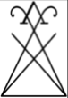
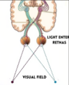
- GENESI 1:3 E L'UNIVERSO DI LUCE Walter Russell, citato per
esteso
Il libro apre con Genesi 1:3, «sia fatta la luce», per sostenere che «viviamo dentro un universo-onda-di-luce dove tutte le cose sono create dalla luce. La luce a bassa vibrazione diventa materia, la materia ad alta vibrazione ritorna in luce». Cita poi per esteso Walter Russell (1871-1963), reale filosofo e artista americano autore del trattato The Universal One (1926): «Dio è mente pensante. La sostanza o il corpo di Dio è luce». Russell è realmente esistito ed è realmente l'autore di questa cosmologia della luce, che non ha alcun riscontro nella fisica accademica ma è un corpus filosofico a sé, studiato ancora oggi da una piccola comunità di seguaci.
- «HUMAN» = «HUE MAN»: UN GIOCO DI PAROLE, NON UN'ETIMOLOGIA «hue» in inglese
significa «tonalità di colore» — ma non è la radice storica di «human»
Il libro scompone la parola inglese human in hue man — «uomo-colore» — per sostenere che ogni persona sarebbe «un attributo di un colore» determinato dalla frequenza mentale dominante, e che «dovremmo puntare a diventare violetto, il colore più alto nello spettro della luce». Per sostenerlo mostra lo screenshot di una definizione di dizionario della parola hue. È un gioco di parole basato sull'omofonia inglese, non un'etimologia reale: human deriva dal latino humanus, a sua volta legato a humus (terra, suolo) — la parola non ha alcuna radice storica in comune con hue (che viene dall'inglese antico hīw, aspetto/forma). È un procedimento che il libro applica a decine di altre parole inglesi nel corso delle 118 pagine.
- IL SIGILLO DI LUCIFERO E L'ETIMOLOGIA REALE DEL NOME «Lucifer», dal latino
«lux» (luce) e «ferre» (portare) — questa sì è un'etimologia accurata
Il libro mostra il cosiddetto «Sigillo di Lucifero» — un simbolo a due triangoli intrecciati diffuso nell'occultismo moderno, di origine non anteriore al XX secolo — sostenendo che rappresenti «il campo visivo dei due occhi» e collegandolo al nome Lucifer, che scompone in Luci = luce. Qui l'etimologia è corretta: Lucifer significa letteralmente «portatore di luce» in latino (lux/lucis, luce, e ferre, portare), ed era originariamente il nome latino del pianeta Venere come «stella del mattino» — il legame fra il nome e la luce è un fatto linguistico reale, non un'invenzione del libro. Il salto interpretativo (che il sigillo mostri anatomicamente il campo visivo) resta invece un'affermazione simbolica propria del libro, senza fonte storica indipendente.
- LO SPETTRO ELETTROMAGNETICO E LO 0,0035% il dato sulla porzione visibile è
sostanzialmente corretto
Il libro riporta un grafico dello spettro elettromagnetico e lo screenshot di un'affermazione secondo cui l'intero arcobaleno visibile all'occhio umano è «circa lo 0,0035 per cento» dello spettro elettromagnetico completo. È un dato reale e sostanzialmente corretto nell'ordine di grandezza: la banda visibile (all'incirca 380-750 nanometri) è una frazione minuscola dello spettro conosciuto, che va dalle onde radio chilometriche ai raggi gamma. Il libro lo usa per sostenere che «non vediamo la realtà» — l'inferenza filosofica è sua, ma il numero da cui parte non è inventato.
- GLI EGIZI E LA CORTECCIA VISIVA: UN FATTO DI NEUROSCIENZA REALE, UN'INTERPRETAZIONE
SIMBOLICA DELLE SCULTURE la corteccia visiva esiste davvero, riceve davvero il segnale dalle
retine
Il libro accosta una fotografia di sculture egizie a un diagramma della corteccia visiva, sostenendo che «gli antichi Egizi avevano una comprensione profonda del funzionamento della realtà e del cervello», riflessa nelle loro sculture. La corteccia visiva è un'area reale del cervello, situata nel lobo occipitale, che riceve ed elabora davvero il segnale proveniente dalle retine — questo è un fatto di neuroscienza accertato. Che le sculture egizie codifichino deliberatamente questa conoscenza anatomica è invece un'interpretazione simbolica del libro, non un dato storico o archeologico riconosciuto dall'egittologia.
Tutte le immagini di pagina 1
Le sette immagini che il libro usa in questa pagina, nell'ordine in cui compaiono nel file originale.
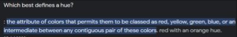
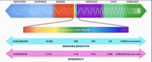
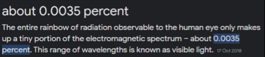
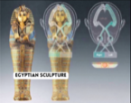
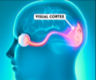
L'olio di Cristo
Il nucleo dottrinale di tutto il libro: un «fluido psico-fisico» prodotto dal cervello scenderebbe lungo la colonna vertebrale fino al sacro, per poi risalire — se «conservato» attraverso l'astinenza sessuale e alimentare — attivando il 100% del cervello. Ogni figura della storia di Gesù viene letta come metafora di questo processo anatomico immaginario.
«Gesù (l'olio) è a Nazareret (la testa) con Giuseppe e Maria (la ghiandola pineale e pituitaria) e il re Erode vuole ucciderlo. Gesù (l'olio) scende il fiume Giordano (la spina dorsale) verso Betlemme, vicino al Mar Morto (l'osso sacro).»
«da tradurre e creare una mappa come si deve», pagg. 2-3 — traduzione dall'inglese
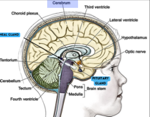
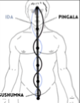
- IL PROCESSO DELL'OLIO IN SETTE PASSI claustro, pineale, pituitaria, ida, pingala, sacro, midollo allungato
Il libro descrive un processo in sette fasi: (1) il claustro produce un «fluido psico-fisico»; (2) la ghiandola pineale lo carica elettricamente («maschile, Giuseppe»); (3) la ghiandola pituitaria lo carica magneticamente («femminile, Maria»); (4) il fluido viaggia lungo due canali, ida e pingala; (5) si deposita per 2-3 giorni sull'osso sacro; (6) se «conservato», la kundalini lo trasforma in gas e lo fa risalire lungo 33 vertebre fino al midollo allungato; (7) da lì torna alla pineale e «rinasce» tutte le cellule del cervello. Claustro, pineale, pituitaria, ida, pingala e vertebre sono termini reali di anatomia e di tradizione yogica; il processo che li collega — un fluido che scende e risale trasformando la coscienza — non corrisponde a nessun processo fisiologico documentato dalla medicina.
- «CHRISTOS = GRECO PER OLIO»: UN'ETIMOLOGIA SEMPLIFICATA il vero significato è «unto», non «olio» in sé
Il libro afferma: «Christos è greco per olio, poi diventò Christ». È una semplificazione che va corretta: la parola greca Χριστός (Christós) significa letteralmente «unto» — participio del verbo chrío (ungere) — non «olio» come sostanza. La parola greca per l'olio stesso è diversa (élaion). Il legame con l'unzione rituale con olio è reale ed è proprio l'origine storica del titolo «Cristo» (l'unto, il messia, dal rito ebraico di unzione dei re e sacerdoti) — ma la parola greca non significa «olio», significa «che è stato unto con olio»: una differenza piccola ma precisa.
- SEROTONINA E DOPAMINA: DUE ATTRIBUZIONI ANATOMICHE ERRATE la pituitaria non produce serotonina, il talamo non produce dopamina in modo primario
Qui e nella pagina successiva (sui «tre saggi») il libro attribuisce alla ghiandola pituitaria la produzione di serotonina («il latte») e al talamo la produzione di dopamina, insieme alla pineale che produce melatonina («il miele»). Quest'ultima è corretta: la melatonina è realmente prodotta dalla ghiandola pineale. Le altre due non lo sono, secondo l'endocrinologia e la neuroscienza correnti: la serotonina è prodotta soprattutto nell'intestino e nei nuclei del rafe del tronco encefalico, non dalla pituitaria (che secerne altri ormoni, come l'ossitocina e il cortisolo); la dopamina è prodotta principalmente nella substantia nigra e nell'area tegmentale ventrale, non nel talamo, che ne è piuttosto un punto di passaggio e modulazione.
- IL CADUCEO COME SCHEMA ANATOMICO il simbolo medico reale, letto come diagramma dei canali energetici
Il libro mostra il caduceo — il bastone con due serpenti intrecciati e le ali, oggi diffuso come simbolo medico — sostenendo che rappresenti ida e pingala che si avvolgono attorno alla colonna vertebrale. È un accostamento visivo reale (i due serpenti si incrociano davvero come nei diagrammi tantrici), ed è un parallelo che studiosi di simbologia hanno effettivamente notato; va però ricordato un dettaglio storico che il libro non menziona: il caduceo di Hermes non è il vero simbolo della medicina — quello è il bastone di Asclepio, con un solo serpente e senza ali. L'uso del caduceo in ambito medico nasce da un errore di attribuzione dell'esercito statunitense all'inizio del Novecento.
- LA GEOGRAFIA DELLA TERRA SANTA COME ANATOMIA Nazaret la testa, il Giordano la colonna, il Mar Morto l'osso sacro
Il libro mostra una mappa reale della Palestina sovrapposta a uno scheletro umano: Nazaret in alto corrisponderebbe alla testa, il fiume Giordano al midollo spinale, Betlemme e il Mar Morto all'osso sacro. È l'immagine che condensa tutta la tesi del capitolo — la geografia biblica letta come mappa del corpo — e non ha alcun fondamento nella geografia storica o nell'esegesi: è la costruzione simbolica propria di questo filone esoterico novecentesco.
- LA SCALA DI GIACOBBE E LA COLONNA VERTEBRALE un'interpretazione simbolica, non un fatto storico sul testo biblico
Il libro legge l'episodio biblico della scala di Giacobbe (Genesi 28, di cui riporta lo screenshot del testo) come allegoria del midollo spinale: la roccia su cui Giacobbe si addormenta sarebbe l'osso sacro, la scala che sale al cielo sarebbe la colonna vertebrale. Nota, correttamente, che i simboli massonici associano davvero la colonna vertebrale a una scala o scalinata — è un'osservazione reale sull'iconografia massonica, come mostrano le due tavole riprodotte — ma l'interpretazione del testo biblico stesso come allegoria anatomica resta una lettura simbolica del libro, non un dato di esegesi biblica condivisa.
- GOLGOTA COME «LUOGO DEL CRANIO»: UN DATO FILOLOGICO REALE «Golgota» significa davvero «cranio» in aramaico
Il libro sovrappone l'immagine della crocifissione a una sezione del tronco encefalico, notando che «Golgota si traduce come "luogo del cranio"». Questo dato linguistico è corretto: Gulgaltā in aramaico significa davvero «cranio» (da cui il latino Calvariae locus, il Calvario), e i Vangeli stessi lo glossano così (Marco 15:22). Il libro ne trae che la crocifissione avvenga letteralmente dentro la testa, sul tronco encefalico a forma di croce: la traduzione del nome è un fatto, l'anatomia mistica che ne deriva è un'interpretazione.
Tutte le immagini di pagina 2
Le otto immagini della pagina sull'olio di Cristo.
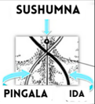
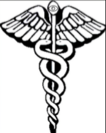
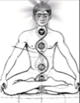
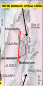
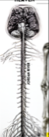
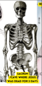
Tutte le immagini di pagina 3
Le tredici immagini della pagina sulle 33 vertebre e la scala di Giacobbe.
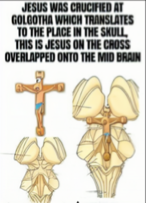
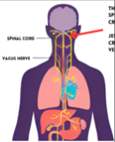
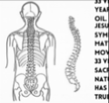
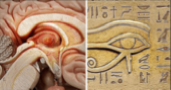
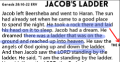
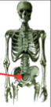
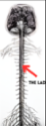
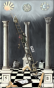
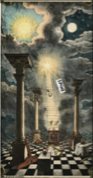
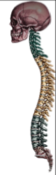
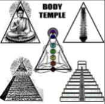
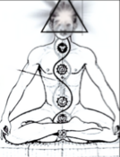
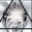
I tre saggi e il serpente di Mosè
I tre re magi del Natale diventano le tre ghiandole del cervello (pineale, pituitaria, talamo); il serpente innalzato da Mosè nel deserto diventa la kundalini; la Trimurti induista (Brahma, Vishnu, Shiva) diventa anima, mente e corpo.
«Così come Mosè innalzò il serpente nel deserto, così il Figlio dell'uomo deve essere innalzato.»
«da tradurre e creare una mappa come si deve», pagg. 4-5 — traduzione dall'inglese, citando Giovanni 3:14
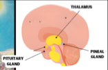
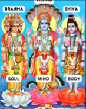
- PINEALE, PITUITARIA E TALAMO: TRE STRUTTURE REALI, UNA FUNZIONE SIMBOLICA il talamo esiste davvero e ha davvero un ruolo in percezione e coscienza
Il libro identifica pineale, pituitaria e talamo come «i tre saggi» del racconto natalizio, elencando funzioni reali della dopamina (regolazione dell'umore, controllo motorio, apprendimento, sonno) tratte da nozioni di neuroscienza effettivamente accurate — anche se, come già notato, la loro attribuzione specifica al talamo come sede primaria di produzione non corrisponde alla fisiologia reale. Il talamo è comunque un centro reale e importante di transito e integrazione sensoriale, non una struttura inventata.
- BABBO NATALE E IL CLAUSTRO: UN'ASSONANZA, NON UN'ETIMOLOGIA «claustrum» e «Claus» non hanno alcuna parentela linguistica
Il libro accosta il claustro (in latino claustrum, una sottile lamina di sostanza grigia realmente presente nel cervello) al nome di Santa Claus, e la discesa dei regali per il camino alla discesa dell'olio lungo la colonna — con tanto di fotografia di un camino. L'assonanza esiste solo in inglese e non regge storicamente: Santa Claus viene dal nederlandese Sinterklaas, contrazione di Sint Nicolaas (San Nicola), mentre claustrum è il latino per «chiusura, recinto». Due parole senza rapporto, che si somigliano solo per caso.
- IL SERPENTE DI MOSÈ E LA KUNDALINI Giovanni 3:14, citato correttamente — l'interpretazione kundalinica è del libro
Il libro cita Giovanni 3:14 («così come Mosè innalzò il serpente nel deserto», riferimento reale a Numeri 21:9, il serpente di bronzo innalzato da Mosè) per sostenere che il serpente rappresenti l'energia della kundalini, e che innalzarla «dà la capacità di lasciare il corpo ed esplorare altre realtà». Riporta due dipinti storici dell'episodio. La citazione biblica è corretta; la lettura kundalinica è un'interpretazione esoterica moderna, diffusa in alcuni circoli di sincretismo induista-cristiano ma non condivisa dall'esegesi biblica tradizionale né dalla storia delle religioni accademica.
- BRAHMA, VISHNU, SHIVA: DIVINITÀ REALI DELL'INDUISMO, RIDOTTE A UNA METAFORA OCCIDENTALE la Trimurti è un concetto induista reale — qui applicata a un modello di anima/mente/corpo estraneo alla sua tradizione
Il libro accosta Brahma, Vishnu e Shiva — le tre divinità reali della Trimurti induista (rispettivamente creatore, conservatore e distruttore dell'universo) — a una tripartizione anima/mente/corpo, e nota che Brahma è spesso raffigurato con più volti. La Trimurti è un concetto reale e centrale dell'induismo; la sua traduzione specifica in una griglia anima-mente-corpo di matrice occidentale è una costruzione del libro, non una dottrina induista riconosciuta in quella forma.
- IL BA EGIZIO: L'UCCELLO-ANIMA È UN CONCETTO EGIZIO REALE gli uccelli come simbolo dell'anima non sono un'invenzione del libro
Il libro afferma che «gli uccelli simboleggiano lo Spirito Santo/l'anima» e lo illustra con tre papiri egizi. Qui l'aggancio storico è solido: nella religione egizia il ba, una delle componenti della persona che sopravvive alla morte, era rappresentato proprio come un uccello con testa umana, spesso raffigurato mentre sorvola la mummia — è esattamente ciò che si vede in una delle immagini riportate. L'accostamento con la colomba dello Spirito Santo cristiano è invece un parallelo simbolico del libro, non una derivazione storica documentata.
Tutte le immagini di pagina 4
Le tre immagini della pagina sui «tre saggi».
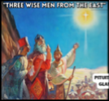
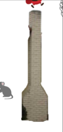
Tutte le immagini di pagina 5
Le otto immagini della pagina sul serpente e sulla triade anima-mente-corpo.
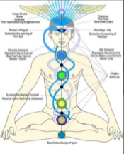
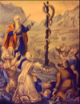
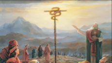
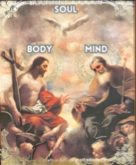
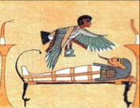
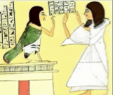
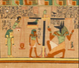
Il terzo occhio
La ghiandola pineale come «terzo occhio»: la sua anatomia reale, la tecnica di attivazione proposta (meditazione, respirazione, sun gazing), l'affermazione — reale ma dibattuta — sul fluoro e la calcificazione, e l'accusa che il Vaticano abbia deliberatamente occultato questa conoscenza. È la sezione con più immagini di tutta la parte: ventotto.
«La ghiandola pineale è un corpo a forma di cono, alto 6 mm e largo 4 mm di diametro.»
«da tradurre e creare una mappa come si deve», pagg. 6-8 — traduzione dall'inglese
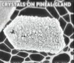
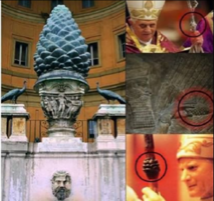
- LE DIMENSIONI REALI DELLA GHIANDOLA PINEALE 6×4 mm dichiarati dal libro — la misura reale è vicina, un poco più grande
Il libro descrive la ghiandola pineale come «un corpo a forma di cono, alto 6 mm e largo 4 mm di diametro». È una struttura anatomica reale, situata al centro del cervello: le misure tipiche riportate dall'anatomia sono di circa 5-8 mm di lunghezza e 3-5 mm di larghezza in un adulto — il valore del libro è plausibile e rientra in quell'intervallo, anche se leggermente approssimato per difetto sulla lunghezza. Le tre risonanze magnetiche riprodotte a pagina 8 (assiale, coronale, sagittale) mostrano davvero la sua posizione reale al centro del cranio.
- MICROCRISTALLI NELLA PINEALE: UN FATTO SCIENTIFICO REALE, POCO NOTO la calcite piezoluminescente esiste davvero — è oggetto di studi di neuroscienza minoritari ma pubblicati
Il libro afferma che «la ghiandola pineale è coperta di microcristalli» con proprietà piezoluminescenti, e ne riporta una micrografia. Questo è uno dei pochi punti di questo capitolo con un riscontro scientifico reale e verificabile: la ghiandola pineale accumula effettivamente, con l'età, depositi di calcite (carbonato di calcio) sotto forma di microcristalli, un fenomeno studiato — seppure in una nicchia di ricerca minoritaria — anche per le sue possibili proprietà piezoelettriche (per esempio dal fisico francese Simon Baconnier e colleghi, in una pubblicazione del 2002). Il salto dal fatto scientifico («ci sono microcristalli di calcite») alla conclusione mistica («per questo si dice illuminazione») resta un'interpretazione del libro, non una conclusione della ricerca citata.
- LA PIGNA: UN'ICONOGRAFIA REALE E DIFFUSA, UN SIGNIFICATO CONTESO la pigna del Vaticano e il bastone di Osiride esistono davvero — cosa significassero è un'altra questione
Il libro raccoglie una serie di immagini reali: la colossale pigna bronzea del Vaticano (un'opera romana del I-II secolo, oggi nel Cortile della Pigna), le divinità sumere raffigurate con in mano un oggetto a forma di pigna, il bastone di Osiride con due serpenti che si avvolgono verso una pigna, le statue indù e buddhiste con un segno al centro della fronte. Gli oggetti e le opere esistono tutti e sono correttamente identificati: la pigna è davvero un motivo iconografico ricorrente in culture diverse. Che tutte queste culture intendessero rappresentare la ghiandola pineale è invece l'interpretazione del libro — una tesi diffusa nella letteratura esoterica contemporanea, ma non sostenuta dagli studi archeologici, che per il cosiddetto «secchiello e pigna» assiro propongono letture rituali diverse (un aspersorio per la purificazione, per esempio).
- FLUORO E CALCIFICAZIONE PINEALE: UNA RICERCA REALE, NON UNA CERTEZZA SCIENTIFICA CHIUSA lo studio di Jennifer Luke (2001) esiste davvero — ma non stabilisce un nesso causale univoco
Il libro scrive: «la ricerca indica che il fluoro può portare alla calcificazione della ghiandola pineale». Non è un'invenzione: esiste una ricerca reale, condotta dalla biologa britannica Jennifer Luke nel 2001, che trovò concentrazioni di fluoro più elevate nel tessuto pineale calcificato di cadaveri analizzati. È però uno studio isolato, mai replicato in modo indipendente su larga scala, e la comunità scientifica lo considera un'ipotesi preliminare, non un nesso causale stabilito: la calcificazione pineale è un fenomeno che avviene comunque, universalmente, con il semplice avanzare dell'età, a prescindere dall'esposizione al fluoro.
- IL SUN GAZING: UNA PRATICA REALE, CON RISCHI OCULARI REALI E DOCUMENTATI osservare il sole a occhio nudo può causare retinopatia solare, anche irreversibile
Il libro consiglia di praticare il sun gazing (osservare il sole, inizialmente all'alba o al tramonto) per «decalcificare e attivare» la pineale, e mostra lo schema reale della via retino-ipotalamica attraverso cui la luce regola davvero la produzione di melatonina. La via nervosa è reale; la pratica invece comporta rischi che l'oftalmologia documenta con chiarezza: anche la luce solare attenuata dell'alba o del tramonto può causare retinopatia solare, un danno alla retina che in alcuni casi è permanente, perché la retina non ha recettori del dolore che avvertano del danno mentre accade. Il libro non menziona questo rischio documentato.
- H. P. BLAVATSKY: UNA FIGURA STORICA REALE, CITATA IN MODO PLAUSIBILE fondatrice reale della Società Teosofica — la citazione specifica non è stata verificata riga per riga
Il libro cita Helena Petrovna Blavatsky (1831-1891), realmente fondatrice della Società Teosofica e autrice di La Dottrina Segreta, a sostegno dell'idea che l'organo percettivo del cervello risieda nell'«aura» della pineale, visibile solo ai chiaroveggenti. Blavatsky è una figura storica reale e questo tipo di affermazione è coerente con il suo corpus teosofico; la citazione specifica riportata dal libro non è stata rintracciata parola per parola in questa sede nei suoi testi originali.
- IL VATICANO E LA «CONOSCENZA SOPPRESSA»: UN'ACCUSA NON VERIFICABILE, NON UN FATTO STORICO DOCUMENTATO nessuna fonte storica indipendente citata dal libro stesso
Il libro afferma che «il Vaticano ha soppresso le informazioni sui poteri mistici della ghiandola pineale» e che la Chiesa avrebbe «distrutto e rubato tutta la conoscenza e le biblioteche» dell'antichità per creare «una Bibbia codificata» che distogliesse le persone dal cercare Dio dentro di sé. È un'affermazione dello stesso genere di molte già incontrate nella biblioteca (per esempio in Rapporto Vesica): plausibile come narrazione, ma priva di una fonte storica verificabile citata dal libro stesso — nessun documento, archivio o studio storiografico viene indicato a supporto. Curiosamente, la prova visiva che il libro porta contro il Vaticano — la pigna monumentale nei Musei Vaticani — è un'opera che il Vaticano espone pubblicamente da secoli.
- L'OCCHIO DI HORUS E LE FRAZIONI DEI SENSI la scomposizione in frazioni è reale, il suo uso matematico è documentato
Fra le immagini compare la scomposizione dell'Occhio di Horus (o udjat) nelle sue sei parti, ciascuna associata a un senso e a una frazione (1/2, 1/4, 1/8, 1/16, 1/32, 1/64). È un dato reale della storia della matematica egizia: quelle frazioni venivano davvero usate come sistema di misura per le granaglie, e la loro somma dà 63/64 — il «sessantaquattresimo mancante», che secondo una tradizione veniva fornito da Thoth. La lettura del libro (l'occhio come mappa della sezione del cervello) resta invece un accostamento visivo moderno.
Tutte le immagini di pagina 6
Le due immagini della pagina sul terzo occhio.
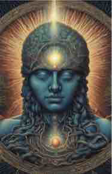
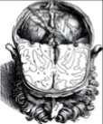
Tutte le immagini di pagina 7
Le tredici immagini della pagina sulla ghiandola pineale: anatomia reale, micrografie e iconografia della pigna.
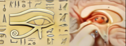
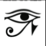
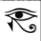
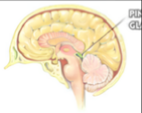
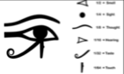
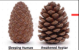
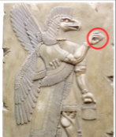
Tutte le immagini di pagina 8
Le tredici immagini della pagina sul «trono di Dio» al centro del cervello, comprese tre risonanze magnetiche reali.
Il Santo Graal
Il Graal come metafora del collo e del cranio, che «si riempiono» ogni mese di «latte e miele»; e la distinzione, presa in prestito dalla storia religiosa reale, fra insegnamento interno (per pochi) ed esterno (per le masse).
«O non sapete che il vostro corpo è tempio dello Spirito Santo che è in voi?»
«da tradurre e creare una mappa come si deve», pag. 9 — traduzione dall'inglese, citando 1 Corinzi 6:19-20
- IL GRAAL COME COLLO E CRANIO un'estensione del simbolismo già incontrato per il «latte e miele»
Il libro presenta il Santo Graal come simbolo di «collo e cranio», riempiti ogni mese dal «fluido sacro» prodotto dal sole (pineale) e dalla luna (pituitaria) — la stessa coppia simbolica di «latte e miele» già incontrata nella sezione precedente. Lo illustra sovrapponendo letteralmente l'immagine di un calice a quella di un cranio con le prime vertebre. È una continuazione diretta del sistema simbolico del libro, non un'aggiunta nuova.
- ESOTERICO CONTRO ESSOTERICO: UNA DISTINZIONE STORICA REALE, CON I DUE TERMINI SCAMBIATI il libro inverte i due termini, ma il fenomeno che descrive è documentato
Il libro sostiene che la Chiesa e le altre religioni insegnino alle masse gli insegnamenti «esterni», mentre «le persone al potere» riceverebbero quelli «interni» sul corpo, la coscienza e la metafisica — usando però i due termini in modo invertito rispetto al loro significato standard (è esoterico a indicare l'insegnamento riservato e interno, essoterico quello pubblico ed esterno; il libro li scambia, con ogni probabilità per una svista). La distinzione fra un livello di insegnamento pubblico e uno riservato a un'élite iniziata è reale e documentata in diverse tradizioni storiche (i misteri eleusini nell'antica Grecia, alcune correnti gnostiche del primo cristianesimo, la struttura per gradi della massoneria): l'esistenza storica del fenomeno è reale, la sua applicazione specifica al cristianesimo istituzionale contemporaneo resta un'affermazione del libro, non un dato storiografico condiviso.
- «LA TUA REALTÀ È IL TUO LIVELLO DI REALIZZAZIONE» il gioco di parole finale della pagina
La pagina si chiude con l'affermazione che la Bibbia «è scritta in modo tale da risuonare con il tuo livello di comprensione» — leggibile fisicamente, storicamente o metaforicamente a seconda di quanto si è «espansa la mente» — e con il gioco di parole inglese «real-ity is your level of reali-zation» («la tua realtà è il tuo livello di realizzazione»), che in italiano funziona altrettanto bene per assonanza fra realtà e realizzazione, pur senza condividerne la radice etimologica.
Tutte le immagini di pagina 9
Le tredici immagini della pagina sul Santo Graal.
Parte III
Il corpo sottile
Pagine 10-21 del libro originale, tradotte per intero. Il corpo umano letto come mappa del cosmo — l'albero della vita è l'apparato cardiocircolatorio, i quattro fiumi dell'Eden sono quattro fluidi corporei —, poi i quattro piani dell'esistenza, il piano astrale con i sigilli planetari, la tecnica di proiezione astrale, la Merkaba, il sé superiore e inferiore, i sette chakra come i sette sigilli dell'Apocalisse, i tre cervelli e i chakra di mani e piedi. In fondo a ogni sezione ci sono tutte le immagini delle pagine che copre: sono sessantasette, e nel libro sono argomentazione, non decorazione.
Come dentro, così fuori
Titolo originale delle due pagine: AS WITHIN SO WITHOUT. È il capitolo che fonda tutto il resto del libro: il corpo umano non assomiglia al cosmo, è il cosmo in miniatura. L'albero della vita del Genesi diventa l'apparato cardiocircolatorio, l'albero della conoscenza il sistema nervoso, i quattro fiumi dell'Eden quattro fluidi del corpo, il Tempio di Salomone il corpo stesso — e le stagioni dell'anno si ripetono dentro la vita di un uomo.
«Il sistema cardiovascolare è l'albero della vita, perché dà vita al corpo fisico. Genesi 2:9: "l'albero della vita era in mezzo al giardino". Il giardino è il tuo corpo, e il mezzo è il centro, che è il cuore.»
«da tradurre e creare una mappa come si deve», pagg. 10-11 — traduzione dall'inglese
- I DUE ALBERI DEL GIARDINO SONO DUE APPARATI DEL CORPO Genesi 2:9, citato dal libro
Il versetto che il libro cita — «l'albero della vita era anche in mezzo al giardino, e l'albero della conoscenza del bene e del male» — è reale e la traduzione è fedele al testo della King James Version. L'interpretazione, invece, è tutta del libro: l'albero della vita è il sistema cardiovascolare, perché «fornisce vita al corpo fisico», e l'albero della conoscenza del bene e del male è il sistema nervoso, «perché dà alla nostra mente la conoscenza del bene e del male». Il ragionamento è quello, ricorrente in tutto il libro, che chiama come dentro così fuori: ogni cosa raccontata nelle scritture come un luogo esterno è in realtà una parte del corpo.
- IL CUORE COME CENTRO MAGNETICO «5000 volte più forte magneticamente del cervello» — è una cifra che circola davvero, e ha una fonte
Il libro scrive che «il cuore è il centro del campo elettromagnetico del corpo, e al centro di ogni campo toroidale c'è il magnetismo. Il magnetismo pulsa e irradia: è per questo che hai un battito cardiaco», e che il cuore sarebbe «5000 volte più forte magneticamente del cervello». La cifra non è inventata dall'autore: viene dalle pubblicazioni dell'HeartMath Institute (California), che misura il campo magnetico cardiaco con la magnetocardiografia e lo dichiara circa 5000 volte più intenso di quello cerebrale. Il dato di misura è reale; ciò che non segue è la conseguenza che il libro ne trae — che sia il magnetismo a causare il battito. In fisiologia il battito nasce dalla depolarizzazione spontanea del nodo senoatriale, e il campo magnetico è un effetto delle correnti elettriche che l'accompagnano, non la loro causa.
- IL SISTEMA NERVOSO COME PROGRAMMA la tesi che tornerà in tutto il libro
«Il sistema nervoso decodifica gli impulsi elettrici che gli vengono dal mondo esterno e li riporta al cervello. La nostra coscienza sta in pratica sperimentando un programma messo in scena dal sistema nervoso centrale.» È la formulazione più netta del presupposto gnostico del libro: la realtà percepita è un'interfaccia, non il mondo. Da qui discende, più avanti, che l'incarnazione sia una discesa in una «simulazione dualistica» per acquisire «la conoscenza del dualismo».
- I QUATTRO FIUMI DELL'EDEN = QUATTRO FLUIDI DEL CORPO Genesi 2:10
Il libro elenca: 1) sangue · 2) saliva · 3) olio di Cristo · 4) sperma e fluido vaginale. L'«olio di Cristo» è il fluido cerebrospinale, già trattato nella sezione dedicata della Parte II. Nel testo biblico i quattro fiumi hanno nomi propri (Pison, Ghihon, Tigri ed Eufrate) e due di essi sono fiumi reali e identificabili: l'equivalenza con i fluidi corporei è un'aggiunta del libro, non una lettura contenuta nella fonte.
- SOL-MON: «SOLE = ANIMA, LUNA = MENTE» un gioco fonetico sull'inglese, non un'etimologia dell'ebraico
Il libro spezza Solomon in Sol = anima (soul) e mon = mente (moon, luna), e ne ricava che «il corpo è il tempio dell'anima e della mente» e che «il Tempio di Salomone sei tu». Il nome ebraico è in realtà Shelomoh, dalla radice shalom (pace, integrità); la scomposizione funziona solo passando per la forma latina e per l'inglese, ed è quindi un gioco di parole, non una derivazione storica. Vale la pena registrarlo perché lo stesso procedimento regge decine di passaggi del libro — inclusi, in questa stessa pagina, ster = star («sei una stella»: mister, minister, sister, monster, master) e heel = hell, il tallone che è l'inferno, ripreso in chiusura di parte.
- «SEI UN FOTONE QUANTISTICO» pagina 10, in chiusura
«Esisti come un fotone quantistico, simile a un'entità celeste, che abita una forma fisica. Con consapevolezza onnisciente, sei connesso direttamente alla sorgente, incarnando in sostanza l'essenza di un'entità divina. Durante la nostra incarnazione in questo regno, però, subiamo una separazione dalla sorgente e sperimentiamo una mancanza di consapevolezza delle nostre vere intuizioni divine, a causa del programma orchestrato dal sistema nervoso centrale.» Il vocabolario è quello della fisica quantistica, ma l'uso è metaforico: un fotone è un quanto di campo elettromagnetico e non ha né memoria né consapevolezza. Il libro non lo presenta come un'ipotesi fisica, lo usa come immagine della natura luminosa della coscienza.
- LE STAGIONI DENTRO L'UOMO pagina 11 — un passaggio di ascendenza ermetica, riscritto
«Proprio come l'anno ha le sue quattro stagioni, così ci sono stagioni dentro la vita dell'uomo. Non è soggetto solo all'inverno intorno a lui: l'inverno è dentro di lui. Non è influenzato solo dai grandi moti ciclici della terra, ma da cicli più piccoli, per il fatto che il corpo stesso è un mondo in miniatura — un microcosmo nella cui costituzione tutti i processi più grandi sono riprodotti in piccolo.» Il passo è nello stile di Manly P. Hall, autore di The Secret Teachings of All Ages (1928), da cui il libro attinge in più punti senza mai citarlo esplicitamente. Ne segue l'applicazione astrologica: «all'esaltazione del Sole in Cancro le persone sperimentano spesso una creatività, una felicità e un'energia accresciute. Questo allineamento astrologico avviene dentro di noi tanto quanto fuori di noi», mentre il Sole «in stato debole in Capricorno» avrebbe effetti mentali, fisici e spirituali negativi.
- SALMO 82:6, IL VERSETTO CHE TORNA citazione reale, riportata correttamente
«Io ho detto: voi siete dèi, e siete tutti figli dell'Altissimo. Ma morirete come uomini, e cadrete come uno dei principi.» La citazione è fedele al Salmo 82:6-7 della King James Version. Il libro la usa come prova scritturale della propria tesi centrale — «siamo una scintilla di Dio, il Verbo fatto carne» — e la ripeterà nella sezione sulla coscienza. Nel contesto originale il salmo si rivolge ai giudici d'Israele, ed è un rimprovero: siete stati chiamati dèi e proprio per questo morirete come uomini. Il libro ne trattiene la prima metà.
- LO «YOU-NIVERSE» pagina 11, l'immagine che chiude il capitolo
Il libro chiude con un gioco sulla parola universe riscritta you-niverse — l'universo come tuo — e con l'affermazione che «il sistema dell'anima è dentro di te», con la pineale e la pituitaria segnate al centro della testa come sole e luna interni. È l'anticipazione della Parte IV, dove la testa diventerà il cielo.
Tutte le immagini di pagina 10
Le dieci immagini della pagina «come dentro, così fuori», nell'ordine in cui compaiono nel file originale.
Tutte le immagini di pagina 11
Le tre immagini della pagina sulle stagioni e sullo «you-niverse».
I piani dell'esistenza
Titolo originale: PLANES OF EXISTANCE (l'errore di ortografia è del libro). La pagina espone la scala dei quattro piani — mentale, astrale, eterico, fisico — e la regola che li lega: ogni piano è il prodotto di quello sopra, e il mondo fisico è il piano dell'effetto, mai della causa.
«Ci sono diversi livelli di realtà. Non sono separati: si fondono nel piano che sta sopra e in quello che sta sotto. In altre parole, ogni piano è un prodotto del piano che sta sopra. Più alto è il piano, più diventa fluido e privo di forma; più basso è il piano, più diventa materiale e solido.»
«da tradurre e creare una mappa come si deve», pag. 12 — traduzione dall'inglese
- IL PIANO MENTALE: I PENSIERI NON SI CREANO, SI RICEVONO l'idea più operativa della pagina
«Il piano mentale è la dimensione della mente. La mente è una parte della mente universale, e quindi il piano mentale è condiviso fra tutte le menti che esistono. È il mondo dei pensieri. I pensieri non vengono creati: vengono ricevuti, in base alla frequenza su cui la nostra mente è impostata. È per questo che la chiamiamo mindset — un'impostazione della mente. Ogni pensiero, tema e argomento è una frequenza: quando imposti la mente su quei temi, ricevi i pensieri che stanno su quella stessa frequenza.» È lo stesso schema che il Transurfing chiama spazio delle varianti — i pensieri come qualcosa che si sintonizza, non che si produce — arrivato qui per una via del tutto indipendente.
- IL PIANO ASTRALE: DOVE IL PENSIERO PRENDE FORMA e i suoi tre livelli
«Il piano astrale è dove i pensieri si manifestano in forme. Per esempio: il piano mentale è il pensiero della sedia, e il piano astrale è l'immaginazione di quella sedia. È in pratica il mondo dell'immaginazione e delle immagini mentali. Lo schermo che vediamo nella nostra mente quando immaginiamo qualcosa è il piano astrale.» Il libro lo divide in tre livelli — alto, medio e basso — secondo la frequenza vibratoria del pensiero che vi si manifesta: amore e gioia in alto, «odio, omicidio e lussuria» in basso. Ne discende l'avvertimento che tornerà nella sezione sulla proiezione astrale: «vedrai e incontrerai solo esseri che stanno su una frequenza simile alla tua».
- IL PIANO ETERICO E IL GIOCO SU «EITHER» un'etimologia inventata, dichiarata come tale dal libro stesso
«Il piano eterico è il mondo dell'energia, dell'elettricità e del magnetismo. È il quinto elemento, noto anche come spirito o etere. L'etere è una sostanza che ha un piede nel mondo fisico e un piede nel mondo astrale.» Il libro sostiene poi che ether sia l'origine dell'inglese either («o l'uno o l'altro») e che compaia dentro together («insieme»): «sta unendo due piani». Nessuna delle due derivazioni è reale — either viene dall'inglese antico ǣghwæther, together da tō gædere, e ether dal greco aithēr — ma la coincidenza grafica è il tipo di argomento su cui il libro costruisce, e va registrata per quello che è. Qui il libro colloca anche gnomi, folletti e troll: «entità che hanno la capacità di materializzarsi o restare nel corpo astrale a loro piacimento».
- IL PIANO FISICO È IL MONDO DELL'EFFETTO e la conseguenza pratica
«Il piano fisico è il mondo della materia, governato dai cinque elementi. È il mondo dell'effetto. Tutto ciò che sperimentiamo e vediamo con i due occhi è l'effetto dei piani superiori. È da qui che viene il detto come sopra così sotto: cambi i piani superiori dell'esistenza, cambi il piano fisico.» Da questo il libro fa discendere che «la magia è davvero reale»: maghi e occultisti avrebbero metodi per contattare le entità astrali ed eteriche, che a loro volta possono manipolare il piano fisico. La regola pratica che ne trae è una sola riga: «cambia la tua mente e cambi la tua realtà. Come dentro, così fuori.»
- I DUE PILASTRI MASSONICI E IL NUMERO 11 la lettura simbolica che il libro ripete anche a pagina 13
«I due pilastri massonici simboleggiano il numero 11. È il rispecchiamento delle realtà dentro i piani dell'esistenza. Qualunque cosa fai nel piano astrale si manifesterà nel mondo fisico: è come uno specchio. È per questo che nell'arte massonica si vedono sempre due pilastri.» Nella tradizione massonica i due pilastri hanno nomi propri, Jachin e Boaz, e vengono dalla descrizione del Tempio in 1 Re 7:21; l'associazione al numero 11 e ai piani è un'aggiunta dell'autore.
- LEONARDO CHE INDICA IN ALTO l'immagine e il commento del libro
Il libro riproduce il San Giovanni Battista di Leonardo — la figura con l'indice puntato verso l'alto — e commenta: «Leonardo da Vinci sta simboleggiando come sopra così sotto. Guarda in alto, perché è lì che sta la causa. Non ha senso guardare quaggiù, perché il piano fisico è il mondo dell'effetto: qualunque cosa vedi e sperimenti è l'effetto della tua mente. Quindi guarda in alto, alla causa.» Chiude con l'affermazione che «le stelle non sono luoghi fisici: sono portali verso il piano astrale», e con «lo spazio è falso» — la prima comparsa, qui appena accennata, del tema che occuperà tutta la Parte V.
Tutte le immagini di pagina 12
Le quattro immagini della pagina sui piani dell'esistenza.
Il piano astrale
Titolo originale: THE ASTRAL PLANE. La pagina più densa del gruppo: la materia astrale come «proto-materia» plasmabile dal pensiero, i sigilli come marchi caricati di energia collettiva — con l'esempio dello swoosh della Nike —, i sette sigilli planetari con le loro virtù, e la tesi che la religione organizzata sia uno strumento di raccolta di energia per entità astrali.
«Il piano astrale è fatto di pensieri mentali che si manifestano in materia astrale. I pensieri che pensiamo sono davvero cose: è per questo che si dice "i pensieri sono cose". Più potere mentale diamo a un pensiero, più esso si manifesta nel piano astrale.»
«da tradurre e creare una mappa come si deve», pag. 13 — traduzione dall'inglese
- DUE LIVELLI: SOLARE E LUNARE l'apertura del capitolo
«Il piano astrale esiste accanto al regno fisico e comprende sia un livello solare divino sia un livello lunare inferiore. Il livello divino contiene i progetti di tutte le cose, mentre il livello basso è la prima sfera che l'anima raggiunge dopo la morte. Il piano astrale non ha un paesaggio naturale: appare bianco e privo di forma, ed è fatto di materia astrale. Questa sostanza può essere manipolata magicamente, come una proto-materia, per creare forme-pensiero. Gli oggetti creati sul piano astrale possono infine manifestarsi nel regno fisico.»
- I SIGILLI: L'ETIMOLOGIA È GIUSTA «sigillum» in latino significa davvero «sigillo»
«Un sigillo è un simbolo magico usato nelle pratiche esoteriche, che spesso funge da rappresentazione pittorica o firma di una divinità o di uno spirito, come un angelo o un demone. Il termine sigil affonda nella parola latina sigillum, che si traduce come sigillo.» Qui l'etimologia che il libro propone è corretta — sigillum è il diminutivo di signum — a differenza della gran parte dei giochi di parole del volume. Vale la pena segnalarlo: il libro non sbaglia sempre, e distinguere i casi è il modo di leggerlo senza né berlo né liquidarlo in blocco.
- LO SWOOSH DELLA NIKE COME SIGILLO COLLETTIVO l'esempio con cui il libro rende concreta la tesi
«I pensieri su cui ci concentriamo possono materializzarsi nella quarta dimensione. Se teniamo costantemente un pensiero, esso si trasforma in una forma astrale. Più energia emotiva investiamo, più diventa forte. Questo principio vale anche per i sigilli. Prendi i loghi aziendali, come lo swoosh della Nike. Negli anni, milioni di menti gli hanno dato attenzione mentale ed energia emotiva. Il simbolo porta un'energia astrale creata dalla percezione collettiva delle masse, che può essere positiva o negativa.» Da qui il consiglio pratico: «indossare sigilli può giovarci o influenzarci negativamente, a seconda di quali sigilli portiamo e teniamo davanti agli occhi».
- «GLI DÈI NON SONO PIANETI» — LE SETTE ENERGIE COSMICHE la tavola dei sigilli planetari e delle loro virtù
«Gli dèi non sono pianeti: sono sette energie cosmiche che emanano la loro energia e le loro qualità uniche a tutto ciò che sta sulla faccia della terra. Indossa i loro sigilli se desideri acquisirne le virtù.» Le sette corrispondenze che il libro elenca sono: Saturno — struttura e disciplina · Luna — datore di vita · Mercurio — emotività · Giove — intelligenza · Sole — doni spirituali · Marte — protettore di sé · Venere — amore. È la prima comparsa dei sette pianeti classici, che diventeranno una parte intera della mappa (Parte VII, astrologia e cicli celesti). I sigilli riprodotti sono i tradizionali sigilla planetari dell'astrologia magica rinascimentale, ricavati dai quadrati magici dei pianeti.
- LA BIBBIA A LIVELLI DI LETTURA il presupposto ermeneutico del libro intero
«La Sacra Bibbia e gli altri testi religiosi sono composti in modo da risuonare con individui a diversi livelli di comprensione. Un bambino che legge queste scritture può ricavarne una percezione semplice e generica, che sottolinea l'amore e la gentilezza. Chi invece è versato negli insegnamenti occulti o nell'astrologia può discernere nel testo codici più profondi e metafisici.» È la premessa che autorizza tutto il resto: se il senso letterale è solo il primo livello, ogni rilettura simbolica diventa legittima. Va notato che il criterio non è mai esplicitato — il libro non dice come si distingua un codice nascosto reale da una coincidenza — ed è questo, più delle singole tesi, il punto su cui il lettore deve tenere gli occhi aperti.
- RELIGIONE, MENTI-ALVEARE E RACCOLTA DI ENERGIA la tesi più netta della pagina
«Dirigere pensieri, energia e attenzione verso la divinità "Gesù Cristo" fa emergere un'entità dentro il piano astrale. La religione organizzata funziona come uno strumento di raccolta di energia per entità del regno astrale. Invece di predicare l'adorazione, dovremmo cercare di incarnare nella nostra vita le qualità associate a Gesù.» E poi: «chi è in posizione di potere sta orchestrando una coscienza collettiva, una mente-alveare per le masse. L'intento è stabilire una religione globale, unificando i sistemi di credenza e portando all'evocazione di un demone nel piano astrale.» È la tesi gnostico-cospirativa che regge il libro: la struttura è quella classica della gnosi antica — un mondo-prigione governato da potenze che si nutrono dell'ignoranza degli incarnati — trasferita su attori politici contemporanei mai nominati. Il libro non porta alcun elemento a sostegno della parte fattuale dell'affermazione (chi, dove, quando): resta una cornice interpretativa, e come tale va letta.
Tutte le immagini di pagina 13
Le dodici immagini della pagina sul piano astrale: l'illustrazione di apertura, i sette sigilli planetari, l'arte massonica e i tre glifi dei pianeti restanti.
La proiezione astrale e il corpo di luce
Titoli originali: ASTRAL PROJECTION e BODY OF LIGHT. La pagina più operativa del gruppo: undici passi per tentare la proiezione astrale, l'avvertimento che «tu crei i demoni», la rilettura di Gesù che cammina sulle acque come proiezione astrale, e la Merkaba come veicolo di ascensione.
«La tua mente è il proiettore della tua anima. La tua anima è chi fa esperienza, l'osservatore. Quando fai proiezione astrale, stai usando la mente per proiettare l'anima fuori dal corpo fisico, nel piano astrale, dove non ci sono limiti di tempo e di spazio.»
«da tradurre e creare una mappa come si deve», pagg. 14-15 — traduzione dall'inglese
- COSA SAPERE PRIMA le premesse che il libro mette in cima alla pagina
Il libro elenca: «il piano astrale è la quarta dimensione, è l'invisibile di ciò che vediamo» · «è dove esistono le forme-pensiero (le immagini mentali)» · «può essere visto solo con l'occhio della mente» · «incontrerai esseri ed entità che corrispondono alla tua frequenza, quindi assicurati di vibrare il più in alto possibile prima di provare a proiettarti» · «tutto ciò a cui pensi si manifesterà istantaneamente nel piano astrale» · «la tua visione nel piano astrale non sarà molto nitida le prime volte: devi lavorare per rafforzarla».
- «TU CREI I DEMONI» la parte psicologicamente più interessante del capitolo
«Le idee che intratteniamo mentalmente possono prendere forma nel piano della quarta dimensione. Intrattenendo forme-pensiero negative per lunghi periodi, il potere emotivo che diamo a quel pensiero può manifestarsi in un demone. Ogni singola dipendenza mentale che hai è un demone che hai creato dentro il piano astrale. Cresce quanta più emozione — energia in movimento — gli dai.» Tolta la cornice metafisica, è una descrizione riconoscibile del meccanismo dell'ossessione e della dipendenza: ciò che si alimenta con l'attenzione cresce. È lo stesso nucleo che il Transurfing chiama pendolo — una struttura che vive dell'energia che le si dà — qui applicato alla vita interiore del singolo invece che ai gruppi. Il libro aggiunge il consueto gioco fonetico: «la parola daemon ha dentro mon, che significa luna. La luna è la mente: creiamo i demoni con le nostre menti.»
- GLI UNDICI PASSI DELLA PRATICA riportati integralmente
La sequenza che il libro dà è questa: 1) sdraiati piatto, senza che nessuna parte del corpo tocchi un'altra · 2) lascia riposare ogni singolo muscolo e resta il più immobile possibile · 3) chiudi gli occhi · 4) respira profondamente dal naso ed espira lentamente dalla bocca · 5) medita finché non hai perso ogni desiderio e la mente è vuota di pensieri · 6) poi porta l'attenzione al centro del cervello, alla ghiandola pineale · 7) continua finché non senti un formicolio in tutto il corpo · 8) il formicolio è il tuo corpo energetico (eterico) che si sta risvegliando · 9) ora immagina di tirarti su per una corda verso il cielo · 10) potresti sentirti sollevare fuori dal corpo: non avere paura · 11) ripeti l'esercizio finché non riesci a lasciare tutto il corpo. Per il ritorno: «basta un semplice atto di intenzione. Dirigendo i tuoi pensieri verso il ricongiungimento con la forma fisica e concentrandoti sull'idea di tornare, puoi avviare una transizione rapida.» È una tecnica diffusa nella letteratura sul viaggio fuori dal corpo, e gli stati che descrive — immobilità, formicolio, sensazione di sollevamento — sono i fenomeni riconosciuti della paralisi del sonno e degli stati ipnagogici, ben documentati in letteratura clinica; ciò che resta senza riscontro è che qualcosa lasci davvero il corpo.
- GESÙ CHE CAMMINA SULLE ACQUE Matteo 14 — con una svista di riferimento nel libro
«Gesù non ha mai camminato sull'acqua. È simbolico del lasciare il corpo fisico. L'acqua è il piano eterico, che è il velo fra il mondo fisico e il mondo astrale. Gesù stava camminando sopra il velo dell'etere: stava facendo proiezione astrale. Quando Gesù insegna a Pietro a "camminare sull'acqua", gli sta insegnando a non avere paura, altrimenti ricadi nell'acqua. È simbolico di quando fai proiezione astrale: quando cominci ad avere paura mentre ti proietti, vieni risucchiato dentro il corpo.» Il versetto riportato — «ebbe paura e, cominciando ad affondare, gridò: Signore, salvami!» — è reale, ma è Matteo 14:30, non 14:29 come indica il libro: il 29 è il versetto in cui Pietro scende dalla barca. È un errore di riferimento, non di citazione.
- LA MERKABA: «MER-KA-BA» pagina 15, una sola immagine e cinque righe
Il libro scompone la parola in mer = luce · ka = spirito · ba = corpo, e la definisce «sfera celeste per rappresentare i diversi piani della realtà» e «veicolo di ascensione», che opera «neutralizzando la dualità del sé combinando il sé superiore e il sé inferiore». La scomposizione in tre sillabe egizie è quella diffusa dalla letteratura New Age (in particolare Drunvalo Melchizedek): nel testo ebraico merkavah significa «carro», dalla radice r-k-b, cavalcare, e indica la visione del carro divino in Ezechiele 1. La chiusura è la formula del capitolo: «sei un'anima che sperimenta realtà diverse dentro il multiverso. In ogni piano assumi corpi diversi. Il tuo scopo è diventare una creatura multidimensionale e non restare legato a una sola realtà.»
Tutte le immagini di pagina 14
Le tre immagini della pagina sulla proiezione astrale.
Tutte le immagini di pagina 15
La pagina sul corpo di luce ha una sola immagine.
La coscienza: sé superiore e sé inferiore
Titolo originale: CONSCIOUSNESS. La coscienza umana come «a due vie» — capace di riflettere su se stessa — contro quella animale a una via sola; poi la divisione fra sé superiore e sé inferiore (l'ego), mappata sulla metà alta e sulla metà bassa del corpo, e il cuore come punto di equilibrio.
«Il termine "heaven" contiene dentro di sé la parola "even", che significa pari, equilibrato. Il cielo, quindi, rappresenta uno stato interno di equilibrio.»
«da tradurre e creare una mappa come si deve», pag. 16 — traduzione dall'inglese
- COSCIENZA A UNA VIA E A DUE VIE e il gioco su «divine» / «divide»
«Gli esseri umani possiedono una coscienza più avanzata, che differisce nettamente da quella degli animali. Gli animali operano con una coscienza a una via, guidata dall'istinto e priva di autoconsapevolezza. A differenza degli animali, gli umani mostrano una coscienza a due vie, che ci permette di essere consapevoli di noi stessi e di analizzare in modo introspettivo i nostri aspetti fisici, spirituali e mentali.» Il libro nota poi che cambiando la N in D nella parola divine si ottiene divide, e ne ricava «la dualità inerente alla nostra coscienza». È un anagramma di comodo, non una relazione fra le due parole: divine viene dal latino divinus, divide da dividere. La distinzione fra autoconsapevolezza umana e animale che il libro pone in termini assoluti è invece un tema aperto in etologia — il test dello specchio è superato da alcune specie (grandi scimmie, elefanti, gazze, delfini) — ma il libro non discute il punto.
- L'EGO E IL SÉ SUPERIORE la definizione più chiara che il libro dà dei due
«L'uomo è una composizione di materia e spirito, e la ricerca dell'equilibrio è essenziale; altrimenti segue la manifestazione del caos. L'ego, la personalità terrena e corporea, è la natura fisica del sé. È un'identità plasmata dalla mente attraverso le esperienze e la conoscenza accumulata negli anni. L'ego, assente negli anni della prima infanzia, riconosce sottilmente la propria mortalità, e questo porta a impazienza, avidità e lussuria.» Per contro: «il sé superiore è divino, di Dio ed eterno. Riflette l'essenza dell'individuo negli anni iniziali, prima della formazione dell'ego. Il sé superiore incarna l'amore per ogni cosa e per tutti. Funge da voce guida interiore, che spinge a fare la cosa giusta.»
- LA MAPPA SUL CORPO: SOPRA E SOTTO IL CUORE lo schema che la pagina illustra
«Il corpo serve da riflesso sia degli aspetti superiori sia di quelli inferiori del sé. Il sé inferiore, associato a desideri come lussuria, gola e ricerca del potere, si manifesta nella metà bassa del corpo. Al contrario, il sé superiore è rappresentato nella metà alta del corpo, specialmente sopra il cuore.» Nello schema il libro segna in alto saggezza, intuizione, espressione e in basso potere, cibo, sesso, materiale, con amore al confine. La conclusione operativa: «ciascuna coscienza individuale è allineata o con il sé inferiore (inferno) o con il sé superiore (cielo). L'obiettivo è tornare al nostro stato divino originario, che ricorda l'innocenza dell'infanzia.»
- IL CUORE COME PUNTO DI EQUILIBRIO E «CRISTO-COSCIENZA» l'immagine del Sacro Cuore
Il libro riproduce l'iconografia cattolica del Sacro Cuore e commenta: «Gesù sta indicando il chakra del cuore, perché il cuore è il punto di equilibrio dei sette chakra. Raggiungere la coscienza-Cristo richiede l'armonizzazione di tutti i chakra e il vivere dal cuore.» È l'aggancio alla sezione seguente. Torna qui, per la seconda volta, il Salmo 82:6: «io ho detto: voi siete dèi, e siete tutti figli dell'Altissimo».
Tutte le immagini di pagina 16
Le quattro immagini della pagina sulla coscienza.
I chakra come i sette sigilli
Titolo originale delle due pagine: CHAKRAS. Il sistema dei sette centri energetici, letto come i sette sigilli dell'Apocalisse che legano l'anima al corpo; il calcolo aritmetico che ricava 144.000 dai petali dei chakra; i segni per riconoscere il passaggio da un centro all'altro; i chakra squilibrati, il Baphomet come immagine della natura animale, e la tesi sui colori delle insegne dei fast food.
«I sette chakra sono i sette sigilli della Bibbia. I chakra fanno parte del corpo eterico, in quanto sono sette sigilli che legano la tua anima e il tuo spirito al corpo fisico.»
«da tradurre e creare una mappa come si deve», pagg. 17-18 — traduzione dall'inglese
- SETTE RUOTE, SETTE SIGILLI «chakra» in sanscrito significa davvero «ruota»
«Chakra significa ruota. I chakra sono sette ruote di energia che fanno parte del campo elettromagnetico che chiamiamo aura. I chakra sono come mini-cervelli che controllano tutte le cellule e gli organi dentro quella sezione del corpo.» La traduzione del termine è corretta: cakra in sanscrito è la ruota. L'identificazione con i sette sigilli dell'Apocalisse (Ap 5-8) è invece del libro. Il sistema che ne segue è quello classico del tantra: «il chakra più basso, la radice, è il più denso e fisico, e il più alto, la corona, è spirito e senza forma. Siamo discesi dallo spirito nella materia; ora dobbiamo tornare al nostro sé-spirito nel chakra della corona. Il chakra della corona si trova appena sopra la testa, fuori dal corpo, perché è puro spirito.»
- LE CORRISPONDENZE PLANETARIE E LE FREQUENZE la tavola completa della pagina 17
Il libro affianca a ogni chakra un pianeta, un elemento e una qualità: corona — Luna, oro, spiritualità e connessione · terzo occhio — Mercurio, intuizione e capacità psichica · gola — Venere, comunicazione e autoespressione · cuore — Sole, aria, amore e pace interiore · plesso solare — Marte, fuoco, potere e amor proprio · sacrale — Giove, acqua, sessualità e creatività · radice — Saturno, piombo, terra, materia, radicamento e sopravvivenza. Le sette frequenze elencate nell'immagine — 396, 417, 528, 639, 741, 852, 963 Hz — sono le cosiddette «frequenze solfeggio», diffuse dagli anni Settanta a partire dal lavoro di Joseph Puleo e Leonard Horowitz. Non hanno un fondamento nella storia della musica medievale a cui vengono attribuite né effetti terapeutici dimostrati; sono però realmente ciò che il libro dice che siano, cioè le frequenze che quella tradizione associa ai sette centri.
- IL CALCOLO DEI 144.000 l'aritmetica è verificabile, e torna
Il libro somma i petali dei primi cinque chakra secondo la tradizione tantrica — radice 4 + sacrale 6 + plesso solare 10 + cuore 12 + gola 16 = 48 —, moltiplica per i due petali del terzo occhio (48 × 2 = 96), somma (96 + 48 = 144) e moltiplica per i mille petali della corona: 1000 × 144 = 144.000. I numeri di petali sono davvero quelli della tradizione (Muladhara 4, Svadhisthana 6, Manipura 10, Anahata 12, Vishuddha 16, Ajna 2, Sahasrara mille); l'aritmetica torna. Il collegamento che il libro ne trae è ai 144.000 dell'Apocalisse (Ap 7:4 e 14:1) e alla dottrina dei Testimoni di Geova — riportata correttamente: quella confessione crede davvero in un numero limitato di 144.000 unti destinati al cielo. Il libro conclude che sarebbe «una frequenza che devi raggiungere per andare dal chakra della radice a quello della corona». La somma è un fatto; l'identificazione fra un conteggio di petali e un numero in hertz non lo è.
- LE SETTE VOCALI E «OHM» una nota linguistica che il libro dà come acquisita
«Ci sono in realtà sette vocali, e ognuna corrisponde a uno dei chakra. Quando si intonano le vocali correttamente, si crea il suono fonetico di "OHM". OHM è noto come il suono della creazione, e quando lo pronunciamo stiamo allineando le sette energie creative dentro il nostro corpo eterico.» Le sette vocali sono quelle della tradizione ermetica greco-egizia (α ε η ι ο υ ω), realmente attestata nei papiri magici greci, dove le sette vocali sono associate ai sette pianeti. Il numero delle vocali dipende però dalla lingua: sette è il greco antico, non un dato universale.
- COME RICONOSCERE IL PASSAGGIO DA UN CHAKRA ALL'ALTRO l'elenco pratico di pagina 18
Il libro dà sette segni, uno per centro: radice — «non avrai più paura e ti sentirai stabile» · sacrale — «non avrai più lussuria e desiderio di sesso» · plesso solare — «non avrai più desiderio di cibo» · cuore — «non odierai più niente e nessuno» · gola — «non ti tratterrai più dall'esprimerti» · terzo occhio — «avrai la capacità di leggere l'energia delle persone, l'intuizione e la proiezione astrale» · corona — «uno con tutto, nessun tratto negativo, nessun ego, nessun odio, nessun desiderio di cose materiali, nessun attaccamento a niente». Ai sette affianca le formule classiche: io sono, io sento, io faccio, io amo, io parlo, io vedo, io so.
- I TRE BASSI E I TRE ALTI il criterio con cui il libro divide la scala
«I tre chakra bassi sono gli stati di coscienza più bassi, dove ti identifichi con il corpo fisico — materia sopra mente. La mente e il corpo operano in modalità sopravvivenza, cioè fai qualunque cosa il corpo desideri. Un esempio è mangiare ogni volta che lo stomaco brontola, rilasciare fluidi sessuali ogni volta che ne hai voglia. Questo stato di coscienza sta manifestando l'inferno.» Contro: «i tre chakra alti sono gli stati superiori di coscienza, dove la tua mente non manifesta più ciò che il sé inferiore desidera. La mente è diventata disciplinata e porta avanti desideri più spirituali come il digiuno, la meditazione, la proiezione astrale, la guarigione energetica, il risveglio del terzo occhio e il risparmio dell'energia sessuale per attivare la kundalini.»
- DEUTERONOMIO 20:17 LETTO COME ALLEGORIA la citazione è esatta; la lettura è del libro
«Distruggi completamente gli Ittiti, gli Amorrei, i Cananei, i Perizziti, gli Evei e i Gebusei, come il Signore tuo Dio ti ha comandato.» Il versetto è riportato fedelmente. Il libro commenta: «Dio avrebbe ordinato che Cananei, Amorrei e Ittiti fossero "distrutti", ma come sappiamo sarebbe omicidio, che Dio non condanna su nessun uomo. Cananei, Amorrei e Ittiti simboleggiano la natura inferiore dell'uomo, perché erano cannibali e assassini. Quindi questo è simbolico del distruggere la tua natura inferiore e animale e rivolgerti al tuo sé superiore e spirituale.» La lettura allegorica dei popoli di Canaan come vizi interiori ha una lunga storia cristiana (Origene, i Padri alessandrini); la premessa storica su cui il libro la appoggia — che quei popoli fossero «cannibali e assassini» — è invece la caratterizzazione che ne dà il testo biblico stesso, non un dato archeologico.
- IL BAPHOMET COME MENTALITÀ, NON COME ENTITÀ una lettura più sobria di quanto ci si aspetterebbe
«Il Baphomet, il diavolo, ha una testa di capra per simboleggiare la natura animale dell'uomo. Il Baphomet tiene la mano destra alzata per il sentiero della mano destra, l'ascensione, e la mano sinistra abbassata per la discesa. Il Baphomet non è un'entità reale: simboleggia la mentalità di un individuo. Il Baphomet è sia maschile sia femminile, e simboleggia divisione e inversione della creazione di Dio.» La figura è quella disegnata da Éliphas Lévi nel 1856 per Dogme et rituel de la haute magie, ed è l'immagine che da allora circola con quel nome: il libro la usa correttamente come simbolo, e dice esplicitamente che non è un essere. Aggiunge il consueto gioco: El = Dio — e questo, a differenza di altri, è esatto: El è il nome semitico della divinità.
- I COLORI DELLE INSEGNE DEI FAST FOOD l'osservazione è vera, la spiegazione è del libro
«Nota come la maggior parte dei simboli dei ristoranti fast food sia rossa, arancione o gialla. Questo perché sanno che l'80% delle menti delle persone manifesta i desideri dei tre chakra bassi. Le menti che operano sulle loro frequenze basse saranno attratte dai colori delle loro frequenze basse.» Che le insegne dei grandi marchi di ristorazione rapida usino in prevalenza rosso e giallo è un fatto osservabile, e la letteratura di marketing lo spiega: quei colori hanno la massima visibilità a distanza e sono associati a fame e urgenza in studi di psicologia del colore — un'associazione dibattuta e con effetti misurati modesti, ma che i marchi effettivamente usano. La spiegazione tramite i chakra è un'aggiunta del libro, così come la cifra dell'80%, che non ha alcuna fonte. Segue il gioco già visto in Parte II: human da hue, colore — che non è un'etimologia reale.
Tutte le immagini di pagina 17
Le cinque immagini della pagina sui chakra e le loro frequenze.
Tutte le immagini di pagina 18
Le nove immagini della pagina sui chakra squilibrati: lo schema dei sette centri, il Baphomet di Éliphas Lévi, l'esagramma e i sei loghi di catene di ristorazione che il libro porta come esempio dei colori delle frequenze basse.
I tre cervelli e la scala delle emozioni
Titoli originali: HIGHER SELF VS LOWER SELF e CHAKRAS. I tre cervelli (rettiliano, mammifero, superiore) mappati sulle tre sezioni del corpo e su tre nomi — Satana, Gesù, Dio —, la corrispondenza fra il paesaggio terrestre e i colori dei chakra, e la scala delle emozioni di Joe Dispenza, l'unica fonte contemporanea che il libro cita con pagina e figura.
«Nota come il paesaggio del mondo esterno corrisponda al sistema dei chakra. La lava è sottoterra, è rossa e corrisponde al chakra della radice (l'inferno). Il cielo è azzurro e di notte può diventare viola, il che si accorda con i tre chakra alti. La terra è verde, e il chakra del cuore è verde: come sopra e come sotto.»
«da tradurre e creare una mappa come si deve», pagg. 19-20 — traduzione dall'inglese
- TRE CERVELLI, TRE SEZIONI, TRE NOMI lo schema che apre pagina 19
«I tre cervelli controllano le tre sezioni del corpo.» Il libro allinea: cervello superiore — cielo/testa, mentale, mente, Dio · cervello mammifero — terra/cuore, emotivo, anima, Gesù · cervello rettiliano — inferno/tallone, fisico, corpo, Satana. Il modello del «cervello trino» è quello di Paul MacLean (anni Sessanta), un neuroscienziato reale del National Institute of Mental Health: la sua teoria è stata influente e popolarissima, ma è oggi considerata superata dalla neuroanatomia comparata, che ha mostrato che i rettili possiedono strutture omologhe alla corteccia e che i tre «strati» non si sono aggiunti in sequenza evolutiva come MacLean supponeva. È un caso in cui il libro riprende una teoria accademica vera, ma nella versione che l'accademia ha nel frattempo abbandonato.
- IL PAESAGGIO ESTERNO COME SPECCHIO DEI CHAKRA l'argomento «come sopra così sotto» applicato alla geografia
L'osservazione riportata nella citazione qui a fianco è il modo in cui il libro usa la coincidenza cromatica come prova. Va notato che l'argomento è reversibile: i sette colori assegnati ai chakra corrispondono allo spettro visibile, e qualunque paesaggio contiene l'intero spettro. La corrispondenza è quindi costruita, non trovata — ma il libro la propone come una conferma, e l'onestà verso il testo richiede di riportarla per quello che dice.
- HORUS E SET, L'ANGELO E IL DIAVOLO e la tesi sull'esternalizzazione
«Il diavolo ha caratteristiche di animale terrestre, che simboleggiano il sé inferiore. L'angelo ha le ali, che sono caratteristiche di uccello e simboleggiano il sé superiore. Le élite al comando hanno esternalizzato questo concetto metafisico su Gesù e Satana per far guardare la gente fuori da sé stessa. Il risultato è una mancanza di consapevolezza della propria coscienza, che crea una società che vive la propria vita a partire dai chakra bassi.» Il libro affianca Horus (animale dell'aria, il falco) e Set (animale di terra) come coppia egizia equivalente. La lettura psicologica — le figure mitiche come proiezioni di forze interne — è quella che in psicologia analitica si chiamerebbe ritiro delle proiezioni; ciò che il libro aggiunge, e che resta senza sostegno, è l'attribuzione dell'operazione a un'élite deliberata.
- LA SCALA DELLE EMOZIONI DI JOE DISPENZA «pagina 243, figura 11:11 del libro Becoming Supernatural» — il riferimento è verificabile
Il libro riproduce una tavola dichiarandone la fonte: «pagina 243, figura 11:11 dal libro Becoming Supernatural, scritto dal dottor Joe Dispenza». È l'unico caso in tutto questo gruppo di pagine in cui il libro dà una fonte con pagina e numero di figura. Joe Dispenza è un autore reale e il libro citato esiste davvero (2017), così come la figura che dispone le emozioni su una scala di frequenza. La scala, dall'alto verso il basso: libertà, beatitudine, interezza, gioia, amore, apprezzamento, gratitudine — poi la soglia — volontà, potere, controllo, rabbia, paura, colpa, vergogna, sofferenza, vittimizzazione, dolore, lussuria. La struttura è quella della «mappa della coscienza» di David R. Hawkins (Power vs. Force, 1995), da cui Dispenza deriva: i valori numerici di Hawkins provenivano da test kinesiologici e non hanno alcuna validazione sperimentale.
- «LA LUSSURIA È L'EMOZIONE PIÙ BASSA» la conclusione operativa di pagina 20
«Nota come la lussuria sia l'emozione a vibrazione più bassa. È per questo che la lussuria per il sesso ci viene spinta addosso dall'industria musicale, specialmente dalla musica rap. Tutto ciò che è gratis, il prodotto sei tu: è per questo che il porno è gratuito, perché spreca il tuo seme e ti tiene nello stato vibrazionale più basso, la lussuria.» È il primo affaccio del tema della ritenzione seminale, che diventerà una parte intera della mappa (Parte XII). La massima se è gratis, il prodotto sei tu è un adagio reale dell'economia dei dati; l'industria pornografica online, in effetti, monetizza in gran parte attraverso pubblicità e abbonamenti, non attraverso l'accesso — il che rende il modello economico descritto corretto e la finalità attribuita, invece, una tesi del libro.
Tutte le immagini di pagina 19
Le dodici immagini della pagina sui tre cervelli: le tre sezioni cerebrali, i chakra, le tre sezioni del corpo, Horus e Set, l'angelo e il diavolo.
Tutte le immagini di pagina 20
Le quattro immagini della pagina sulla scala delle emozioni.
I chakra delle mani e dei piedi
Titolo originale: HAND & FEET CHAKRAS. L'ultima pagina del gruppo, e l'unica dell'intera parte senza nemmeno un'immagine: solo testo. I sette centri ripetuti sulle dita delle mani e dei piedi, la mano dominante che emette e la non dominante che riceve, i piedi come scarico verso terra.
«I chakra delle mani fungono da interfaccia vitale fra la dimensione fisica e quella energetica, permettendoci di interagire con il mondo su entrambi i livelli. Le dita funzionano come recettori sensibili, mentre i palmi agiscono da condotti per incanalare l'energia di guarigione.»
«da tradurre e creare una mappa come si deve», pag. 21 — traduzione dall'inglese
- LA MANO le sette corrispondenze, riportate come le dà il libro
Manipura (plesso solare) = pollice · Anahata (cuore) = indice · Vishuddhi (gola) = medio · Muladhara (radice) = anulare · Swadhisthana (sacrale) = mignolo · Sahasrara (corona) = palmo · Ajna (terzo occhio) = punto del polso. Il libro commenta: «questa disposizione produce un equilibrio armonioso sulla mano, dove l'anulare e il mignolo incarnano qualità femminili, mentre il pollice e l'indice emanano attributi maschili. Inoltre, un asse centrale si estende dal punto del polso, passando per il centro del palmo e arrivando fino al medio, a simboleggiare l'elemento Spirito. Questo asse centrale funge da forza conciliatrice per i principi di genere contrapposti.» Le corrispondenze fra dita ed elementi sono realmente parte della tradizione dei mudra, che il libro riprenderà per esteso nella Parte XI; l'assegnazione ai chakra qui data è però quella di una scuola particolare, non un canone unico.
- CHI EMETTE E CHI RICEVE la regola pratica
«La tua mano dominante funge da sorgente di emissione dell'energia, mentre la mano non dominante agisce da ricevente.» E: «a differenza dei piedi, che sono associati all'elemento Terra e al corpo fisico, le mani corrispondono all'elemento Aria e al regno della mente, in quanto sono sospese nell'aria davanti a noi. Di conseguenza, i chakra delle mani esercitano un'influenza significativa sull'informazione che entra nella nostra coscienza.»
- IL PIEDE i chakra minori, «come sopra così sotto»
Manipura (plesso solare) = alluce · Anahata (cuore) = secondo dito · Vishuddhi (gola) = dito medio · Ajna (terzo occhio) = quarto dito · Swadhisthana (sacrale) = mignolo del piede · Sahasrara (corona) = centro della pianta · Muladhara (radice) = parte posteriore del tallone. Il libro spiega: «una delle funzioni primarie delle dita dei piedi è rilasciare e scaricare l'energia in eccesso che si accumula nei chakra maggiori attraverso le nostre attività quotidiane e le funzioni corporee. Questa energia in eccesso viene incanalata nella Terra, facilitando un radicamento della nostra coscienza. Quando i chakra minori dei piedi operano in armonia e sono allineati con i chakra maggiori, si stabilisce una connessione continua e un flusso di comunicazione fra le griglie energetiche della Terra e le nostre.»
- «HEEL» È «HELL»: IL GIOCO CHE CHIUDE LA PARTE e che era già comparso a pagina 10
«Il chakra della radice corrisponde all'elemento Terra, essendo il chakra più fisico e materialistico. È per questo che heel è hell: perché quando la nostra mente opera a partire dal chakra della radice, desideriamo, temiamo e manchiamo di sicurezza. In altre parole, manifestiamo l'inferno.» Come tutti i giochi fonetici del libro, non regge storicamente — heel viene dall'inglese antico hēla, hell da hell, radice germanica del «coprire, nascondere» — ma chiude il cerchio aperto a pagina 10, dove la stessa coppia compariva ai piedi del corpo-tempio. È il modo in cui il libro tiene insieme le sue dodici pagine: non con un'argomentazione, ma con una rete di corrispondenze che si richiamano l'una con l'altra.
Pagina 21 non contiene immagini: è l'unica delle dodici pagine di questa parte a essere di solo testo. Il conto complessivo della parte è quindi di sessantasette immagini, tutte riportate nelle gallerie qui sopra.
Parte IV
Testa ed elementi
Pagine 22-31 del libro originale, tradotte per intero. Il capitolo più lungo del volume: la testa come «cielo», i due emisferi cerebrali letti come maschile e femminile, l'Arca dell'Alleanza come i due lobi che proteggono la pineale, la polemica sull'accordatura a 440 Hz, il Tempio di Salomone ritrovato dentro il cranio, il «conosci te stesso» con la resurrezione come risalita dell'energia sessuale, e infine i cinque elementi con l'etere come sostanza di tutto. In fondo a ogni sezione ci sono tutte le immagini delle pagine che copre: sono settantuno.
La testa è il cielo: i due emisferi
Titolo originale del capitolo, che copre cinque pagine: HEAD IS HEAVEN. La prima pagina stabilisce l'equivalenza che regge tutta la parte: i due emisferi cerebrali sono il maschile e il femminile, il sole e la luna, il conscio e il subconscio; i dodici nervi cranici sono i dodici discepoli e i dodici segni zodiacali; l'Arca dell'Alleanza è il cervello. Chiude con la tesi sull'accordatura musicale a 440 Hz.
«Mosè che attraversa il Mar Rosso è spostare la tua percezione e consapevolezza nell'emisfero destro del cervello. Il Mar Rosso è il corpo calloso, che collega i due emisferi.»
«da tradurre e creare una mappa come si deve», pag. 22 — traduzione dall'inglese
- I DODICI DISCEPOLI SONO I DODICI NERVI CRANICI l'anatomia è esatta: le paia di nervi cranici sono davvero dodici
«Nella Bibbia la testa è chiamata la camera alta, dove Gesù incontrò i dodici discepoli. I dodici discepoli sono i dodici nervi cranici del cervello, che sono i dodici segni zodiacali.» Il dato anatomico è corretto — l'essere umano ha dodici paia di nervi cranici, numerate da I (olfattivo) a XII (ipoglosso) — e la «camera alta» (upper room) è davvero il luogo dell'ultima cena secondo Marco 14:15 e Luca 22:12. Che i tre insiemi di dodici siano lo stesso dodici è invece l'inferenza del libro: è il tipo di ragionamento per corrispondenza numerica che percorre tutto il volume, e che qui produce una triplice equazione fra anatomia, vangelo e zodiaco.
- DESTRO E SINISTRO: FEMMINILE E MASCHILE la coppia che regge l'intera parte
«Il cervello destro è l'aspetto femminile del cervello. Crea una percezione olistica della realtà, dove tutte le cose sono unite ed è unità. È anche il luogo della nostra intuizione, creatività e intuizione profonda.» Contro: «l'emisfero sinistro è il lato analitico del cervello. Scompone la percezione unita dell'emisfero destro in segmenti singoli. Questo è importante, perché ci dà la capacità di scomporre le cose e manipolarle. Il cervello sinistro è il lato maschile, ed è il luogo dell'ego.» La lateralizzazione emisferica è reale — il linguaggio è prevalentemente a sinistra nella maggioranza delle persone — ma la ripartizione netta «logica a sinistra, creatività a destra» è una semplificazione che le neuroscienze hanno abbandonato: gli studi di neuroimmagine su larga scala non trovano individui «dominanti» di un emisfero. Il libro stesso, a pagina 29, correggerà parzialmente il tiro dicendo che «entrambi gli emisferi partecipano a tutte le attività».
- MOSÈ, IL MAR ROSSO E L'ARCA la lettura anatomica dell'Esodo
Oltre al Mar Rosso come corpo calloso, il libro identifica «l'Arca dell'Alleanza = i due emisferi del cervello» e spiega: «i due angeli che coprono l'Arca sono i due emisferi del cervello che coprono e proteggono il centro sacro del cervello. Il centro del cervello è il "Santo dei Santi" della Bibbia. Questo luogo è il trono di Dio e della coscienza dentro la ghiandola pineale.» Il corpo calloso collega davvero i due emisferi, ed è davvero il fascio di fibre più grande del cervello; il resto è lettura simbolica.
- «SINISTER» SIGNIFICA DAVVERO SINISTRA ma «sin» non è latino
Il libro scrive «peccato in latino è sinister, che significa sinistra» e «destra = giusto». Metà è esatta: in latino sinister significa proprio «di sinistra», e da lì viene la connotazione negativa che la parola ha in inglese e in italiano; anche rectus/right/righteous condividono davvero una radice indoeuropea legata al «dritto». L'altra metà no: l'inglese sin viene dal germanico synn, non dal latino, e non ha nulla a che vedere con sinister. È il modo tipico del libro: un'osservazione linguistica corretta appoggiata a una falsa.
- L'ACCORDATURA A 440 HZ E LA FONDAZIONE ROCKEFELLER la parte fattualmente più problematica della pagina
«Spotify, la radio, Apple Music e tutte le piattaforme principali sono accordate a 440 Hz. I 440 Hz spengono il lato destro del cervello, e il risultato è che diventi dominante di cervello sinistro. Non vogliono che tu sia equilibrato o dominante di cervello destro.» E: «la fondazione Rockefeller negli anni Cinquanta cambiò l'accordatura standard della musica da 432 Hz a 440 Hz». Qui bisogna essere netti, perché è una catena di affermazioni verificabili e nessuna regge. Non è mai esistito uno standard a 432 Hz: prima della normalizzazione i diapason europei variavano da circa 400 a oltre 460 Hz da città a città. Lo standard a 440 Hz fu fissato in una conferenza internazionale a Londra nel 1939 e ratificato dall'ISO nel 1955 (norma ISO 16, riconfermata nel 1975) — non dalla Fondazione Rockefeller, che non compare in nessun atto di quelle sedute. Non esiste alcuno studio che mostri un effetto dei 440 Hz sull'attività emisferica, e la differenza fra le due accordature è di appena 32 centesimi di semitono, molto meno di quanto separi due esecuzioni dal vivo dello stesso brano. La chiusura della pagina è invece un'osservazione aritmetica che torna: i numeri della scala solfeggio, sommati cifra per cifra, danno tutti 3, 6 o 9 (396 → 18 → 9; 417 → 12 → 3; 528 → 15 → 6; 741 → 12 → 3). È vero, ma è una proprietà della costruzione stessa di quella scala, che procede per intervalli di 111.
- «LA FREQUENZA È L'UNICA COSA CHE ENTRA NEL TUO TEMPIO SENZA CONSENSO» la formula che il libro ne ricava
«La frequenza è l'unica cosa che entra nel tuo tempio senza consenso e ti influenza comunque. È per questo che la musica è uno dei loro strumenti più potenti. Invece, vuoi ascoltare musica e frequenze a 432 Hz, 528 Hz, 963 Hz o una qualsiasi delle frequenze della scala solfeggio.» Il consiglio pratico si può seguire o no senza danno; l'affermazione che lo giustifica è quella smontata qui sopra. Vale la pena tenere le due cose distinte: l'esperienza soggettiva di ascoltare musica riaccordata è reale e riportata da molti, la spiegazione storico-neurologica che il libro le dà non lo è.
Tutte le immagini di pagina 22
Le dodici immagini della pagina sui due emisferi.
La camera alta e l'occhio della mente
Ancora HEAD IS HEAVEN. Due pagine più brevi e più visive: la Creazione di Adamo di Michelangelo letta come sezione del cervello, la corrispondenza fra il volto di Ganesh e la faccia inferiore dell'encefalo, le «tempie» della testa come tempio di Dio, e l'occhio unico come simbolo della coscienza indivisa.
«I lati della regione della testa sono chiamati "tempie". Tem = luogo di culto. El = antico nome cananeo di Dio. La testa è il tempio di Dio.»
«da tradurre e creare una mappa come si deve», pagg. 23-24 — traduzione dall'inglese
- MICHELANGELO E IL CERVELLO l'accostamento ha una fonte accademica reale
Il libro commenta il celebre affresco: «Dio, il sé superiore, si sta allungando e protendendo per cercare di connettersi con Adamo, il sé inferiore, e Adamo è rilassato, non mostra alcuno sforzo. Questo dipinto mostra che tutto ciò che devi fare è salire alla mente superiore per raggiungere il tuo sé superiore. Il sé superiore parla e dà comandi in continuazione, ma il sé inferiore domina.» L'accostamento fra il manto che circonda Dio e la sezione sagittale del cervello non è un'invenzione dell'autore: fu proposto dal medico Frank Lynn Meshberger in un articolo del Journal of the American Medical Association nel 1990, ed è da allora dibattuto fra storici dell'arte — alcuni lo trovano convincente, molti lo considerano pareidolia. Il libro lo dà per acquisito e vi sovrappone la propria lettura del sé superiore e inferiore, che in Meshberger non c'è.
- GANESH E LA FACCIA INFERIORE DELL'ENCEFALO anche questo è un accostamento che esiste in letteratura
Il libro riproduce la tavola con la didascalia originale in inglese: «la visione ventrale del cervello, visto da sotto, mostra la chiara corrispondenza fra Ganesh e il ponte, il midollo allungato e il cervelletto. Il volto di Ganesh corrisponde al ponte. Il midollo rappresenta la proboscide di Ganesh. Le radici dei nervi trigemini rappresentano le zanne. Il cervelletto costituisce le orecchie.» La tavola cita la propria fonte, un testo di fisiologia di ambito vedico. Anatomicamente ponte, bulbo, cervelletto e nervi trigemini sono davvero disposti così; la somiglianza con l'iconografia di Ganesh è del tutto reale a guardarla, ed è esattamente il genere di corrispondenza su cui il libro non distingue mai fra una scoperta e una coincidenza visiva.
- «TEM-PLE»: LE TEMPIE E IL TEMPIO metà giusta, metà no
Che le tempie e il tempio si chiamino allo stesso modo in inglese (temples) è vero, ma sono due parole di origine diversa: il tempio dal latino templum (lo spazio delimitato per l'osservazione augurale), le tempie da tempora (i tempi, le zone dove si vede pulsare il tempo). La scomposizione in tem + el è del libro. È però vero, ed è esatto, che El è il nome semitico e cananeo della divinità, quello che sopravvive nei nomi ebraici composti (Isra-el, Micha-el, Gabri-el). Il versetto che il libro allega — «il regno di Dio è dentro di voi» — è reale ma il riferimento è sbagliato: è Luca 17:21, non 17:12.
- L'OCCHIO UNICO E MATTEO 18:9 citazione esatta, lettura simbolica
«È meglio per te entrare nella vita con un occhio solo, che averne due ed essere gettato nella geenna di fuoco» — Matteo 18:9, riportato correttamente. Il libro commenta: «questo versetto è metaforico e ci dice di diventare uno con la nostra coscienza e la nostra mente». Nel contesto originale il versetto chiude una serie di iperboli sull'occasione di scandalo (se il tuo occhio ti scandalizza, cavalo); la lettura come «occhio unico» della coscienza è quella della tradizione esoterica, non del testo. Aggiunge: «la mente trascende i vincoli di tempo, spazio e materia. Quando entriamo nei regni della mente, entriamo in un dominio sacro simile al regno di Dio», e affianca l'iconografia indiana a quella egizia dell'occhio.
Tutte le immagini di pagina 23
Le sette immagini della pagina sulla camera alta.
Tutte le immagini di pagina 24
Le due immagini della pagina sull'occhio della mente.
Il Tempio dentro il cranio
Le ultime due pagine di HEAD IS HEAVEN. Il libro prende la descrizione della costruzione del Tempio nel Primo libro dei Re e la rilegge riga per riga come anatomia del cervello: la «scala a chiocciola» è la colonna vertebrale, i cherubini con le ali spiegate sono i due emisferi, la camera più interna è la pineale. Segue la tesi sulla pineale «sigillata» come bersaglio di manipolazione. Pagina 26 è quasi tutta immagini, con il testo cifrato da un errore di codifica del PDF.
«La ghiandola pineale, o terzo occhio, spicca come il bersaglio principale di manipolazione e contaminazione dentro il corpo umano. Quando la ghiandola pineale è sigillata, la mente diventa vulnerabile all'inganno.»
«da tradurre e creare una mappa come si deve», pagg. 25-26 — traduzione dall'inglese
- 1 RE 6:7-8, LA CASA COSTRUITA SENZA RUMORE citazione fedele
«E la casa, mentre veniva costruita, fu costruita con pietra preparata prima di essere portata lì: cosicché non si udì nella casa né martello né ascia né alcun attrezzo di ferro, mentre veniva costruita. La porta della camera più bassa era sul lato destro della casa: e salivano con scale a chiocciola nella camera di mezzo, e da quella di mezzo alla terza.» La citazione è fedele a 1 Re 6:7-8. Il libro segna sull'immagine «scale a chiocciola» accanto alla colonna vertebrale e «cervello / trono di Dio» in cima: le tre camere diventano i tre livelli del corpo già visti nella Parte III, e la salita è quella dell'energia lungo la spina dorsale.
- 1 RE 6:27, I CHERUBINI CHE TOCCANO LE PARETI e la lettura come emisferi
«Pose i cherubini in mezzo alla casa interna, e le ali dei cherubini erano spiegate, così che l'ala dell'uno toccava una parete e l'ala dell'altro cherubino toccava l'altra parete.» Anche questa è fedele. Il libro la usa per completare l'equazione già aperta a pagina 22 con l'Arca: due figure alate che si toccano al centro e riempiono la stanza sono, nella sua lettura, i due lobi cerebrali che racchiudono la pineale. Aggiunge le didascalie «fiamma immortale della mente», «sole alato egizio», «simbolo di potere» e «potere della mente e del cervello»: il disco solare alato egizio e i cherubini alati ebraici vengono trattati come la stessa immagine. È un accostamento che l'egittologia e la storia delle religioni discutono davvero — le influenze iconografiche fra Egitto e Levante sono documentate — ma senza la conclusione anatomica che il libro ne trae.
- LA PINEALE SIGILLATA la tesi centrale della pagina
«Questo è dovuto principalmente al suo profondo impatto sulla consapevolezza umana in contesti spirituali. Quando la ghiandola pineale è sigillata, la mente diventa vulnerabile all'inganno e fatica a percepire oltre la facciata immediata. Al contrario, una ghiandola pineale non sigillata funziona come strumento di discernimento della verità, capace di rilevare le irregolarità sottili nelle falsità o nei messaggi subliminali che possono servire da copertura per intenzioni reali.» La ghiandola pineale esiste, produce melatonina e regola i ritmi circadiani; è vero che con l'età vi si depositano concrezioni calcaree — i cosiddetti «acervuli» o «sabbia cerebrale», visibili nelle radiografie e ben documentati in anatomia patologica. Ciò che non ha riscontro è che la calcificazione abbia effetti sulla percezione o sul discernimento: l'associazione fra calcificazione pineale e alterazioni del sonno è studiata, quella con la «consapevolezza spirituale» no. Il tema era già stato aperto nella sezione sul terzo occhio della Parte II.
- IL TESTO CIFRATO DI PAGINA 26 non è un codice: è un errore di codifica del PDF
Nell'estrazione, il testo di pagina 26 esce come «6WNLMY JRNXUMJWJ», «HTSXHNTZXSJXX», «XUNSJ». Non è una cifratura voluta dall'autore: è un carattere tipografico incorporato nel PDF con una tabella di codifica non standard, che sposta ogni lettera di cinque posizioni. Decifrandolo si legge «right hemisphere», «left hemisphere», «consciousness», «spine» — cioè le stesse quattro parole della pagina 22, usate come didascalie delle immagini. La pagina, in sostanza, è una tavola visiva senza testo proprio: accosta il pilastro Djed egizio alla colonna vertebrale, il falco di Horus, il Graal e la coppia di emisferi. Vale la pena registrarlo perché è il tipo di artefatto che, in un libro che cerca codici nascosti ovunque, potrebbe essere scambiato per uno.
Tutte le immagini di pagina 25
Le sette immagini della pagina sul Tempio e sulla pineale.
Tutte le immagini di pagina 26
Le tredici immagini della pagina di sole figure — quella in cui il testo esce cifrato dall'estrazione.
Conosci te stesso
Titolo originale: KNOW THYSELF. La coscienza come energia indistruttibile, la «resurrezione» come risalita dell'energia sessuale dalla radice alla corona, il respiro come Spirito Santo, l'alcol come «spirito che mangia il corpo», e la rilettura del diavolo come de-veiling — il velarsi progressivo di chi muore sotto un'identità falsa.
«Non "moriamo" perché non possiamo morire. L'energia è coscienza, e l'energia non può essere distrutta, solo trasformata in un'altra espressione di sé.»
«da tradurre e creare una mappa come si deve», pagg. 27-28 — traduzione dall'inglese
- L'APERTURA È UNA CITAZIONE NON DICHIARATA è David Icke, quasi parola per parola
Il paragrafo d'apertura — «siamo coscienza infinita multidimensionale incarnata in un corpo fisico per un periodo di esperienza intensa sulla strada dell'evoluzione. Non "moriamo" perché non possiamo morire. […] Quando ti rendi conto che non sei il tuo corpo fisico, ma la coscienza infinita ed eterna che dà vita a quel corpo, la tua visione di te stesso e del tuo potenziale si espande oltre misura» — è una formulazione che ricorre quasi identica nei libri di David Icke, che il volume non nomina mai. È utile saperlo per collocare il libro: la sua cornice generale (matrice tridimensionale, coscienza infinita, élite che tengono la percezione confinata) viene da quel filone, non dalle fonti antiche che cita in superficie. Segue una citazione biblica esatta, 2 Corinzi 4:18: «mentre non guardiamo alle cose che si vedono, ma a quelle che non si vedono: perché le cose che si vedono sono temporanee, ma quelle che non si vedono sono eterne».
- «RES-ERECTION»: LA RESURREZIONE COME RISALITA il gioco di parole più importante del libro
Il libro scompone resurrection in res/ras/rosh/rs = testa e erection = stimolazione sessuale, e ne ricava «far salire l'energia sessuale dal chakra della radice al chakra della corona». Sulla prima metà ha un appiglio reale: rosh in ebraico significa davvero «testa» (come in Rosh haShanah, «capo dell'anno»), e ras ha lo stesso senso in arabo. Ma resurrection viene dal latino resurgere — re- più surgere, alzarsi — e non contiene né rosh né erection, che a sua volta viene da erigere. La tesi che ne discende — la ritenzione e la sublimazione dell'energia sessuale — è però la dottrina centrale del volume, che tornerà per esteso nella Parte XII, e va presa sul serio come dottrina anche se l'etimologia che la introduce non regge.
- IL RESPIRO È LO SPIRITO qui l'etimologia è giusta
«Il Respiro è l'essenza del Divino, per quanto sfugga alla nostra vista, al gusto e al tatto. Come i pesci ignari dell'acqua in cui nuotano, spesso attraversiamo il respiro come se non esistesse. Senza saperlo, attraversiamo un oceano di "Spirito". […] Il termine spirito affonda le radici nella parola latina spirare, che significa respirare.» Questa volta l'etimologia è corretta: spiritus viene proprio da spirare, e la stessa coincidenza esiste in ebraico (ruach: soffio e spirito) e in greco (pneuma). Il libro allega Genesi 2:7, dove Dio «soffia» la vita nelle narici dell'uomo — il riferimento è esatto.
- LA KUNDALINI E IL SISTEMA RETICOLARE un passaggio che usa nomi anatomici reali
«Quando l'energia Kundalini sale attraverso Sushumna, un afflusso sostanziale di energia potente raggiunge il cervello. Questo flusso si estende dal Sistema Reticolare Attivante (RAS) e dal Talamo alla Corteccia, innescando l'attivazione di regioni dormienti e poco attive, in particolare nei lobi frontali. L'intero cervello si sincronizza, pulsando in modo coeso e generando onde cerebrali costanti e ad alta ampiezza su varie bande di frequenza. Mentre l'ampiezza di picco risiede spesso nella banda Alfa, un'attività accresciuta è particolarmente pronunciata nell'area frontale, con maggiore attività EEG rapida nelle bande Beta e Gamma.» Le strutture nominate esistono tutte e la descrizione EEG è formulata in modo plausibile; studi elettroencefalografici su meditanti esperti trovano davvero aumenti di potenza in banda gamma frontale. Ciò che il passo dà per assodato è il nesso causale con la kundalini, che non è una struttura anatomica ma un concetto della fisiologia sottile del tantra. Va notato anche l'assunto delle «regioni dormienti»: il mito del cervello usato al dieci per cento è smentito — non esistono aree cerebrali inattive.
- L'ALCOL COME «SPIRITO CHE MANGIA IL CORPO» l'etimologia più diffusa e più sbagliata del libro
«Alcol viene dal termine arabo "Al-Kuhl" e "Al-Gawl", che significa "spirito che mangia il corpo". Forse è per questo che le bevande alcoliche si chiamano "spiriti". Bere alcol è una delle cose più rapide che puoi fare per abbassare la tua vibrazione.» Qui il libro fonde due parole arabe diverse. Al-kuḥl è la polvere di antimonio usata come cosmetico per gli occhi, il kohl: la parola passò in europeo attraverso l'alchimia a indicare qualunque sostanza ottenuta per sublimazione, e poi lo spirito di vino. Al-ghawl è tutt'altra parola — il ghoul, il demone dei deserti — e compare nel Corano (37:47) a proposito del vino del paradiso, che «non provoca ghawl», cioè non stordisce. La traduzione «spirito che mangia il corpo» non esiste in nessuna delle due. Il fatto che i distillati si chiamino spirits in inglese ha invece proprio l'origine alchemica sopra: lo «spirito» era il distillato, la parte volatile.
- IL DIAVOLO COME «DE-VEILING» e le citazioni da Walter Russell
«Il diavolo in realtà sei tu che ti de-veli — ti aggiungi veli — scendendo nei piani inferiori dell'esistenza per ignoranza della verità e della conoscenza. Quando muori sotto una falsa identità di te stesso, hai aggiunto un altro velo sopra il tuo vero sé-anima.» Il gioco è su devil / d-veil, e non ha fondamento storico: devil viene dal greco diabolos, «colui che divide». La pagina riprende poi la voce di Walter Russell, già citato in apertura del libro: «il corpo non vive. È solo mantenuto dallo spirito e dalla coscienza che stanno dentro» e «pensare è creare. Creiamo con la luce; nulla non è luce. La forma nasce a immagine del pensiero. Io solo esisto; io sono il tutto.» Chiude con 1 Corinzi 3:16-17 — «non sapete che siete il tempio di Dio, e che lo Spirito di Dio abita in voi?» — riportato correttamente, e con l'osservazione che «le 22 lettere ebraiche sono le 22 ossa del cranio». Entrambi i numeri sono giusti: l'alfabeto ebraico ha 22 lettere e il cranio umano è composto da 22 ossa (otto craniche e quattordici facciali). Che questo significhi qualcosa è, ancora una volta, la domanda che il libro non si pone.
Tutte le immagini di pagina 27
Le tre immagini della pagina sul «conosci te stesso».
Tutte le immagini di pagina 28
Le dieci immagini della pagina sull'occhio di Horus, i veli e le 22 lettere.
Cervello sinistro e cervello destro
Titolo originale: LEFT AND RIGHT BRAINS. La pagina più equilibrata del libro su questo tema: dopo aver contrapposto i due emisferi per sette pagine, qui dichiara esplicitamente che entrambi partecipano a tutto e che l'obiettivo non è la dominanza dell'uno ma l'equilibrio dei due. Aggiunge la tesi che la divisione del sapere in discipline separate sia un modo di tenerci «dominanti di cervello sinistro».
«Entrambi gli emisferi partecipano e contribuiscono a tutte le attività; però svolgono l'attività in modi diversi. In altre parole, entrambi i cervelli portano avanti le stesse funzioni, ma funzionano in due modi distinti e differenti.»
«da tradurre e creare una mappa come si deve», pag. 29 — traduzione dall'inglese
- LE DUE COLONNE DELLA TAVOLA riportate come le dà il libro
Emisfero sinistro — lo «scienziato», controlla il lato destro del corpo: linguaggio, luogo dell'ego, pensiero logico, fatti, materialistico, sequenza, lettere, analitico, percepisce la realtà in termini di utilità, dettagli. Emisfero destro — l'«artista», controlla il lato sinistro del corpo: creatività, percezione olistica, unificazione, segnali non verbali, intuizione, sentimenti, visualizzazione, schemi, senza parole, metafore, simboli, accetta la realtà com'è, contesto. Il controllo incrociato è anatomicamente corretto: le vie motorie decussano nel bulbo, e ciascun emisfero comanda l'emilato opposto.
- L'AUTOCORREZIONE, E PERCHÉ È IMPORTANTE il libro qui smentisce sé stesso, in meglio
Il passaggio riportato nella citazione a fianco è, di fatto, la posizione della neuroscienza contemporanea: le funzioni cognitive complesse impegnano reti distribuite su entrambi gli emisferi, che differiscono nello stile di elaborazione più che nel repertorio. È anche vicino alla tesi dello psichiatra Iain McGilchrist in The Master and His Emissary (2009), un libro accademico che ha reso rispettabile proprio questa formulazione — non «cosa fa ciascun emisfero» ma «in che modo lo fa» — e che il volume non cita ma di cui riecheggia il vocabolario. Il libro prosegue: «il cervello sinistro mantiene un senso di distacco dall'esperienza diretta per esercitarvi controllo, mentre il cervello destro resta nel momento presente e lo vive fino in fondo. Il cervello destro dipende dal sinistro, perché la sua percezione olistica, pur cogliendo l'essenza del tutto, può mancare di precisione e chiarezza. Il cervello sinistro ha bisogno del destro perché, benché produca chiarezza mentale, può perdere di vista la connessione fra tutte le cose e intrappolare l'individuo in una visione del mondo frammentata.»
- LA DIVISIONE DEL SAPERE COME STRATEGIA la tesi cospirativa della pagina
«Il cervello destro presenta la realtà come un tutto unificato, il che spiega perché le persone al potere hanno diviso tutti i campi della conoscenza in categorie diverse, quando in realtà è tutta un'unica scienza unificata — cosa fatta intenzionalmente per tenerci dominanti di cervello sinistro.» Che la specializzazione disciplinare abbia costi cognitivi è un tema serio e discusso; che sia stata progettata a quello scopo è un'attribuzione di intento che il libro non sostiene con nulla. Aggiunge: «è per questo che gli egizi dicevano "tutto è Atum", cioè tutto è atomo, il campo toroidale» — Atum è realmente il dio creatore di Eliopoli, ma atomo viene dal greco átomos, «indivisibile», e le due parole non hanno rapporto.
- I DUE VERSETTI SULLA DESTRA entrambi citati correttamente
Giovanni 21:6: «Gettate la rete dal lato destro della barca, e troverete» → «spostati nell'emisfero destro del cervello e troverai Dio, l'unificazione, il sé superiore». Marco 16:19: «Il Signore, dopo aver parlato loro, fu assunto in cielo e sedette alla destra di Dio» → «la destra di Dio è l'emisfero destro. La testa è il cielo, stessa radice: hea». Le due citazioni sono fedeli; la radice comune fra head e heaven non esiste — head viene da hēafod, heaven da heofon.
- NEO E LA NEOCORTECCIA il gioco che chiude la pagina
Ripresi i tre cervelli già visti nella Parte III — rettiliano istintuale, limbico emotivo, neocorteccia del pensiero critico — il libro chiude: «Neo, in Matrix, si è svegliato e ha cominciato a usare la sua mente superiore, quella del pensiero critico, che è la neocorteccia». È un gioco sul nome del personaggio, e il libro lo presenta come tale.
Tutte le immagini di pagina 29
Le sei immagini della pagina sui due emisferi.
I cinque elementi e l'etere
Titoli originali: THE 5 ELEMENTS e THE ETHER. La chiusura della parte: i quattro elementi come stati vibratori dell'etere, l'ordine in cui si dispongono e perché, l'etere come «potenziale infinito» e — secondo il libro — come segreto custodito dalle élite, e il pesce come simbolo di Cristo letto in chiave eterica.
«I quattro elementi sono i quattro stati vibratori dell'etere. Nessuno degli elementi è puro: sono composti l'uno dell'altro per trasmutazione. La terra ha la vibrazione più lenta, e il fuoco la più rapida.»
«da tradurre e creare una mappa come si deve», pagg. 30-31 — traduzione dall'inglese
- LE QUATTRO QUALITÀ SONO QUELLE DI ARISTOTELE il libro le riporta senza citarlo
Le definizioni che il libro dà — fuoco = acutezza, sottigliezza, movimento · terra = ottusità, spessore, riposo · aria = sottigliezza, movimento, ottusità · acqua = ottusità, spessore, movimento — e la regola che «ogni elemento condivide una caratteristica con quello che gli sta accanto» sono la struttura dell'elementologia aristotelica, esposta nel De generatione et corruptione: gli elementi si trasformano l'uno nell'altro proprio perché condividono una qualità, e la trasmutazione più difficile è fra quelli che non ne condividono nessuna. Il diagramma riprodotto a pagina 30 è la versione medievale di quello schema, con l'etere aggiunto al centro. Il libro segna anche «aspetto di Platone», e in effetti nel Timeo Platone associa quattro dei cinque solidi regolari ai quattro elementi, riservando il dodecaedro alla totalità del cosmo — che la tradizione successiva ha letto come il quinto elemento.
- PERCHÉ L'ORDINE È SEMPRE QUELLO una spiegazione semplice e coerente
«Gli elementi sono sempre in quest'ordine perché si comincia dal più denso, la terra; poi sopra la terra sta l'acqua, poi sopra l'acqua c'è l'aria, e sopra l'aria il fuoco — il calore sale — e sopra il fuoco lo spirito, l'etere.» È la disposizione della cosmologia aristotelico-tolemaica dei «luoghi naturali», e il libro la spiega esattamente come la spiegavano le fonti antiche. Ne trae poi le corrispondenze corporee: fuoco = luce · aria = respiro · acqua = liquido · terra = base della mascella, e la mano con i quattro elementi sulle dita, che riprende i chakra delle mani della Parte III e anticipa i mudra della Parte XI.
- L'ETERE: UN'IDEA CHE LA FISICA HA DAVVERO AVUTO, E ABBANDONATO il punto in cui vale la pena essere precisi
«L'Etere, un campo sempre presente che connette tutte le cose, riempie ogni millimetro di energia libera senza limiti, e agisce come sostanza fondamentale da cui sorge tutta la materia fisica racchiusa nei quattro elementi alchemici.» E poi: «alcuni sostengono che il riconoscimento dell'esistenza dell'Etere rappresenti un segreto custodito gelosamente da certe élite. La rivelazione della realtà dell'Etere, secondo questa prospettiva, potrebbe smantellare i principi fondamentali dell'atomismo tradizionale, della fisica delle particelle e del sistema elettrico stabilito.» L'etere luminifero è stato una vera ipotesi della fisica dell'Ottocento — il mezzo in cui si supponeva si propagasse la luce — e non è stato nascosto: è stato cercato e non trovato, con l'esperimento di Michelson e Morley (1887), e reso superfluo dalla relatività ristretta nel 1905. È una storia documentata e insegnata, non un segreto. Va però detto che la fisica contemporanea descrive il vuoto come un sistema di campi con un'energia di punto zero non nulla: non è l'etere ottocentesco, ma non è nemmeno il nulla, e il libro sfrutta questa ambiguità senza dichiararla.
- GENESI 1:6, LE ACQUE E IL FIRMAMENTO citazione esatta, e la prima porta verso la Parte V
«E Dio disse: sia un firmamento in mezzo alle acque, e divida le acque dalle acque.» Il versetto è riportato fedelmente. Il libro lo usa per identificare l'etere con le «acque» superiori, e con questo apre — senza ancora svilupparlo — il tema del firmamento che occuperà per intero la Parte V, sulla terra piatta. Ripete qui l'etimologia già smontata in Parte III: ether spiegato attraverso either, other e together.
- IL PESCE, GESÙ E IL «DIO PESCE» l'ultima immagine della parte
«In vari racconti culturali e religiosi, figure divine come Gesù e altri profeti riconosciuti sono state associate simbolicamente al pesce, una rappresentazione radicata nel concetto di un oceano eterico che ci circonda. Ritratti come padroni dell'universo, possedevano la straordinaria capacità di navigare fra realtà diverse a volontà. Il titolo di "pescatore di uomini" attribuito a Gesù ha una connotazione simbolica: indica il suo ruolo nel trarre le menti dai confini di questa realtà verso regni alternativi attraverso profondi insegnamenti occulti.» Il simbolo del pesce per Cristo è storicamente attestato e la spiegazione tradizionale è l'acrostico greco ΙΧΘΥΣ — Iesous Christos Theou Yios Soter, «Gesù Cristo figlio di Dio salvatore» —, non l'etere. Il «dio pesce Dogon» che il libro nomina è la figura di Nommo, che compare negli studi etnografici di Marcel Griaule sui Dogon del Mali (anni Trenta-Quaranta): quegli studi sono contestati dagli antropologi successivi, e la figura sacerdotale in veste di pesce che l'immagine mostra è in realtà l'apkallu assiro, un motivo mesopotamico diverso, spesso confuso con il primo nella letteratura divulgativa.
Tutte le immagini di pagina 30
Le sei immagini della pagina sui cinque elementi.
Tutte le immagini di pagina 31
Le cinque immagini della pagina sull'etere.
Parte V
La terra piatta
Pagine 32-47 del libro originale, tradotte per intero: sedici pagine e centocinquantadue immagini, il blocco più grande del volume. È anche il blocco in cui il libro smette di interpretare simboli e comincia a fare affermazioni sul mondo fisico — la terra come piano d'inerzia di un campo toroidale, il firmamento come cupola solida, il Polo Nord come «grembo della creazione», l'eliocentrismo come inganno. La cosmologia che queste pagine sostengono è falsa, e dove il libro porta un dato controllabile lo si controlla; ma la si documenta per intero e nei suoi termini, perché è ciò che il libro dice e perché il resto del volume vi si appoggia.
Il piano d'inerzia: earth è heart
Titolo originale delle due pagine: FLAT HEARTH — con la grafia deliberatamente storpiata che fonde earth e hearth. Il libro costruisce qui la sua cosmologia: la materia nasce nel piano neutro di ogni campo elettromagnetico, la terra è quel piano, il Polo Nord magnetico è l'asse che fa girare tutto, e i sette pianeti sono i sette strati del firmamento.
«Il piano d'inerzia è da dove viene la frase "pianeta terra". […] La terra è il piano d'inerzia del suo gigantesco campo toroidale elettromagnetico.»
«da tradurre e creare una mappa come si deve», pagg. 32-33 — traduzione dall'inglese
- «PIANETA» DA «PIANO D'INERZIA» l'etimologia vera è un'altra, e il libro stesso la usa due righe dopo
«I campi elettromagnetici sono responsabili di tutta la creazione. Il piano neutro, zero, di ogni campo elettromagnetico è la nascita della materia fisica. La materia è il risultato di due forze opposte equalizzate sul piano d'inerzia, il punto neutro del campo.» Da qui il libro ricava che planet venga da plane of inertia. L'etimologia reale è però il greco planētēs astēr, «stella errante» — ed è esattamente ciò che il libro afferma poco più sotto, quando scrive che «gli antichi chiamavano i pianeti le sette stelle erranti, perché non sono fisse come le stelle». Quella frase è storicamente corretta; la derivazione da plane che la contraddice sta nella stessa pagina.
- L'IPERBOLOIDE E IL POLO NORD COME ASSE il cuore del modello
«Al centro di ogni campo elettromagnetico c'è luce bianca magnetica. È il punto più magnetico dentro il campo. […] Questo punto centrale di un campo toroidale si chiama iperboloide. Il sole, la luna, le stelle e i pianeti sono mossi dall'iperboloide rotante e alternante al centro del campo magnetico terrestre, il Polo Nord. È questo che produce il moto del ciclo quotidiano.» Il libro affianca macrocosmo e microcosmo — «centro della terra» e «centro del corpo, il cuore» — e attribuisce le stagioni al sole che spiraleggia fra il Tropico del Cancro e quello del Capricorno. La terra ha davvero un campo magnetico e il polo nord magnetico esiste e si sposta di alcune decine di chilometri l'anno; ma quel campo è generato dalla dinamo del nucleo esterno di ferro fuso, ha intensità di poche decine di microtesla, e non muove nulla. Il ciclo giorno-notte e il ciclo delle stagioni sono spiegati dalla rotazione terrestre e dall'inclinazione dell'asse di 23,4°, che è anche ciò che colloca i due tropici dove sono.
- SOLE ELETTRICO E LUNA MAGNETICA la coppia che regge tutte le corrispondenze del libro
«Sole = elettrico e caricato positivamente. Ti carica. Maschile. Luna = magnetica, caricata negativamente, ti fa addormentare. Femminile.» È la stessa coppia già incontrata in Parte II e in Parte III: qui viene proiettata sul cosmo. Segue il consueto gioco: star = start («le stelle sono l'inizio del sistema dell'anima») e stair = stars («la scala per il cielo è la star-way»).
- «EARTH» È L'ANAGRAMMA DI «HEART» questo è vero, ed è il perno della pagina 33
«Sposta la H all'inizio ed earth diventa heart. Il cuore è il mezzo del corpo. Cuore significa mezzo. La terra è il cuore del sistema dell'anima. È il regno equilibrato fra bene e male: è per questo che qui abbiamo il dualismo.» L'anagramma funziona davvero — le due parole inglesi hanno le stesse cinque lettere — ma sono di origine del tutto diversa (earth da eorþe, heart da heorte). Il libro ne trae la sua immagine più coerente: «non è un sistema solare, è un sistema dell'anima (soul system), e la terra ne è il cuore perché sta nel mezzo», con l'argomento cromatico che l'accompagna — «il mezzo dello spettro elettromagnetico dei colori è il verde. La terra è verde, e sopra la terra verde c'è il cielo azzurro. L'azzurro viene dopo il verde nello spettro della luce». Il verde sta effettivamente al centro dello spettro visibile, e il blu è adiacente; il resto è la corrispondenza costruita già vista in Parte III.
- I SETTE CIELI E I SETTE ELOHIM e la miniatura persiana, che è un pezzo reale
«I sette strati del cielo sono le sette energie cosmiche planetarie note come i sette Elohim, che sono i sette strati del sé.» E: «ci sono strati nel firmamento, e ciascuno dei pianeti sta su uno strato. Questo spiega perché hanno tutti velocità di moto diverse.» La miniatura riprodotta è autentica e il libro la cita correttamente: viene dalla Storia di Maometto conservata alla Bibliothèque nationale de France, e raffigura davvero i sette cieli dell'ascensione notturna. Il libro allega il Corano 65:12 — «è Allah che ha creato sette cieli e altrettante terre» — che è una citazione esatta della sura At-Talāq. La cosmologia a sfere concentriche è realmente quella condivisa dall'antichità mediterranea, dal mondo islamico medievale e dall'Europa fino a Copernico: su questo il libro non inventa nulla. Ciò che aggiunge è che sia ancora vera.
- HORUS E SET CHE FANNO GIRARE IL POLO la lettura del rilievo egizio
«Qui vedi Horus e Set che mettono i piedi dentro la cupola. Il palo a cui hanno legato la corda è il Polo Nord magnetico, che stanno entrambi tirando, il che simboleggia il girare del Polo Nord. Horus simboleggia il sole e Set la luna, e vengono fatti girare dal palo centrale.» Il motivo iconografico esiste ed è noto agli egittologi come sema-tauy, l'«unione delle Due Terre»: due divinità annodano le piante di papiro e loto attorno a un geroglifico centrale, a significare l'unione dell'Alto e Basso Egitto. È un emblema politico dinastico, ampiamente attestato sui troni regali; la lettura come asse magnetico è del libro.
Tutte le immagini di pagina 32
Le otto immagini della pagina sul piano d'inerzia.
Tutte le immagini di pagina 33
Le nove immagini della pagina su earth = heart.
Cosmologia massonica: i versetti
Titolo originale: FREEMASONIC COSMOLOGY. Una sola pagina, ma la più densa di citazioni di tutto il libro: dieci versetti fra Bibbia e Corano, disposti attorno a un'incisione massonica, per sostenere che le scritture descrivano una terra ferma sotto una cupola solida. È il punto in cui il libro gioca la sua carta migliore — e quella più discussa.
«Il firmamento è simboleggiato dall'Arco Reale massonico. Il firmamento è chiamato anche cielo. Heaven ha dentro la parola even. Even = equilibrio.»
«da tradurre e creare una mappa come si deve», pag. 34 — traduzione dall'inglese
- I VERSETTI, UNO PER UNO tutti reali, tutti riportati con esattezza
La pagina allinea: Genesi 1:3 «sia fatta la luce» · Genesi 1:6 «sia un firmamento in mezzo alle acque, e divida le acque dalle acque» · Genesi 1:14 «siano luci nel firmamento del cielo per dividere il giorno dalla notte; e siano per segni, e per stagioni, e per giorni e anni» · Genesi 1:16 «Dio fece due grandi luci: la luce maggiore per governare il giorno, la minore per governare la notte» · Isaia 40:22 «egli siede sul cerchio della terra, e i suoi abitanti sono come cavallette; egli stende i cieli come una cortina, e li spiega come una tenda per abitarvi» · Salmo 104:5 «pose la terra sulle sue fondamenta; non potrà mai essere smossa» · 1 Cronache 16:30 «tremate davanti a lui, o terra tutta! Il mondo è saldamente stabilito; non può essere smosso» · Apocalisse 7:1 «vidi quattro angeli in piedi ai quattro angoli della terra, che trattenevano i quattro venti» · Corano 15:19 «e la terra l'abbiamo distesa» · Corano 71:19 «e Allah ha fatto per voi della terra un tappeto disteso». Le citazioni sono corrette, e nessuna è manipolata: è il punto in cui il libro è più solido, perché non ha bisogno di forzare nulla. I testi antichi descrivono davvero una cosmologia a terra piatta sotto una volta solida — è quanto gli studiosi di Vicino Oriente antico documentano da oltre un secolo, e la voce ebraica rāqīaʿ significa alla lettera «distesa battuta», da una radice che indica il metallo spianato a martello. Ciò che non segue è la conclusione: che quei testi descrivano il mondo come è, e non come lo immaginava chi li ha scritti.
- «FIRMAMENTO» DAL LATINO l'etimologia che il libro dà è sostanzialmente giusta
«Firmamento viene dalla parola latina firmus, che significa fermo. Il firmamento è un arco fermo, una volta del cielo.» È corretto: firmamentum è la parola con cui la Vulgata traduce il greco stereōma («ciò che è solido»), che a sua volta traduceva l'ebraico rāqīaʿ. L'idea di solidità è quindi davvero incorporata nella traduzione latina — un dato filologico, non una scoperta nascosta.
- L'INCISIONE MASSONICA LETTA ELEMENTO PER ELEMENTO l'apparato simbolico della pagina
Il libro annota l'incisione: sette stelle = «i sette pianeti, i sette erranti, i sette strati del cielo: Saturno, Giove, Marte, Sole, Venere, Mercurio, Luna» · stella a cinque punte = «un pentacolo, che simboleggia i cinque elementi, con lo spirito sulla punta in alto perché è l'elemento più importante» e insieme «i cinque sensi, i cinque modi in cui il corpo riporta impulsi elettrici alla ghiandola pineale» · sei gradini = «il settimo è il suolo della terra. In tutto sono sette gradini: i sette chakra, e ciascun chakra è uno dei sette pianeti» · pavimento a scacchi = «tutte le dualità dentro questa realtà dualistica: spirito e materia, riposo e moto, positivo e negativo». L'elenco dei sette pianeti classici è quello reale dell'astronomia antica, nell'ordine tolemaico per distanza decrescente.
- IL PASSAGGIO SULL'ALLEGGERIRSI DELL'ANIMA la parte non cosmologica della pagina, e la più interessante
«Più una cosa è leggera, più in alto sale. Lo stesso vale per il viaggio dell'anima. Più l'anima diventa materialistica, più basso è il mondo in cui cade, per via degli attaccamenti pesanti della mente. Avidità, invidia, lussuria e gli altri sette peccati capitali sono stati interni che rendono l'anima più pesante e legata alla terra e al corpo. Devi acquietare tutto il caos delle emozioni e distaccarti dal mondo esterno per diventare più leggero e in pace con tutto. Solo allora l'anima potrà salire verso la luce.» È la stessa dottrina della Parte III — sé superiore contro sé inferiore — trasposta in termini di gravità morale, e non dipende dalla cosmologia in cui è incastonata. Chiude la pagina un'osservazione linguistica del libro: «la parola reality è simile a realize: il tuo livello di realizzazione è il tuo livello di realtà» — e qui le due parole condividono davvero la radice latina res.
Tutte le immagini di pagina 34
Le quattro immagini della pagina sulla cosmologia massonica.
Il sole locale e il microcosmo
Titolo originale delle quattro pagine: COSMOLOGY. Quattro pagine quasi interamente visive, con pochissimo testo: il sole «locale» e non a 150 milioni di chilometri, gli aloni solari e lunari come prova dell'«acqua eterea sopra», l'uomo come microcosmo del campo toroidale, e il moto annuale del Gran Carro attorno a Polaris che disegnerebbe una svastica.
«Il sole è locale. Non a 93.000.000 di miglia di distanza.»
«da tradurre e creare una mappa come si deve», pagg. 35-38 — traduzione dall'inglese
- «IL SOLE È LOCALE» l'argomento dei raggi convergenti, e cosa lo spiega
L'affermazione è secca e ripetuta due volte: «il sole è locale, non a 93.000.000 di miglia di distanza». L'immagine che la sostiene sono i raggi crepuscolari che sembrano convergere verso un punto vicino sopra le nuvole. Il fenomeno è reale e ha un nome: è prospettiva, la stessa che fa convergere all'orizzonte due binari paralleli — i raggi solari che raggiungono la terra sono di fatto paralleli, e sembrano divergere da un punto per la stessa ragione. Che si vedano convergere anche dal lato opposto del cielo (i cosiddetti raggi anticrepuscolari) è la verifica: un sorgente vicina non potrebbe produrli. La distanza terra-sole non è d'altronde un'assunzione ma una misura: dal transito di Venere nel Settecento al radar sui pianeti interni dagli anni Sessanta, che dà 149.597.870,7 km — oggi il valore che definisce l'unità astronomica.
- GLI ALONI SOLARI E LUNARI fenomeni reali, spiegazione nota
Il libro riproduce fotografie di alone lunare e alone solare con la didascalia «acqua eterea sopra» e «le stelle sono luce»: la conclusione è che l'anello attorno all'astro mostri l'acqua del firmamento. Gli aloni esistono, sono comunissimi e ben spiegati: l'alone a 22° è prodotto dalla rifrazione della luce nei cristalli di ghiaccio esagonali dei cirri, ad alta quota, e l'angolo di 22° discende direttamente dalla geometria del prisma a 60° del cristallo. È acqua, ma è acqua che sta nella troposfera — e il valore dell'angolo è la firma che permette di dirlo.
- L'UOMO COME MICROCOSMO DEL TORO pagina 37, la sintesi visiva del libro
La pagina non ha quasi testo: solo le etichette «l'uomo è un microcosmo del macrocosmo», maschile / femminile, ghiandola pineale / ghiandola pituitaria, earth = heart, «piano d'inerzia = pianeta terra», sinistra / destra, e un'ultima equazione: tree = tri = trio = 3, con la trinità identificata in «dielettricità, magnetismo, elettricità». Quest'ultima terna viene dal vocabolario di Eric Dollard e dell'ambiente dell'«universo elettrico»: la dielettricità è un concetto reale dell'elettrotecnica (la capacità di un materiale di polarizzarsi in un campo), ma non è una terza forza accanto alle altre due — elettricità e magnetismo sono già due facce dello stesso campo, il che è precisamente il contenuto delle equazioni di Maxwell.
- LA SVASTICA DEL GRAN CARRO l'osservazione astronomica è corretta
«Il percorso delle stelle non cambia mai. La costellazione del Gran Carro […] crea la svastica.» Il libro dispone le quattro posizioni stagionali dell'Orsa Maggiore attorno a Polaris — estate, primavera, autunno, inverno — e mostra che le quattro insieme disegnano una croce uncinata. L'osservazione è giusta: la circumpolare compie un giro completo attorno al polo celeste nell'arco dell'anno, e le quattro posizioni a novanta gradi, sovrapposte, danno quella figura. È una delle spiegazioni realmente proposte per la diffusione del simbolo, che il libro documenta con una tavola di svastiche azteche, jainiste, greche, ebraiche, lapponi, indù, celtiche e balinesi — tutte attestazioni autentiche di un simbolo che fu davvero pressoché universale prima del Novecento. Ciò che l'osservazione non richiede è la terra piatta: il moto circumpolare si osserva perché è la terra a ruotare.
Tutte le immagini di pagina 35
Le nove immagini della pagina: il modello con la squadra e il compasso, il sole e la luna, il «sole nero».
Tutte le immagini di pagina 36
Le dieci immagini della pagina sul sole locale e sugli aloni.
Tutte le immagini di pagina 37
Le sette immagini della pagina sul microcosmo e il campo toroidale.

Tutte le immagini di pagina 38
Le sette immagini della pagina sul Gran Carro e la svastica.
Come sopra così sotto: le cosmologie del mondo
Titoli originali: COSMOLOGY - AS ABOVE SO BELOW e FLAT EARTH. Il libro mette in fila le cosmologie a disco e cupola di culture diverse — maya, ebraica, tibetana, cinese, islamica, babilonese — e le presenta come testimonianze convergenti. Pagina 40 aggiunge la mappa azimutale, il logo delle Nazioni Unite, Polaris come stella a otto punte e la dea egizia Nut.
«Gli antichi dicevano che viviamo in un regno equilibrato che contiene sia il bene sia il male. Potrebbe essere per questo che earth è l'anagramma di heart: sarebbe il cuore del sistema.»
«da tradurre e creare una mappa come si deve», pagg. 39-40 — traduzione dall'inglese
- LE COSMOLOGIE CONVERGENTI il dato storico è reale, la conclusione no
Il libro affianca le rappresentazioni cosmologiche maya, ebraica, tibetana, cinese, islamica e babilonese, tutte a disco piatto sotto una volta. La convergenza è autentica e documentata: le culture antiche del mondo intero, prima della misura, descrivono il cielo come una volta e la terra come una distesa — è ciò che si vede a occhio nudo da qualunque punto della superficie. È anche la ragione per cui la convergenza non prova nulla sulla forma della terra: prova che l'esperienza percettiva immediata è la stessa ovunque. Il primo a misurare la circonferenza terrestre fu Eratostene di Cirene, intorno al 240 a.C., confrontando l'ombra a mezzogiorno a Siene e ad Alessandria: ottenne un valore entro pochi punti percentuali di quello reale, e da allora la sfericità non è più stata in discussione nel mondo colto — l'idea che nel Medioevo si credesse alla terra piatta è essa stessa un mito ottocentesco.
- POLARIS, LA STELLA A OTTO PUNTE E L'ALBERO DI NATALE un'osservazione simbolica, non astronomica
«Polaris è la stella a otto punte perché siamo dentro il mondo dello spazio e del tempo. Ci sono otto punti di spazio e tempo. Polaris è la stella centrale e più alta. Oggi lo simboleggiamo con la stella in cima all'albero di Natale. La bussola è la stella a otto punte perché ti indica la stella a otto punte, il centro della terra.» La rosa dei venti ha otto punte per una ragione pratica — quattro cardinali più quattro intercardinali — e la stella in cima all'albero è nella tradizione cristiana la stella di Betlemme. Polaris è però realmente utile alla navigazione perché sta a meno di un grado dal polo celeste nord: la sua altezza sopra l'orizzonte dà direttamente la latitudine dell'osservatore. Questa misura, ripetuta muovendosi verso nord o verso sud, è essa stessa una determinazione della curvatura.
- LA MAPPA DELLE NAZIONI UNITE E LA FOTO DI HITLER due immagini, due chiarimenti
Il libro accosta il logo delle Nazioni Unite e una fotografia di Adolf Hitler chino su due mappe, entrambe annotate «mappa della terra piatta». La figura al centro di entrambe è la proiezione azimutale equidistante centrata sul polo nord: è una proiezione cartografica ordinaria, usata perché conserva le distanze e le direzioni a partire dal centro — utile alla navigazione aerea e alle radiocomunicazioni, ed è per questo che l'ONU la adottò nel 1945. Ogni proiezione deforma qualcosa nel passaggio dalla sfera al piano, e questa deforma progressivamente verso il bordo; non è la mappa di una terra piatta, è una delle centinaia di rese piane di una terra sferica. Va detto anche che il libro dichiara lealmente, in didascalia, che l'immagine di Hitler non è sua e ne indica la fonte.
- NUT, L'ARCO REALE E LA CATENA DI SIMBOLI la tesi di continuità
«La dea egizia del cielo Nut simboleggia il soffitto stellato sopra le nostre teste. Questo fu poi trasformato nell'Arco Reale della massoneria.» Nut è realmente la dea del cielo egizia, e l'iconografia — il corpo inarcato sopra la terra, punteggiato di stelle — è quella che il libro mostra. Il Royal Arch è realmente un grado della massoneria, il «Santo Arco Reale», ma nasce a metà Settecento in Inghilterra e il suo riferimento dichiarato è la ricostruzione del Tempio di Gerusalemme, non la cosmologia egizia. La continuità che il libro afferma è un'ipotesi sua. Chiude la pagina rimandando a tre riferimenti scritturali già visti — Genesi 1:6-8, Giobbe 37:18 («hai tu disteso con lui il firmamento, solido come uno specchio di metallo fuso?») e Corano 65:12 — con la formula «i sette cieli sono i sette strati del firmamento». Giobbe 37:18 è, di tutti i versetti che il libro allega, quello che più esplicitamente descrive un cielo solido.
Tutte le immagini di pagina 39
Le quindici immagini della pagina sulle cosmologie del mondo.
Tutte le immagini di pagina 40
Le tredici immagini della pagina sulla terra piatta, Polaris e le mappe.
Il firmamento: cupole e arte cristiana
Titoli originali: ABOUT THE FIRMAMENT e EARLY CHRISTIAN ART OF FIRMAMENT. Due pagine quasi senza testo: la tesi è portata dalle sole immagini. Pagina 41 raccoglie cupole — l'Arco Reale massonico, un ritratto di George Washington, un'aula di tribunale britannica, absidi e il logo Disney; pagina 42 è una galleria di nove icone e affreschi cristiani in cui il cielo è dipinto come una volta chiusa. È la più grande sequenza di sole immagini di tutto il libro.
«Le chiese e gli edifici antichi hanno sempre delle cupole, per simboleggiare il firmamento dei cieli.»
«da tradurre e creare una mappa come si deve», pagg. 41-42 — traduzione dall'inglese
- LA DEFINIZIONE CHE IL LIBRO RIPRODUCE È CORRETTA ed è il punto più forte di queste due pagine
Lo screenshot mostrato a pagina 41 recita: «nella cosmologia biblica il firmamento è una vasta cupola solida, creata da Dio nel secondo giorno della creazione, che divide le acque primordiali in una porzione superiore e una inferiore». È una descrizione accurata di ciò che gli studiosi ricostruiscono come cosmologia del testo biblico, e non è controversa fra gli specialisti. Il libro la usa però come se una descrizione di ciò che il testo dice fosse una conferma di come stanno le cose: la stessa scorciatoia già incontrata a pagina 34. Che gli autori del Genesi immaginassero una volta solida è storia; che la volta esista è un'altra affermazione, e richiederebbe altre prove.
- LE CUPOLE COME ARGOMENTO cosa mostrano davvero
Il libro allinea l'Arco Reale massonico, un ritratto di George Washington in grembiule massonico, una Crown Court britannica, cupole di basiliche, affreschi absidali e il castello del logo Disney, con l'unica didascalia riportata nella citazione qui a fianco. Che l'architettura sacra usi la cupola per rappresentare il cielo è verissimo e dichiarato dalle fonti stesse — dal Pantheon a Santa Sofia, la cupola è l'immagine del cielo, e i mosaici stellati lo rendono esplicito. È simbolismo architettonico documentato, non nascosto: il salto è trattarlo come testimonianza di una struttura fisica.
- L'ARTE CRISTIANA DELLE ORIGINI nove immagini, nessuna riga di testo
Pagina 42 non contiene una sola parola oltre al titolo: sono nove icone e affreschi — Trinità, Natività, Battesimo, Resurrezione, Discesa agli inferi — accomunati dal fatto che il cielo vi è dipinto come una fascia curva o una volta che chiude la scena in alto. La convenzione è reale e ha un nome nella storia dell'arte: nell'iconografia bizantina e medievale il segmento di cielo in alto è il modo codificato di rappresentare la sfera divina che irrompe nella scena, spesso con la mano di Dio o il raggio che ne discende. È una convenzione pittorica di significato teologico, non un disegno dal vero — le stesse icone rappresentano anche prospettive rovesciate, montagne più piccole delle figure e edifici visti da più punti insieme.
Tutte le immagini di pagina 41
Le undici immagini della pagina sulle cupole.
Tutte le immagini di pagina 42
Le nove immagini della pagina di sola arte cristiana — la pagina non contiene testo.
Il Polo Nord e il monte Meru
Titolo originale delle due pagine: THE NORTH POLE. Il polo come «grembo di tutta la creazione», l'aurora boreale come cordone ombelicale spirituale, le Tavole di Smeraldo come fonte dichiarata, il codice verde di Matrix, la mappa cinquecentesca con le quattro isole e i pigmei, il Mago di Oz, e il monte Meru come iperboloide.
«Il Polo Nord è il grembo di tutta la creazione, che dà nascita ai quattro elementi fisici e a tutto ciò che vediamo. […] È la sorgente del nostro spirito, il cordone ombelicale spirituale.»
«da tradurre e creare una mappa come si deve», pagg. 43-44 — traduzione dall'inglese
- L'AURORA BOREALE COME SORGENTE il fenomeno è reale e la sua causa è misurata
«L'aurora boreale è emessa dal Polo Nord magnetico. […] L'aurora boreale viene espulsa e si diffonde su tutta la terra. È la sorgente del nostro spirito. Il Polo Nord fa girare le stelle, la luna, il sole, gli oceani e l'etere attorno a sé.» L'aurora è effettivamente legata al campo magnetico terrestre, ma nella direzione opposta a quella che il libro descrive: non è il polo a emetterla, sono le particelle cariche del vento solare a essere incanalate dalle linee di campo verso le regioni polari, dove eccitano ossigeno e azoto dell'alta atmosfera fra i 90 e i 300 km — il verde dominante è la riga dell'ossigeno atomico a 557,7 nm. È misurata dai satelliti, si intensifica dopo i brillamenti solari con un ritardo di uno-tre giorni, e la stessa cosa accade simmetricamente al polo sud, dove si chiama aurora australe: un fatto che un modello a polo nord unico centro del mondo non ha come spiegare.
- LE «TAVOLE DI SMERALDO DI THOTH» il libro dichiara la fonte, e la fonte è verificabile
Il libro scrive: «fonte: le Tavole di Smeraldo di Thoth, di Maurice Doreal» e «le Tavole di Smeraldo, vecchie 40.000 anni, parlano dell'aurora boreale». La prima affermazione è corretta e onesta — è raro nel volume che una fonte sia dichiarata così. La seconda no: quel testo fu pubblicato negli anni Trenta-Quaranta del Novecento da Claude Doggins, che si faceva chiamare Maurice Doreal e affermava di averlo tradotto da tavole trovate nello Yucatán; nessuna tavola è mai stata mostrata, e il testo è considerato dagli studiosi una composizione moderna. Va tenuto distinto dalla Tavola di Smeraldo ermetica vera e propria — quella del «ciò che è in basso è come ciò che è in alto» —, un breve testo alchemico attestato in arabo dall'VIII secolo e in latino dal XII: anche quello non ha 40.000 anni, ma esiste da un millennio e ha una tradizione manoscritta.
- LA MAPPA DI MERCATORE, I PIGMEI E IL MAGO DI OZ la mappa esiste davvero, e dice davvero quello
Il libro mostra una mappa cinquecentesca del polo nord con quattro isole disposte attorno a un monte centrale e quattro fiumi che ne escono, e nota che su una delle isole compare la scritta pygmei. La carta è autentica: è la Septentrionalium Terrarum descriptio di Gerardo Mercatore, pubblicata nell'atlante del 1595, e riporta davvero la rupes nigra, la roccia magnetica polare, le quattro terre divise da quattro bracci di mare e l'annotazione sui pigmei. Mercatore la disegnò basandosi su un resoconto trecentesco perduto, l'Inventio Fortunata, di cui conosceva solo un riassunto di seconda mano: è cartografia storica documentata, e per l'epoca era il meglio disponibile su una regione che nessuno aveva raggiunto. Il libro vi accosta la mappa del Mago di Oz con la Città di Smeraldo al centro e il paese dei Munchkin, e conclude «questa è chiaramente verità in bella vista». L'accostamento è suggestivo; il romanzo di L. Frank Baum è del 1900 e la sua geografia è un'invenzione narrativa.
- IL MONTE MERU la descrizione che il libro dà è accurata
«Il monte Meru, noto come Sumeru, Sineru o Mahāmeru in sanscrito e pali, è la sacra montagna a cinque picchi delle cosmologie induista, jainista e buddhista. È venerato come il punto focale di tutti gli universi fisici, metafisici e spirituali. Riferimenti a questa montagna si trovano anche in scritture di religioni non indiane, incluso il taoismo, che fu influenzato dall'arrivo del buddhismo in Cina.» La descrizione è corretta in ogni dettaglio, compresa la trasmissione al taoismo. Il libro aggiunge la propria lettura: «il monte Meru non è una montagna tangibile, ma piuttosto una rappresentazione simbolica dell'iperboloide alternante situato al centro della Terra» — che è il modello di pagina 32, qui chiuso in cerchio.
- POLARIS E «POL» l'etimologia questa volta regge
«È interessante osservare la connessione linguistica fra "Polaris" e "polo", che hanno entrambe origine dalla radice "pol".» È corretto: entrambe vengono dal greco pólos, il perno attorno a cui una cosa gira, e Stella Polaris è appunto «la stella del perno». Un caso in cui il metodo del libro — cercare la radice comune — porta a una risposta giusta, perché la radice comune c'è.
Tutte le immagini di pagina 43
Le dodici immagini della pagina sul Polo Nord.

Tutte le immagini di pagina 44
Le dodici immagini della pagina sul monte Meru e gli iperboloidi.

La truffa eliocentrica
Titolo originale delle tre pagine: THE HELIOCENTRIC SCAM. La chiusura della parte, e la sua sezione più accusatoria: Copernico, Keplero e Galileo dichiarati massoni e gesuiti sulla base dei compassi nei loro ritratti; l'elenco di ciò che «guadagnerebbero a mentire»; la NASA accusata di pubblicare immagini generate al computer; e una serie di numeri della terra che conterrebbero tutti il 666.
«Tutti gli "astronomi" che hanno introdotto il sole al centro dell'universo erano massoni, come raffigurato in tutti i loro ritratti con il compasso massonico. Erano tutti gesuiti.»
«da tradurre e creare una mappa come si deve», pagg. 45-47 — traduzione dall'inglese
- «ERANO TUTTI MASSONI» — È CRONOLOGICAMENTE IMPOSSIBILE e il libro stampa le date che lo dimostrano
La pagina riporta essa stessa le date: Copernico 1473-1543, Galileo 1564-1642, Keplero 1571-1630. La prima Gran Loggia, cioè l'atto di nascita della massoneria speculativa, è del 24 giugno 1717 a Londra: tutti e tre erano morti da almeno 75 anni. Anche l'accusa di essere «tutti gesuiti» non regge in nessun caso: Copernico era un canonico della cattedrale di Frombork, Keplero un luterano che perse il posto a Graz proprio in quanto protestante e fu poi scomunicato dalla propria chiesa, Galileo un laico che con la Compagnia ebbe rapporti prima buoni e poi apertamente conflittuali, e che fu processato dall'Inquisizione nel 1633. Il compasso nei ritratti è, semplicemente, lo strumento del mestiere: il compasso a punte fisse è l'attributo iconografico dell'astronomo, del geometra e del geografo da secoli prima che la massoneria lo adottasse — si trova in mano alle personificazioni della Geometria nei manoscritti medievali e nella Melencolia I di Dürer del 1514.
- «CHE CI GUADAGNANO A MENTIRE?» l'elenco che il libro dà, riportato per intero
Il libro elenca sei moventi: «ingannarti perché non ti fidi dei tuoi sensi, il che ti rende vulnerabile al programma» · «nascondere altre risorse e altre terre, perché altrimenti tutti vorrebbero trasferirsi su terra vergine» · «farti pensare inconsciamente che non sei stato creato per uno scopo, che sei solo una coincidenza» · «nascondere l'elettromagnetismo e l'etere, che possono essere usati per ricavare energia libera» · «tenere la tua mente bloccata e chiusa dentro un universo fisico» · «addestrare la tua mente e la tua anima in questa simulazione». È il cuore emotivo della sezione, e spiega perché il tema conti tanto nell'economia del libro: la cosmologia non è per l'autore una questione astronomica ma il presupposto della dignità dell'uomo. Il terzo punto dell'elenco è, in fondo, l'argomento che tiene insieme tutte le 118 pagine.
- «NASA IN EBRAICO SIGNIFICA INGANNARE» la parola ebraica esiste; il nome è un acronimo del 1958
Il libro riproduce una voce di concordanza biblica per il verbo ebraico נָשָׁא (nāshā'), che significa davvero «ingannare, sedurre» — è il verbo che il serpente usa in Genesi 3:13, «il serpente mi ha ingannata». La voce di dizionario è quindi autentica. Ciò che non segue è il collegamento: NASA è l'acronimo di National Aeronautics and Space Administration, ente creato dal Space Act firmato il 29 luglio 1958, e il nome fu composto in inglese a partire dalle iniziali. In ebraico esiste anche il verbo omografo נָשָׂא (nāsā'), «sollevare, portare in alto», con un significato opposto e altrettanto disponibile a chi volesse giocarci.
- LE IMMAGINI DELLA NASA ciò che il libro nota è vero; la conclusione che ne trae non lo è
«Negli anni la NASA ha pubblicato "foto" della Terra; le foto mostrano la Terra in molte tonalità, colori e sfumature diverse. […] Queste foto sono chiaramente foto generate al computer.» E: «perché non vediamo mai uno dei 5000 satelliti nelle foto che scattano? Perché c'è un uso evidente di nuvole copiate e incollate?» Le osservazioni non sono infondate, e la NASA stessa le documenta: le immagini della serie Blue Marble del 2002 e 2012 sono dichiaratamente compositi, cioè mosaici costruiti da migliaia di passaggi del satellite Terra in orbita polare bassa, riproiettati su una sfera — la stessa agenzia pubblica i metodi e i dati sorgente, e la variazione di colore fra un'edizione e l'altra dipende dalla calibrazione degli strumenti e dalla scelta delle bande. Un satellite in orbita bassa non può fotografare l'intero disco terrestre in un solo scatto, semplicemente perché è troppo vicino. Le foto a inquadratura piena esistono e vengono da molto più lontano: quella dell'equipaggio dell'Apollo 17 nel 1972, e da decenni quelle continue dei satelliti geostazionari a 36.000 km — Himawari, GOES, Meteosat — che ogni dieci minuti riprendono l'intero disco e i cui dati grezzi sono pubblici e scaricabili da chiunque.
- LA LAPIDE DI VON BRAUN è vera, ma l'attribuzione è sbagliata
«L'amministratore delegato della NASA, Wernher von Braun, ha il versetto biblico Salmi 19:1 sulla sua tomba: "i cieli narrano la gloria di Dio, e il firmamento annuncia l'opera delle sue mani". […] Perché il proprietario della NASA dovrebbe avere sulla tomba un versetto che parla del firmamento?» Il fatto è verificabile ed è esatto: la lapide di von Braun, al cimitero di Ivy Hill a Alexandria in Virginia, riporta «1912-1977» e il rimando al Salmo 19:1. Von Braun non fu però mai amministratore né «proprietario» della NASA: fu direttore del Marshall Space Flight Center e progettista del razzo Saturn V. Il primo amministratore dell'ente fu T. Keith Glennan. Quanto al versetto: von Braun era un cristiano dichiarato, e il Salmo 19 è uno dei testi più citati in assoluto sulla contemplazione del cielo — la parola «firmamento» vi compare perché è il termine che la King James usa per il cielo, come già visto a pagina 34.
- I NUMERI CHE FANNO 666 l'aritmetica, verificata uno per uno
Il libro elenca cinque «coincidenze». Inclinazione terrestre 23,4° dai 90°, cioè 66,6°: il valore reale è 23,44°, che dà 66,56 — arrotondato, funziona. Circonferenza 21.600 miglia nautiche = 6×6×600: l'aritmetica è giusta, ma il numero è vero per definizione — il miglio nautico fu definito come un primo di arco di meridiano, e 360 gradi per 60 primi fanno 21.600 per costruzione, non per scoperta. Curvatura di 8 pollici per miglio al quadrato = 0,666 piedi: 8 diviso 12 fa effettivamente 0,6667, e la formula degli otto pollici è una regola approssimata; ma è una regola derivata dal raggio terrestre, quindi dipende dall'unità scelta — in metri non produce nessun 666. 66.600 miglia orarie attorno al sole: la velocità orbitale reale è di circa 107.000 km/h, cioè 66.600 miglia orarie — torna, sempre in miglia. Diametro della luna 2160 = 6×6×60: il diametro reale è 3474 km, cioè 2159 miglia — torna anch'esso, ancora in miglia. Il filo comune è che ogni «coincidenza» compare solo nelle unità imperiali, che sono convenzioni umane recenti: il miglio statutario fu fissato per statuto in Inghilterra nel 1593. Un numero che dipende da un'unità di misura non è una proprietà del mondo.
- DARLING PARK E LE 33 SEZIONI l'ultima immagine della parte
Il libro chiude contando trentatré sezioni nel pavimento circolare di Darling Park a Sydney e nella corona d'alloro del logo delle Nazioni Unite, e osservando che «i raggi del sole creano le stesse forme geometriche del compasso massonico». Il numero 33 è realmente significativo nel Rito Scozzese Antico e Accettato, che ha trentatré gradi; il logo ONU ha però un disegno pubblicato e descritto nella sua documentazione costitutiva, e la conta dei segmenti in un mosaico dipende da dove si decide che un segmento cominci. È il tipo di argomento — cercare un numero e trovarlo — su cui la Parte sulla fabbrica del consenso di Rapporto Vesica si sofferma a lungo.
Tutte le immagini di pagina 45
Le diciassette immagini della pagina sui ritratti degli astronomi: i tre ritratti principali e i dettagli ingranditi dei compassi.
Tutte le immagini di pagina 46
Le sei immagini della pagina sulla NASA.
Tutte le immagini di pagina 47
Le tre immagini che chiudono la parte.
Parte VI
Saturno
Pagine 48-54 del libro originale, tradotte per intero: sette pagine e ottantadue immagini. È il cuore gnostico del volume — l'anima come osservatore intrappolato, Saturno come simulazione materiale e «dio di questo mondo», il cubo nero, il 666 del carbonio, la simbologia saturniana nei marchi commerciali. Contiene anche il passaggio antisemita più netto del libro, nella sezione sul cubo nero e in quella sulle religioni: è segnalato per quello che è, senza attenuazioni, in Il cubo nero e in Saturno e le religioni.
La trappola dell'anima
Titolo originale: SOUL TRAP. Una pagina di solo testo, con una sola immagine — ed è, di tutto il libro, la pagina che meglio espone la sua dottrina generale: che cos'è l'anima, che cos'è la mente, in che senso l'una è intrappolata, e cosa fare in vita per prepararsi alla morte. La cosmologia della parte precedente serviva a questo.
«L'anima è l'osservatore, la mente è il proiettore, e il corpo è il veicolo per la realtà che abiti.»
«da tradurre e creare una mappa come si deve», pag. 48 — traduzione dall'inglese
- CHE COS'È L'ANIMA la definizione più completa che il libro dà
«L'essenza dell'anima trascende il regno materiale e funge da forza vitale che abbraccia tutte le esperienze. È la scintilla divina, un osservatore oltre il visibile, un'entità cosciente che naviga la realtà senza essere vista. Questa essenza celeste funziona come l'occhio che tutto vede, percependo le complessità della mente, degli stati emotivi e del regno sensoriale. È l'essere che sta facendo esperienza della realtà. L'anima, fiamma immortale interiore, dà potere all'enunciazione "io sono". La lettera "I", una linea singola che denota unità, rappresenta il vero sé, privo di genere, nome o forma. È l'Uno indivisibile.» Il gioco sulla lettera I — una sola asta verticale, quindi l'indiviso — funziona solo in inglese, ma la distinzione che veicola è quella classica delle tradizioni contemplative: ciò che dice «io sono» prima di ogni predicato.
- CHE COS'È LA MENTE e il triangolo anima-mente-corpo
«La percezione dell'esperienza dell'anima è generata dalla mente. […] Prendi per esempio l'atto di calciare un pallone: comincia con una decisione formata nella mente. La mente serve da proiettore per l'anima; un esempio evidente è la proiezione astrale, dove la mente ha la capacità di proiettare la coscienza, cioè l'anima, nel piano astrale.» Il triangolo è quello riportato nella citazione a fianco, ed è la struttura che regge tutto il libro dalla Parte III in poi: anima = osservatore · mente = proiettore · corpo = veicolo.
- LA TRAPPOLA in che senso il libro la intende
«Le entità che manipolano questo regno stanno fuorviando l'umanità, alimentando una percezione distorta della realtà. Un'illustrazione evidente di questa manipolazione è l'occultamento della cosmologia autentica del nostro regno. […] Gli insegnamenti odierni portano il 90% della popolazione a identificarsi erroneamente con il solo corpo fisico che abita.» E: «manipolando la mente, queste entità intrappolano la coscienza dentro i confini del corpo fisico.» La cifra del 90% non ha alcuna fonte. La struttura del ragionamento è però quella gnostica classica, ed è coerente: se la mente è il proiettore, chi controlla la mente controlla dove l'anima si trova.
- PREPARARSI ALLA VITA DOPO LA MORTE la parte più operativa, e quella che non dipende dalla cosmologia
«Tutte le cose che si vedono periscono, tutte le cose che non si vedono sono immortali. Prepararsi alla vita dopo la morte è cruciale mentre siamo vivi. Quando ci separiamo dal corpo restiamo con il vero stato della mente e del sé emotivo; mentre siamo vivi possiamo coprire queste cose con distrazioni come il cibo, il sesso e l'intrattenimento. Quando siamo nella nostra forma spirituale grezza non c'è modo di nascondere il nostro vero stato mentale.» Il consiglio pratico che ne trae — «rimuovere tutte le dipendenze mentali […] e invece di avere dipendenze mentali dal mondo esterno, rivolgerci dentro di noi e trovare amore, felicità e gioia dentro noi stessi, così da non dipendere da cose esterne» — è riconoscibile a chiunque abbia letto letteratura contemplativa, e il libro stesso lo attribuisce correttamente: «pratiche religiose come il buddhismo raccomandano la meditazione per raggiungere stati mentali privi di attaccamento ai possessi materiali, così da prepararsi alla morte». È effettivamente la funzione del Bardo Thödol tibetano.
- I SETTE PECCATI CAPITALI COME STATI CHE FANNO REINCARNARE l'elenco è quello canonico
«I sette peccati capitali — lussuria, gola, avarizia, accidia, ira, invidia, superbia — sono sette stati interiori che ci faranno vivere la vita nei tre chakra bassi. Sono anche i sette stati interiori che porteranno a volerci reincarnare nell'aldilà.» L'elenco è quello codificato da Gregorio Magno nel VI secolo e ripreso da Tommaso d'Aquino, riportato senza errori. La saldatura con i chakra e con la reincarnazione è del libro: sono due sistemi dottrinali distinti, e il cristianesimo che ha prodotto quell'elenco non contempla la reincarnazione.
- LA TAVOLA EGO / ANIMA dodici opposizioni, riportate per intero
La pagina si chiude con una tavola a due colonne: «l'ego cerca di servire sé stesso / l'anima cerca di servire gli altri» · «l'ego cerca il riconoscimento esterno / l'anima cerca l'autenticità interiore» · «l'ego vede la vita come una competizione / l'anima vede la vita come un dono» · «l'ego cerca di preservare sé / l'anima cerca di preservare gli altri» · «l'ego guarda fuori / l'anima guarda dentro» · «l'ego sente mancanza / l'anima sente abbondanza» · «l'ego è mortale / l'anima è eterna» · «l'ego è attratto dalla lussuria / l'anima è attratta dall'amore» · «l'ego gode del premio / l'anima gode del viaggio» · «l'ego è causa di dolore / l'anima è causa di guarigione» · «l'ego cerca di essere riempito / l'anima è interezza eterna» · «l'ego è Io / l'anima è Noi».
Tutte le immagini di pagina 48
La pagina sulla trappola dell'anima ha una sola immagine.
Satana è Saturno
Titolo originale delle due pagine: SATAN IS SATURN. L'equazione centrale della parte, costruita su quattro argomenti: il carbonio con i suoi tre sei, l'esagono al polo nord di Saturno, il versetto di 2 Corinzi 4:4, e il glifo del pianeta letto come «materia sopra mente». Pagina 50 è una galleria di ventidue loghi commerciali in cui il libro riconosce anelli, esagoni e sei ricorrenti.
«Il carbonio ha 6 protoni, 6 elettroni e 6 neutroni, che fa 666. […] Il corpo fisico è il marchio della bestia, la simulazione di Saturno. La nostra anima è in schiavitù con il corpo.»
«da tradurre e creare una mappa come si deve», pagg. 49-50 — traduzione dall'inglese
- IL 666 DEL CARBONIO il dato di chimica è esatto
L'affermazione è verificabile e è corretta: l'isotopo carbonio-12, che costituisce circa il 98,9% del carbonio naturale, ha 6 protoni, 6 neutroni e 6 elettroni. Ed è vero anche che «tutte le forme di vita si basano sulle proprietà di legame dell'elemento carbonio»: la chimica organica esiste perché il carbonio forma quattro legami covalenti stabili e catene indefinitamente lunghe. Va però aggiunto ciò che il libro tace: il numero di neutroni non è una proprietà dell'elemento ma dell'isotopo — il carbonio-13 e il carbonio-14 esistono e sono anch'essi carbonio — e il numero 6 è semplicemente la posizione del carbonio nella tavola periodica, cioè un ordinale, non una qualità. Il sesto elemento doveva pur essere qualcosa.
- L'ESAGONO DI SATURNO NON È UN'IMMAGINE CGI è fotografato, e lo si sa dal 1980
Il libro scrive: «la scienza ufficiale afferma che c'è un esagono, un cubo, sul polo nord di Saturno. Potrebbe esserci o no, ed è per questo che questa immagine è CGI, generata al computer, datacela dalla NASA — ma ci stanno mostrando simbolicamente qualcosa.» Qui il sospetto è mal riposto, ed è un peccato per il libro, perché l'esagono è reale ed è uno dei fenomeni più notevoli del sistema solare. Fu scoperto dalle sonde Voyager 1 e 2 nel 1980-81 e fotografato in dettaglio dalla missione Cassini fra il 2004 e il 2017: è una corrente a getto stazionaria a sei lati, larga circa 30.000 km, stabile da almeno quarant'anni. È stata anche riprodotta in laboratorio: facendo ruotare un cilindro di fluido a velocità differenziale si ottengono spontaneamente poligoni stabili, con il numero di lati che dipende dalla velocità relativa. Il fatto che il libro non lo sappia gli fa scartare la sua stessa prova migliore.
- «IL DIO DI QUESTO MONDO» 2 Corinzi 4:4 — il versetto è reale, il riferimento è incompleto
«Satana, che è il dio di questo mondo, ha accecato le menti di quelli che non credono». Il libro lo attribuisce a «Corinzi 4:4»: il passo è in 2 Corinzi 4:4, e nel testo greco la figura non è nominata «Satana» ma chiamata ho theòs toû aiônos toútou, «il dio di questo secolo» — che le traduzioni cristiane interpretano come il diavolo. Il libro ne trae l'equazione: «Saturno e Satana sono il dio di questo mondo perché sono il computer, la simulazione in cui la nostra mente proietta la nostra anima. Saturno è il signore degli anelli; è il primo corpo celeste che attraversiamo quando ci incarniamo in questo mondo ed è lo strato più esterno del sistema dell'anima.» L'assonanza Satan / Saturn è una coincidenza dell'inglese: Satana viene dall'ebraico śāṭān, «l'accusatore», Saturnus è latino di etimo incerto, forse etrusco.
- SATURNO, CRONO E IL TEMPO una confusione antica, che il libro eredita senza saperlo
«È per questo che è noto come "padre tempo" o "Chronos", che significa tempo.» E: «i Romani raffiguravano il dio Saturno con un orologio o mentre mangia i suoi figli. […] Saturno che mangia il figlio è una metafora per noi che nasciamo in corpi fisici e il tempo che ci divora. Siamo tutti figli di Saturno.» La confusione è reale ma non è del libro: Krónos (Κρόνος), il titano che divora i figli e che i Romani identificarono con Saturno, e chrónos (χρόνος), il tempo, sono due parole greche diverse, sovrapposte già in epoca ellenistica per assonanza. È da quella confusione antica che nasce l'iconografia del Tempo con la falce e la clessidra, e quindi anche la figura moderna della Morte incappucciata — il libro la nota correttamente: «Saturno è simboleggiato oggi come il Tristo Mietitore». La falce, per parte sua, era attributo di Saturno come dio dell'agricoltura.
- IL GLIFO DI SATURNO COME «MATERIA SOPRA MENTE» la lettura dei simboli planetari
«Tutti i simboli dei pianeti sono fatti dei simboli del sole, della luna e della terra. Luna = mente, Sole = anima, Terra = corpo fisico. […] Il simbolo di Saturno mostra la materia sopra la mente.» Il glifo di Saturno (♄) è effettivamente composto da una croce e da una falce, e nella tradizione astrologica i glifi planetari si analizzano proprio così — con cerchio (spirito), semicerchio (anima) e croce (materia) come elementi combinatori. È una convenzione reale della simbologia astrologica, riportata correttamente. Il libro aggiunge la consueta serie di giochi: moon = mind, lunatic da lunar — e quest'ultimo è vero, lunaticus in latino tardo significava davvero «affetto dalla luna» — e Mond, tedesco per luna, che il libro dà erroneamente come «tedesco per mind»: Mond è la luna, la mente è Verstand o Geist.
- L'ARITMETICA DELL'OROLOGIO funziona, e si capisce perché
«Se sottrai due numeri opposti sul quadrante dell'orologio farà sempre 6. […] 60 minuti in un'ora, 60 secondi in un minuto, 24 ore: 2+4 = 6. 666. Il 6 è Saturno, il dio 6, il dio del tempo.» La prima osservazione è banalmente vera: su un quadrante di dodici ore i numeri opposti distano sei posizioni, per costruzione. La seconda dipende dal sistema sessagesimale babilonese, adottato perché 60 ha molti divisori (1, 2, 3, 4, 5, 6, 10, 12, 15, 20, 30) e semplifica le frazioni: è la ragione per cui abbiamo 60 minuti, 60 secondi e 360 gradi. La divisione del giorno in 24 ore viene invece dall'Egitto, dove le dodici ore diurne erano scandite da dodici stelle di riferimento.
- I LOGHI COMMERCIALI ventidue immagini, e cosa provano
Pagina 50 non ha quasi testo: è una galleria di marchi in cui il libro riconosce anelli planetari, esagoni o tre sei — fra gli altri Chrome, Toyota, Whirlpool, Nissan, NASA, Capital One, Universal, Coca-Cola, il World Economic Forum, la vecchia casa automobilistica Saturn e il codice a barre. Due osservazioni sono corrette: l'ellisse con un anello è davvero un'immagine grafica frequentissima, perché è il modo più immediato di dire «orbita, dinamismo, globalità»; e la casa automobilistica Saturn e la console Sega Saturn portano il nome del pianeta per scelta dichiarata dei rispettivi produttori. Sul codice a barre va detto il fatto: le tre coppie di barre di guida dell'EAN/UPC hanno lo stesso disegno delle barre che codificano il 6, ma non sono tre sei — sono delimitatori senza valore numerico, e il codice sarebbe illeggibile se lo avessero.
Tutte le immagini di pagina 49
Le dieci immagini della pagina su Satana e Saturno.
Tutte le immagini di pagina 50
Le ventidue immagini della pagina: la galleria dei marchi commerciali in cui il libro riconosce anelli, esagoni e sei ricorrenti.
Il cubo nero
Titolo originale delle due pagine: BLACK CUBE OF SATURN. Il cubo come simbolo della materia e del mondo tridimensionale — la croce come cubo dispiegato, l'Uomo vitruviano, il «pensare fuori dalla scatola». Pagina 51 contiene anche il passaggio antisemita più esplicito del libro: sei righe che descrivono l'ebraismo come «religione saturniana» e i filatteri come «cubo nero di Saturno». È segnalato qui sotto per quello che è.
«Tutte le cose dentro questo mondo fisico tridimensionale hanno 6 lati: su, giù, sinistra, destra, avanti e indietro.»
«da tradurre e creare una mappa come si deve», pagg. 51-52 — traduzione dall'inglese
- IL PASSAGGIO ANTISEMITA, RIPORTATO E SEGNALATO pagina 51, sei righe — è materia diversa dal resto del libro
Il libro scrive testualmente: «l'ebraismo è una religione basata su Saturno», e lo articola in cinque punti — «cubo nero sulla fronte quando pregano» · «banda nera avvolta attorno a loro per simboleggiare Saturno che ti avvolge nella materia fisica» · «si coprono gli occhi nell'oscurità» · «la Stella di David è in realtà la Stella di Saturno» · «il loro giorno di culto è il giorno di Saturno, il sabato». Accanto, riproduce la fotografia di un uomo che indossa i tefillin e un ritaglio con l'espressione «la stella del vostro dio Refan».
Questo è antisemitismo, e va chiamato così senza attenuazioni. Non è una lettura simbolica discutibile fra le altre del libro: è il topos del «culto ebraico di Saturno», una costruzione che circola nella propaganda antiebraica moderna e la cui funzione è identificare l'ebraismo con l'adorazione del male. Ciascuno dei cinque punti è, nel merito, falso o rovesciato:
— i tefillin sono due astucci di cuoio contenenti pergamene con brani della Torah, e l'osservanza deriva dal comando letterale di Deuteronomio 6:8, «le legherai come un segno sulla tua mano»: la forma è quella di una custodia per una pergamena, e il nero è la prescrizione rituale sul cuoio, non un riferimento planetario;
— l'esagramma è un motivo geometrico usato per millenni da culture diverse e diventato emblema ebraico solo tardi — attestato come tale a Praga nel XIV secolo e generalizzato nell'Ottocento come corrispettivo della croce cristiana;
— lo Shabbat è il settimo giorno del racconto della creazione, e il suo nome viene dalla radice ebraica š-b-t, «cessare, riposare»;
— l'espressione «la stella del vostro dio Refan» è un versetto reale (Atti 7:43, che cita Amos 5:26) ma dice l'opposto di ciò per cui viene usata: è un rimprovero rivolto agli Israeliti per aver adorato un dio straniero, cioè la condanna di quel culto, non la sua testimonianza. È uno dei versetti più abusati dalla letteratura antisemita, e il libro lo usa esattamente così.
Va registrato per completezza — e non come attenuante — che a pagina 54 il libro applica la stessa lettura anche all'islam e al cristianesimo. Ma la pagina 51 è l'unica in cui l'accusa è portata contro i praticanti di una religione mostrandone i corpi e gli oggetti di culto, ed è lì che il testo passa dalla speculazione simbolica alla diffamazione di un gruppo. - SATURNO, IL NERO E L'INVERNO la parte non diffamatoria della pagina 51
«Un altro simbolo di Saturno è il cubo nero. Saturno si esalta nell'inverno, che simboleggia morte, ottusità, freddo e oscurità. Quindi il colore nero fu associato a Saturno per la sua oscurità.» L'associazione è reale nella tradizione astrologica occidentale: Saturno è il pianeta «freddo e secco», domicilio in Capricorno e Acquario, e nell'alchimia il nero (nigredo) è la sua fase. Il libro aggiunge la lettura del Baphomet: «il sigillo satanico del Baphomet è il pentagramma degli elementi invertito. Mette l'elemento più importante, lo spirito, in basso. […] I satanisti invertono tutto.» Il pentagramma rovesciato come emblema è effettivamente una convenzione recente, diffusa dalla Chiesa di Satana di Anton LaVey dal 1966 in poi.
- LA CROCE È DAVVERO UN CUBO DISPIEGATO e questo è un fatto di geometria
«La croce di Gesù è in realtà un cubo dispiegato.» È vero: la croce latina è uno degli undici sviluppi piani del cubo, e ripiegandone i bracci si ottiene un cubo chiuso. È un fatto geometrico elementare, noto e usato in didattica. Salvador Dalí lo mise al centro del Corpus Hypercubus del 1954, dipingendo la crocifissione su un ipercubo dispiegato. Che la coincidenza sia stata voluta da chi ha adottato la croce come simbolo è invece l'affermazione del libro, e non ha documentazione.
- L'UOMO VITRUVIANO E IL «PENSARE FUORI DALLA SCATOLA» l'immagine più efficace della sezione
«Anche Da Vinci simboleggiava l'uomo nel cubo. Il corpo fisico dell'uomo è intrappolato nel cubo, ma il cerchio all'esterno simboleggia lo spirito. L'elemento spirito è un cerchio; i cerchi non hanno inizio né fine, sono eterni. Il nostro vero sé spirituale è fuori dal cubo.» Il disegno di Leonardo (1490 circa) illustra effettivamente un passo di Vitruvio, che nel De architectura osserva come il corpo umano si iscriva sia nel quadrato sia nel cerchio: quadratura e circolatura sono i due sistemi di proporzione, e il problema che Leonardo risolve è farli coesistere spostando il centro. La lettura del libro è un'aggiunta, ma è coerente con la simbologia che quel disegno ha effettivamente veicolato per secoli. Segue il gioco che dà il tono alla sezione: «pensa fuori dalla scatola», e «il famoso giocattolo del Jack-in-the-box è verità in bella vista. Noi siamo Jack nella scatola, e dobbiamo espandere la nostra mente e saltare fuori dalla scatola.»
- SEI E SETTE, E LE CONSOLE DA GIOCO la chiusura di pagina 52
«6 = numero dell'uomo. 7 = numero di Dio.» È una convenzione reale dell'esegesi cristiana, che legge il 6 come il numero che manca al 7 della pienezza — la lettura tradizionale del 666 di Apocalisse 13:18 come «imperfezione tre volte ripetuta». Il libro aggiunge: «Saturno è il computer in cui la nostra mente è stata caricata. Ed ecco perché vediamo le aziende di console usare la simbologia di Saturno nei loro prodotti, come "Sega Saturn" e "Xbox".» I nomi esistono davvero; la Sega Saturn fu commercializzata dal 1994 e la Xbox dal 2001. Nomina anche il Sigillo di Melchisedec come «altro antico simbolo di Saturno»: la figura esiste nella tradizione magica rinascimentale, e Melchisedec è il re-sacerdote di Genesi 14.
Tutte le immagini di pagina 51
Le quattordici immagini della pagina. Fra queste, quelle che accompagnano il passaggio antisemita segnalato sopra: la fotografia dei tefillin, la voce sulla Stella di David e il ritaglio su «Refan».
Tutte le immagini di pagina 52
Le quindici immagini della pagina sul cubo dispiegato.
La simbologia di Saturno
Titolo originale: SATURN SYMBOLOGY. La corona come anello di Saturno — dai Fenici ai sovrani di oggi alle fedi nuziali —, il sigillo del pianeta letto come campo toroidale, la falce, il logo di TikTok, e la lettura dell'11 settembre come «rituale in codici numerici legati a Saturno».
«Corona significa corona. Corone e anelli erano portati dagli antichi Fenici per venerare il loro dio Saturno. […] Anche oggi portiamo le fedi nuziali quando ci uniamo ufficialmente a qualcuno, proprio come entriamo negli anelli di Saturno.»
«da tradurre e creare una mappa come si deve», pag. 53 — traduzione dall'inglese
- «CORONA» SIGNIFICA DAVVERO CORONA e il resto dell'argomento
L'etimologia è esatta: corona è latino, dal greco korōnē, e indica il serto, l'anello. Da qui il libro costruisce: «le menti corrotte degli antichi Fenici, dei Babilonesi e delle élite al potere oggi non vogliono ascendere alla realtà di base, il cielo. Vogliono invece governare la realtà simulata di Saturno. Adorano ciò che questo mondo ha da offrire e vogliono restare qui. Portavano anelli e corone per onorare gli anelli di Saturno.» E: «Saturno è l'ultimo strato del sistema dell'anima. È sopra tutti gli altri, quindi governa sugli altri corpi celesti. Saturno è il re e regna sul resto: è per questo che porta la corona, gli anelli. Ed è per questo che i sovrani di oggi portano corone.» Che gli anelli di Saturno siano stati visti solo dopo il telescopio è il punto che l'argomento non affronta: furono osservati da Galileo nel 1610, che non riuscì a interpretarli, e riconosciuti come anello da Christiaan Huygens nel 1655. Fenici e Babilonesi non potevano vederli a occhio nudo.
- IL SIGILLO DI SATURNO COME CAMPO TOROIDALE il richiamo alla Parte V
«Il campo toroidale elettromagnetico è l'atomo responsabile della creazione di tutte le forme "fisiche" dentro questa simulazione. […] Saturno è la simulazione al computer di questo mondo "fisico", e il sigillo di Saturno ti mostra il piano d'inerzia e l'espressione dell'energia dentro un campo toroidale.» È il modello di pagina 32, qui riapplicato al glifo. I sigilla planetari, già incontrati in Parte III, si costruiscono tracciando un percorso sui numeri del quadrato magico del pianeta — per Saturno il quadrato 3×3 di costante 15: la loro forma dipende quindi da un'aritmetica, non da un campo fisico.
- «IXXI = 911» l'osservazione grafica funziona, il numero romano no
«Le élite fanno rituali satanici come l'11 settembre in codici numerici legati a Saturno. […] 911 in numeri romani. Il codice di Saturno = IXXI = 911.» La sequenza IXXI è un palindromo grafico che ricorda la scrittura 9/11, ma non è il numero romano 911: in numerazione romana 911 si scrive CMXI, e IXXI non è una forma valida — le cifre romane non si combinano così. È un gioco visivo, non una traduzione. Il libro accosta la sequenza al sigillo di Saturno perché anche quello è una figura a linee incrociate.
- LA FALCE E IL LOGO DI TIKTOK due osservazioni di segno diverso
«Il dio Saturno teneva sempre metaforicamente la falce.» È corretto: la falce (falx) è l'attributo iconografico di Saturno come dio della semina e del raccolto, e da lì è passata al Tempo e alla Morte. «TikTok = tempo. Sembra simile al sigillo di Saturno.» Il nome dell'applicazione è effettivamente l'onomatopea del ticchettio dell'orologio, e la scelta è dichiarata dall'azienda; la somiglianza fra il logo — una nota musicale stilizzata — e il glifo del pianeta è una somiglianza di forme, che il libro non argomenta oltre.
Tutte le immagini di pagina 53
Le tredici immagini della pagina sulla simbologia saturniana.
Saturno e le religioni
Titolo originale: SATURN AND RELIGION. La pagina che chiude la parte applica la tesi saturniana a tutte e tre le religioni abramitiche — ebraismo, islam, cristianesimo. Ripete anche il passaggio antisemita di pagina 51, e vi aggiunge una falsa etimologia dello Shabbat: è segnalato qui sotto insieme a ciò che invece è corretto, perché una delle osservazioni della pagina lo è davvero.
«Tutte e tre le religioni principali possono essere fatte risalire alla venerazione di Saturno.»
«da tradurre e creare una mappa come si deve», pag. 54 — traduzione dall'inglese
- L'ETIMOLOGIA DI «SABBATH» È FALSA — E QUELLA DI «SATURDAY» È VERA la pagina contiene tutte e due, e vanno separate
Il libro scrive: «il termine "Sabbath" affonda le radici nella parola fenicia "shabba", che significa Saturno». È falso. Shabbat (שַׁבָּת) viene dalla radice semitica š-b-t, «cessare, smettere», ed è la parola con cui Genesi 2:2 dice che Dio «cessò» dall'opera il settimo giorno; non esiste alcuna parola fenicia «shabba» per Saturno. Ma la riga successiva — «il giorno di sabato è il giorno di Saturno, Saturn-day» — è invece corretta, e per l'inglese è un fatto notevole: la settimana planetaria ellenistico-romana assegnava i sette giorni ai sette pianeti, e dies Saturni è sopravvissuto in inglese come Saturday — l'unico giorno inglese a conservare il nome romano invece di quello germanico. In italiano è successo l'opposto: sabato viene dall'ebraico attraverso il greco e il latino cristiano, e la traccia di Saturno è scomparsa. Il libro mette le due cose sulla stessa riga come se fossero un solo argomento; sono due fatti separati, uno inventato e uno vero, e la coincidenza fra il settimo giorno ebraico e il giorno di Saturno romano è appunto una coincidenza di calendari diversi.
- LA RIPETIZIONE DEL PASSAGGIO ANTISEMITA vale quanto detto in #saturno-cubo
La pagina ripete che «il giorno del sabato è il sabato, il giorno di Saturno» e che «durante le preghiere ebraiche, si osserva che i fedeli indossano il cubo nero di Saturno». Vale integralmente quanto scritto nella sezione Il cubo nero: è antisemitismo, i tefillin sono astucci di cuoio con pergamene della Torah prescritti da Deuteronomio 6:8, e la loro descrizione come oggetto di culto planetario è la riproduzione di un topos diffamatorio. Che la pagina applichi la stessa griglia anche alla Kaaba e al cristianesimo non cambia la natura di questo passaggio.
- L'ISLAM E LA KAABA la descrizione del rito è accurata, l'interpretazione è del libro
«Nell'islam i fedeli venerano la Kaaba, una struttura a forma di cubo nero. La forma geometrica del cubo è associata alla creazione della materia, dove il nero significa materia e il bianco simboleggia lo spirito. […] Inoltre, nei rituali islamici gli individui circumambulano il cubo, rispecchiando gli anelli che circondano Saturno.» I fatti descritti sono esatti: la Kaaba è un edificio a pianta pressoché cubica alla Mecca, ricoperto dal kiswa nero, e il tawaf consiste in sette giri in senso antiorario attorno a essa. Va precisato che nella dottrina islamica la Kaaba non è oggetto di culto ma qibla, direzione della preghiera: l'adorazione è rivolta a Dio, e il monoteismo assoluto (tawḥīd) esclude che una costruzione sia venerata. L'associazione a Saturno è un'aggiunta del libro.
- «CHROMOSOME» NON VIENE DA «CHRONOS» l'ultima etimologia della parte, ed è sbagliata
La pagina chiude accostando «cromosomi» e «chronos = Saturno», e aggiungendo i giochi «sei stato hexed» e «sei stato double crossed» con la spiegazione «un hex è un incantesimo che si getta su qualcuno. Siamo stati tutti incantati dentro la materia fisica. Hex = esagramma.» Nessuna delle tre regge: chromosome fu coniato nel 1888 da Heinrich Waldeyer dal greco chrôma (colore) e sôma (corpo), perché quei corpuscoli si colorano con i coloranti istologici; hex nel senso di malocchio viene dal tedesco Hexe, strega, ed è entrato nell'inglese americano attraverso i tedeschi di Pennsylvania nell'Ottocento, senza rapporto con il greco héx, sei. È l'ultimo esempio del procedimento che percorre tutto il volume: due parole che si somigliano in inglese vengono trattate come una sola.
Tutte le immagini di pagina 54
Le sette immagini della pagina su Saturno e le religioni.
Parte VII
Astrologia
Pagine 55-66 del libro originale, tradotte per intero: dodici pagine e sessantadue immagini. La discesa dell'anima attraverso le sette sfere, l'ascensione come cammino di ritorno, i sette Elohim come pianeti, il dominio celeste su animali e piante, la luna come mente, lo zodiaco proiettato sul corpo umano, i dodici sali dello zodiaco e il sincretismo del «dodici attorno all'uno». È la parte in cui il libro riporta più tradizioni reali — e dove alcune delle sue osservazioni linguistiche, per una volta, reggono.
L'incarnazione della mente
Titoli originali: INCARNATION OF THE MIND e INCARNATION. La discesa dell'anima attraverso le sette sfere planetarie, da Saturno alla Luna, fino al concepimento; il peccato originale letto come caduta della coscienza nella materia; e il gioco che dà il titolo alla pagina — sin, peccato, letto come sine wave, onda sinusoidale.
«Nasciamo in un mondo di cicli dove tutto si muove in cicli: il ciclo quotidiano, annuale, mensile, zodiacale, dell'olio di Cristo, mestruale. Questi cicli sono onde, e sono onde sinusoidali.»
«da tradurre e creare una mappa come si deve», pagg. 55-56 — traduzione dall'inglese
- LA DISCESA ATTRAVERSO LE SETTE SFERE una dottrina antica, riportata correttamente
«Mentre l'anima discende nel sistema dell'anima, entra prima negli anelli di Saturno; è per questo che Saturno è il chakra della radice. […] Poi, dopo Saturno, va ad assumere le altre 6 energie necessarie per funzionare in questo mondo. L'anima ha ora abitato le 7 energie e viene incarnata nella materia fisica nel cuore del sistema dell'anima, nel grembo della madre.» Questa non è un'invenzione del libro: la discesa dell'anima attraverso le sette sfere planetarie, che a ciascun passaggio le impone una qualità o un vizio, è una dottrina precisa dell'ermetismo tardoantico — sta nel Poimandres, il primo trattato del Corpus Hermeticum (I-III secolo), dove l'anima nella risalita restituisce a ogni sfera ciò che le aveva preso. Il libro la riprende fedelmente, rovesciandone però il verso: nel testo ermetico ciò che conta è il ritorno.
- IL PECCATO ORIGINALE COME CADUTA NELLA MATERIA e il gioco su Adamo ed Eva
«Il peccato di Eva che mangia il frutto proibito dell'albero della conoscenza del bene e del male è la storia metafisica della nostra coscienza che cade nella materia. La nostra mente si è proiettata nel sistema nervoso — l'albero della conoscenza del bene e del male — per fare esperienza e acquisire la conoscenza del bene e del male. Abbiamo morso il frutto proibito, che si dice sia una mela. Le mele sono campi toroidali, cioè atomi. Abbiamo morso l'atomo e ci siamo materializzati in atomi.» Riprende l'equazione albero-sistema nervoso già posta in Parte III. Va notato un dettaglio storico che il libro dà per scontato: nel testo del Genesi il frutto non è una mela — l'identificazione nasce nella tradizione latina, favorita dall'omonimia fra mālum (mela) e malum (male). Aggiunge poi Eve = even = 2, Adam = Atum = 1: Atum è davvero il dio creatore egizio di Eliopoli, ma non ha rapporto con l'ebraico ādām, che viene da adamah, la terra rossa.
- «SIN» E «SINE WAVE» l'etimologia vera della sinusoide è più interessante del gioco
«Siamo nati nel sin, che significa sine wave. Siamo nati in una creazione che ha due forze opposte: bene e male, giorno e notte.» Le due parole inglesi non hanno alcun rapporto — sin, peccato, viene dall'antico inglese synn. Ma l'etimologia di sine merita di essere raccontata, perché è una delle catene di errore più famose della storia della matematica: il termine sanscrito jyā, «corda dell'arco», fu traslitterato in arabo come jība; scritto senza vocali diventò indistinguibile da jayb, che in arabo significa «seno, piega della veste»; e il traduttore latino del XII secolo rese quest'ultimo con sinus. La funzione si chiama così per un fraintendimento durato mille anni — che è, per inciso, esattamente il genere di fenomeno che il libro cerca ovunque e che qui, avendolo sotto mano, non vede.
- ONDA ELETTRICA E ONDA MAGNETICA la costruzione del simbolo della terra
«L'onda magnetica è dritta perché non ha vibrazione. L'onda elettrica vibra avanti e indietro, quindi ondeggia. La linea magnetica dritta e la profondità dell'onda elettrica combinate creano la croce, ed è da lì che viene il simbolo della terra.» Il glifo della Terra (♁) è effettivamente un cerchio con una croce inscritta, e nella simbologia astrologica la croce è la materia — coerente con quanto detto in Parte VI. Sul piano fisico però la descrizione è invertita: in un'onda elettromagnetica il campo elettrico e il campo magnetico oscillano entrambi, in fase e perpendicolari fra loro e alla direzione di propagazione. Non esiste una componente «dritta».
- SETTE METALLI, SETTE PIANETI la corrispondenza è reale ed è alchemica
«I 7 metalli hanno lo stesso simbolo alchemico dei 7 pianeti perché la materia è luce a bassa vibrazione, e quando i 7 pianeti si materializzano cristallizzano i 7 metalli.» La corrispondenza esiste davvero ed è uno dei capisaldi dell'alchimia: oro-Sole, argento-Luna, mercurio-Mercurio, rame-Venere, ferro-Marte, stagno-Giove, piombo-Saturno. I glifi sono letteralmente gli stessi, e ne resta traccia nella lingua — il metallo mercurio porta il nome del pianeta in italiano come in inglese. È tradizione documentata dall'antichità ellenistica; la spiegazione che il libro ne dà è invece sua.
- «ANGELO» E «ANGOLO», E LE STELLE COME PORTE pagina 56
«Le stelle sono aperture nel piano astrale che creiamo per incarnarci, ed è per questo che la parola astral contiene star. Cominciamo nelle stelle, ed è per questo che la parola start contiene star. […] Ogni essere vivente è un angelo caduto di luce astrale.» Qui una delle due osservazioni regge: astral e star condividono davvero la radice indoeuropea, attraverso il greco astēr e il latino astrum. Start no: viene dall'antico inglese styrtan, sobbalzare. E angel (dal greco ángelos, messaggero) non ha rapporto con angle (dal latino angulus). La pagina chiude con la serie già vista in Parte III — sister, mister, monster, fraudster, administer tutti letti come «-star» — e con il commento su Mr Bean che scende dal cielo in un fascio di luce nella sigla della serie: il libro lo cita come esempio di «verità in bella vista».
Tutte le immagini di pagina 55
Le otto immagini della pagina sull'incarnazione.
Tutte le immagini di pagina 56
Le otto immagini della pagina sull'incarnazione come discesa dalle stelle.
L'ascensione e Thoth
Titolo originale: ASCENSION. Il cammino di ritorno: cinque citazioni dalle Tavole di Smeraldo di Doreal, la figura di Thoth come dio lunare della scrittura, e l'unico passaggio di tutto il libro firmato dall'autore in prima persona — la ricetta dell'ascensione, attribuita in calce a «revivalofwisdom».
«I nostri pensieri sono schiavitù. Io non sono il corpo, non i pensieri. Devi innamorarti, vincere il desiderio, astenerti dall'attività sessuale, digiunare e trasmutare la tua paura della morte per "iniziare" il processo di ascensione.» — firmato «revivalofwisdom» nel libro
«da tradurre e creare una mappa come si deve», pag. 57 — traduzione dall'inglese
- NEWTON HA DAVVERO TRADOTTO UNA TAVOLA DI SMERALDO — MA NON QUESTA è la precisazione decisiva della pagina
Il libro scrive: «Le Tavole di Smeraldo di Thoth […] sono una serie di antichi testi esoterici e criptici attribuiti alla figura leggendaria di Ermete Trismegisto, noto anche come Thoth, Mosè e Mercurio. Sir Isaac Newton avrebbe tradotto le Tavole di Smeraldo di Thoth nel XVII secolo.» Qui si sovrappongono due testi diversi, e la distinzione conta. Newton tradusse davvero la Tabula Smaragdina, il breve testo alchemico ermetico — quello del «ciò che è in basso è come ciò che è in alto» —, e il suo manoscritto esiste: è il Keynes MS 28 del King's College di Cambridge. Ma le Emerald Tablets of Thoth di Maurice Doreal, da cui il libro trae tutte e cinque le citazioni della pagina e che nomina correttamente come fonte, sono un'opera del Novecento, pubblicata negli anni Trenta-Quaranta: Newton non poteva tradurla, e non ne esiste alcun originale. La confusione fra le due è diffusissima, e il libro la eredita.
- LE CINQUE CITAZIONI DA DOREAL riportate come le dà il libro, con la fonte dichiarata
«Dall'oscurità voi sorgete verso l'alto, uno con la luce e uno con le stelle» · «L'uomo è in processo di mutamento verso forme che non sono di questo mondo: cresce nel tempo verso il senza-forma, un piano nel ciclo superiore. Sappiate che dovete diventare senza forma prima di essere uno con la luce» · «Non della terra siete voi… terreni, ma figli dell'infinita luce cosmica» · «Giacevo sotto le stelle sull'Atlantide da tempo sepolta, sognando misteri lontani sopra gli uomini. Poi nel mio cuore crebbe un grande desiderio di conquistare il sentiero che conduceva alle stelle» · «Libero dal corpo, guizzai attraverso la notte. Aperto infine per me era lo spazio delle stelle». Il libro dichiara la fonte in testa alle citazioni — «citazioni dalle Tavole di Smeraldo di Thoth di M. Doreal» — ed è, di nuovo, uno dei rari punti del volume in cui la fonte è nominata.
- THOTH: LA DESCRIZIONE È ESATTA, L'ETIMOLOGIA NO e il sincretismo con Ermete è storico
«Nell'antica religione egizia, Thoth era una divinità associata alla luna, al computo del tempo, all'apprendimento e alla scrittura. Considerato l'inventore della scrittura e il creatore delle lingue, Thoth ricopriva ruoli significativi come scriba, interprete e consigliere degli dèi.» Tutto corretto, ed è la descrizione che darebbe un manuale di egittologia: Thoth (Ḏḥwtj) è il dio ibiocefalo della scrittura e del calcolo del tempo, e l'identificazione greco-egizia con Ermete che produce Ermete Trismegisto è un fenomeno storico documentato dell'Egitto ellenistico. Non regge invece il seguito: «la parola Thoth diventa la parola thought» — l'inglese thought viene dall'antico inglese þōht, dalla stessa radice di think — né wisdom = wise dome», dove -dom è il suffisso astratto germanico che si trova in kingdom e freedom, e doomed = domed», da radici del tutto separate.
- LA RICETTA FIRMATA l'unico punto in cui l'autore parla in proprio
Il passaggio riportato nella citazione qui a fianco è l'unico di tutte le 118 pagine che il libro firma esplicitamente, con il nome dell'account che compare anche in filigrana su alcune pagine. Merita di essere segnalato perché mostra dove va a parare l'intero impianto: cinque prescrizioni ascetiche — innamorarsi, vincere il desiderio, astenersi dal sesso, digiunare, trasmutare la paura della morte — di cui la terza diventerà una parte intera della mappa (Parte XII). Il resto della pagina glossa: «per ascendere, l'individuo deve pensare oltre il mondo fisico e cercare un sentiero che è celato dentro sé stesso», e paragona il risveglio a «un bambino nel grembo: quando diventa consapevole di un mondo oltre sua madre, comincia a muoversi e a cercare una via d'uscita».
Tutte le immagini di pagina 57
Le cinque immagini della pagina sull'ascensione.
Le sette energie celesti
Titoli originali: THE 7 CELESTIAL ENERGIES e CELESTIAL RULERSHIP. I sette pianeti identificati con i sette Elohim e con sette arcangeli; poi, in pagina 59, il catalogo più lungo e più minuzioso del libro: per ciascun pianeta, l'elemento, il metallo, le pietre, gli animali, gli uccelli, i pesci, gli alberi e le piante che gli sarebbero soggetti.
«I pianeti non sono 7 luoghi fisici fuori dal nostro regno. Sono 7 corpi energetici cosmici che influenzano la coscienza.»
«da tradurre e creare una mappa come si deve», pagg. 58-59 — traduzione dall'inglese
- «ELOHIM È UN PLURALE» — È VERO, MA IL SEGUITO NON LO È il punto grammaticale è reale e discusso da sempre
Il libro scrive: «gli antichi Israeliti li chiamarono "gli Elohim". Questi esseri sono le vere forze dietro il "Dio" della Genesi. "Elohim" è una parola plurale che rappresenta il potere combinato di sette entità distinte.» La prima metà è un dato di fatto linguistico: elohim (אֱלֹהִים) ha la desinenza del plurale maschile ebraico, ed è un'osservazione che gli studiosi e i commentatori discutono da millenni. Ma la grammatica del testo lo smentisce subito dopo: riferito al Dio d'Israele, elohim regge sempre verbi e aggettivi al singolare — in Genesi 1:1 il verbo bara, «creò», è singolare — e la lettura corrente è quella del plurale di maestà o di astrazione, la stessa che dà behemot. Che siano sette entità non è detto da nessuna parte nel testo ebraico: è un'aggiunta della tradizione esoterica, che il libro riporta come se fosse filologia.
- I SETTE ARCANGELI, E DUE ATTRIBUZIONI SCAMBIATE rispetto alla tradizione che il libro stesso segue
Il libro elenca: Cassiel-Saturno · Anael-Venere · Sachiel-Mercurio · Michele-Sole · Gabriele-Luna · Camael-Marte · Raffaele-Giove. La serie viene dalla letteratura magica rinascimentale, in particolare dalla Filosofia occulta di Cornelio Agrippa, dove però Sachiel governa Giove e Raffaele Mercurio: le ultime due attribuzioni sono invertite rispetto alla fonte. La coerenza formale della serie è invece reale e vale la pena notarla: tutti i nomi finiscono in -el, che come il libro osserva correttamente è il nome semitico della divinità. La tavola delle virtù che li accompagna — Saturno: struttura, disciplina, giustizia · Luna: emotività · Mercurio: intelletto · Giove: doni spirituali · Marte: protettore di sé · Venere: espressione del primo principio, l'amore · Sole: datore di vita — è quella astrologica classica.
- I DUE VERSETTI entrambi reali, e su «Mazzaroth» il libro ha ragione a metà
Apocalisse 1:20: «le sette stelle sono gli angeli delle sette chiese» — citazione corretta. Giobbe 38:32-33: «Puoi tu far spuntare le Mazzaroth a suo tempo, o guidare l'Orsa con i suoi piccoli? Conosci tu le leggi del cielo? Puoi stabilirne il dominio sulla terra?» — anch'essa corretta. Il libro osserva che «Mazzaroth è una delle poche parole della Bibbia che hanno deciso di non tradurre in inglese», e questo è vero: la King James la lascia traslitterata. Ma la spiegazione che ne dà — «perché non vogliono farvi conoscere la vera scienza dell'astrologia» — non è quella dei traduttori: il termine mazzārōṯ compare una sola volta in tutta la Bibbia ebraica, il suo significato è filologicamente incerto (costellazioni? stazioni zodiacali? la corona australe?), e traslitterare invece di scegliere è la pratica normale davanti a un hapax. Nota di lettura utile: la stessa versione traduce senza esitazione i nomi di Orione e delle Pleiadi nel versetto accanto.
- IL CATALOGO DEL DOMINIO CELESTE pagina 59 — è Agrippa, quasi alla lettera
La pagina elenca, per ciascuno dei sette pianeti, elemento, metallo, pietre, animali, uccelli, pesci, alberi e piante. Alcuni esempi come li dà il libro: il Sole — fuoco, oro, l'eliotropio «che segue il sole mentre si muove», la peonia, lo zenzero, la verbena; Saturno — acqua, piombo, l'onice e il diaspro affumicato, «tutte le pietre terrose, scure e pesanti», gli animali «notturni, ottusi, malinconici, lenti», il cipresso «albero funerario che non fa bacche»; la Luna — terra, argento, la perla e la selenite, il selenotropion «che si volge verso la luna», gli animali «che osservano e imitano la luna», e il gatto «i cui occhi si fanno più piccoli e più grandi con la luna»; Marte — fuoco, ferro, il diamante e la pietra di sangue, «tutti i veleni e le piante abbondantemente calde», «tutte le piante protette da spine appuntite». Questo materiale non è del libro: è, quasi alla lettera, il secondo libro del De occulta philosophia di Cornelio Agrippa (1533), che a sua volta compilava fonti arabe e greche. Il libro non lo dichiara, ma lo riporta con notevole fedeltà, refusi compresi. Vale la pena sapere che l'eliotropio e il selenotropion sono nomi che vengono proprio da questa tradizione: significano letteralmente «che si volge al sole» e «che si volge alla luna».
Tutte le immagini di pagina 58
Le cinque immagini della pagina sulle sette energie celesti.
Tutte le immagini di pagina 59
La pagina del catalogo del dominio celeste ha una sola immagine: è quasi interamente testo.
La luna
Titolo originale: THE MOON. La luna come mente: le fasi, il mese, il ciclo mestruale, i consigli pratici su cosa fare di luna nuova e di luna piena. È la pagina che contiene due etimologie autentiche — month da moon e mestruale da mensis — accanto a due affermazioni fattuali che non reggono.
«Un mese è un moonth. […] La luna impiega 30 giorni a percorrere la ruota dello zodiaco: è per questo che usiamo il termine month, perché è mon = luna.»
«da tradurre e creare una mappa come si deve», pag. 60 — traduzione dall'inglese
- «MONTH» VIENE DAVVERO DA «MOON» e anche «mestruale» da «mese»
Questa volta l'osservazione è corretta, e in doppia copia. Month deriva dall'antico inglese mōnaþ, formato su mōna, la luna: le due parole sono imparentate e il nesso è quello che il libro indica. Lo stesso vale in italiano fra mese e mestruale, entrambi dal latino mensis, e più a monte da una radice indoeuropea *meh₁- che significa «misurare» — la luna come primo strumento di misura del tempo. Il libro ha quindi ragione quando lega mese, luna e ciclo mestruale; il suo metodo, per una volta, incontra un caso in cui la parentela esiste davvero. Non regge invece «money da mon = luna»: moneta viene dall'epiteto di Giunone Moneta, presso il cui tempio a Roma si coniava.
- LA LUNA NON EMETTE LUCE PROPRIA è l'affermazione più facilmente verificabile della pagina
Il libro scrive: «la luna non riflette la luce del sole; emette una propria sorgente di luce. Guardare una luna piena ti aiuterà ad acquisire capacità fisiche.» La prima parte è falsa, e i modi di accorgersene sono elementari. Le fasi: la parte illuminata è sempre quella rivolta al sole, e la falce sottile compare sempre vicino all'orizzonte dove il sole è appena tramontato. Le eclissi di luna: quando la Terra si interpone, la luna si oscura — cosa impossibile per una sorgente propria. L'albedo: la luna riflette circa il 12% della luce che riceve, meno dell'asfalto usurato; sembra brillante solo per contrasto con il cielo notturno. La stessa tesi era già comparsa a pagina 34.
- LA LUNA PIENA E I CRIMINI «un fatto ben noto da decenni» — è esattamente il contrario
«È un fatto ben noto da decenni ormai che nella luna piena il tasso di criminalità aumenta, per gli effetti psicologici che ha sulle nostre menti.» È stato studiato molto, proprio perché la credenza è diffusa fra chi lavora in pronto soccorso e nelle forze di polizia, e gli studi non la confermano: la meta-analisi classica di Rotton e Kelly (1985) ha riesaminato trentasette studi sul presunto «effetto lunare» e non ha trovato alcuna relazione con crimini, ricoveri psichiatrici, chiamate d'emergenza o suicidi; le repliche successive sono andate nella stessa direzione. La spiegazione corrente della persistenza della credenza è il bias di conferma: le notti agitate di luna piena si ricordano, le altre no. Il libro ha invece ragione sull'origine della parola: lunatico viene davvero dal latino tardo lunaticus, «affetto dalla luna».
- USARE LA LUNA A PROPRIO VANTAGGIO la parte pratica, riportata com'è
«Quando la luna è nella fase nuova, vuoi cominciare progetti nuovi, piantare semi o iniziare un nuovo capitolo della tua vita, perché la luna crescerà insieme a te. […] La luna è la tua mente, e la luna piena è quando è più potente. Puoi usare le lune piene a tuo vantaggio, per esempio lanciando incantesimi, che sono più potenti con la luna piena, o cominciando qualcosa di nuovo nella tua vita. Potresti anche fare una meditazione profonda di visualizzazione del tuo futuro.» Sui tempi il libro dà: quattordici giorni per crescere, quattordici per calare, trenta per il giro dello zodiaco. I valori misurati sono il mese sinodico di 29,53 giorni fra due lune nuove e il mese siderale di 27,32 giorni per il giro completo rispetto alle stelle: le cifre del libro sono arrotondamenti ragionevoli del primo.
Tutte le immagini di pagina 60
Le nove immagini della pagina sulla luna.
L'uomo zodiacale
Titoli originali: MAN IS GOD MADE FLESH e ASTROLOGY. I dodici segni proiettati sulle parti del corpo, dall'Ariete che regge la testa ai Pesci che reggono i piedi; i quattro segni cardinali come cerniere delle stagioni; la tavola completa dei dodici segni con animale, parola chiave ed elemento; e la lettura della «fine dei tempi» come passaggio dall'era dei Pesci a quella dell'Acquario.
«La rotazione costante degli dèi dello zodiaco attorno al Polo Nord magnetico crea una gamma di energia in continuo mutamento, che cambia ogni millisecondo e ogni ora, e contribuisce all'individualità di ogni essere vivente.»
«da tradurre e creare una mappa come si deve», pagg. 61-62 — traduzione dall'inglese
- L'UOMO ZODIACALE È UNA TRADIZIONE REALE, E IL LIBRO LA RIPORTA BENE si chiama «melothesia»
La tavola che il libro riproduce — Ariete: testa · Toro: collo e gola · Gemelli: polmoni, braccia e spalle · Cancro: petto e stomaco · Leone: cuore e schiena alta · Vergine: addome e apparato digerente · Bilancia: reni e regione lombare · Scorpione: genitali · Sagittario: fianchi e cosce · Capricorno: ginocchia e ossa · Acquario: polpacci e caviglie · Pesci: piedi — è esattamente la melothesia zodiacale, lo schema che compare nei manoscritti medici medievali e rinascimentali come «uomo zodiacale» e che regolava salassi e interventi. È una tradizione documentata e il libro la riporta senza errori. Ciò che aggiunge sono i giochi di parole: cerebrum = cere-ram, l'ariete, cerebellum = cere-bull, il toro, e i due insieme che «ti fanno ram-ble, camminare». Cerebrum è semplicemente il latino per «cervello», e cerebellum il suo diminutivo, «piccolo cervello». Allo stesso modo hippo significa davvero cavallo in greco — e il Sagittario è davvero il centauro — ma l'inglese hips viene dall'antico inglese hype, e Capricorno dal latino capra più cornu, non dalla rotula.
- I QUATTRO SEGNI CARDINALI, E LA PAROLA «CARDINE» l'etimologia qui è giusta
«Ariete, Cancro, Bilancia e Capricorno sono i 4 segni cardinali. Card in latino significa cardine, e i cardini aprono le porte. Quando il sole raggiunge questi segni cardinali, apre la porta della stagione.» L'etimologia regge: cardo, cardinis è in latino proprio il perno della porta, e da lì vengono cardinale e i punti cardinali. E il fatto astronomico è esatto: i quattro segni cardinali cominciano effettivamente ai due equinozi e ai due solstizi, cioè i quattro momenti che aprono le stagioni. Il libro li data al 21 marzo, 21 giugno, 21 settembre e 21 dicembre — date corrette a meno di un giorno, perché oscillano fra il 19 e il 23 a seconda dell'anno.
- I QUATTRO VANGELI E I QUATTRO CARDINI il libro ha in mano un'iconografia reale, e la usa storta
«È la ragione per cui abbiamo 4 vangeli: Matteo, Marco, Luca e Giovanni. Ed è anche perché abbiamo 4 direzioni dei venti sulla terra.» L'associazione fra i quattro evangelisti e una quaterna celeste esiste davvero, e ha un nome: il tetramorfo, che deriva dalle quattro figure di Ezechiele 1 e Apocalisse 4 — uomo, leone, bue, aquila — assegnate rispettivamente a Matteo, Marco, Luca e Giovanni. Chi ne dà una lettura astrologica la collega ai quattro segni fissi — Acquario, Leone, Toro e Scorpione, quest'ultimo raffigurato come aquila — non ai quattro cardinali che il libro nomina. È un caso in cui la corrispondenza che cerca esiste, ma nella casella accanto.
- LA FINE DEI TEMPI COME PASSAGGIO ALL'ACQUARIO la precessione è reale; il resto è lettura
«La fine dei tempi nella Bibbia si riferisce alla fine dei Pesci che passa nell'Acquario.» E, a sostegno, il versetto di Luca 22:10: «quando entrerete in città, vi verrà incontro un uomo che porta una brocca d'acqua; seguitelo nella casa in cui entrerà», con la glossa: «a quei tempi un uomo non avrebbe mai portato acqua, era compito di una donna. È così che sappiamo che sta parlando del segno dell'Acquario.» Il versetto è citato correttamente. Il fenomeno astronomico sottostante — la precessione degli equinozi, per cui il punto vernale arretra lungo l'eclittica di un grado ogni 72 anni circa e compie un giro in circa 25.800 anni — è reale, descritto già da Ipparco nel II secolo a.C. Le «ere» che se ne ricavano non hanno però confini definiti: le costellazioni hanno estensioni diverse e la data d'inizio dell'era dell'Acquario varia di secoli da un autore all'altro. La chiusura della pagina è un'affermazione del libro senza sostegno: «12 = numero della mente, 7 = numero della materia», che fra l'altro rovescia quanto affermato a pagina 52, dove il 7 era il numero di Dio.
Tutte le immagini di pagina 61
Le quattro immagini della pagina sull'uomo zodiacale.
Tutte le immagini di pagina 62
Le sette immagini della pagina sull'astrologia.
Ariete, Toro e i sali dello zodiaco
Titoli originali: ARIES AND TAURUS e THE ZODIAC CELL SALTS. Il capodanno «autentico» spostato all'inizio dell'Ariete e il pesce d'aprile spiegato come memoria di quel cambio; poi i dodici sali cellulari associati ai dodici segni, con un metodo di calcolo per sapere di quali si sarebbe carenti. È l'unico punto della parte che dà un'indicazione di tipo sanitario, e va letto sapendo da dove viene.
«Astro = corpi di luce, le stelle. Logos in greco significa "parola di". Astrologia = la parola della luce.»
«da tradurre e creare una mappa come si deve», pagg. 63-64 — traduzione dall'inglese
- IL CAPODANNO IN ARIETE E IL PESCE D'APRILE una spiegazione popolare, che gli storici non confermano
«Il primo aprile segna l'autentico capodanno, quando il sole passa nel segno zodiacale dell'Ariete. […] Il calendario e le date sono stati manipolati da chi è al potere, rompendo la nostra armonia con la natura. Il giorno dei pesci d'aprile, originariamente il vero capodanno, si è guadagnato quel nome perché fummo ingannati ad accettare una percezione alterata del tempo.» Due precisazioni. Sull'astronomia: nello zodiaco tropicale il sole entra in Ariete all'equinozio di primavera, cioè intorno al 20-21 marzo, non il primo aprile. Sulla storia: la spiegazione del pesce d'aprile come residuo del passaggio al calendario gregoriano (Francia, 1564-1582) è molto diffusa ma non documentata; gli storici del folklore la considerano una ricostruzione a posteriori, anche perché usanze di burla di inizio primavera sono attestate prima. Va però riconosciuto al libro che l'anno è cominciato a marzo per secoli: è la ragione per cui settembre, ottobre, novembre e dicembre portano i nomi del settimo, ottavo, nono e decimo mese.
- L'ETIMOLOGIA DI «ASTROLOGIA» È QUASI GIUSTA e vale la pena dirlo
Il libro scrive che astro sono «corpi di luce, le stelle» e che logos significa «parola di», concludendo «astrologia = la parola della luce». Il greco ástron significa effettivamente «astro, stella» e lógos «parola, discorso, ragione»: la parola vale quindi alla lettera «discorso sugli astri», che è a un passo da quel che dice il libro. È uno dei pochissimi casi del volume in cui la scomposizione porta al significato reale invece che a un gioco.
- I DODICI SALI CELLULARI un sistema reale, con un autore e una data — e nessuna prova clinica
Il libro presenta la tavola dei dodici sali — fosfato di potassio, solfato di sodio, cloruro di potassio, fluoruro di calcio, fosfato di magnesio, solfato di potassio, fosfato di sodio, solfato di calcio, silice, fosfato di calcio, cloruro di sodio, fosfato di ferro — e spiega: «le 12 energie zodiacali si manifestano nel piano fisico come i 12 sali cellulari di cui sono creati i nostri corpi. Stiamo nel grembo per 9 mesi; quindi siamo carenti di 3 sali cellulari zodiacali», con il metodo: «guarda il tuo segno e conta a ritroso 9 segni, incluso il tuo come numero 1. Ti restano 3 segni: quelli sono i minerali di cui il tuo corpo è carente.» Il sistema esiste ed è databile: i dodici sali di Schüssler furono proposti dal medico omeopata tedesco Wilhelm Heinrich Schüssler nel 1873, e l'associazione con lo zodiaco fu aggiunta più tardi, in particolare da George W. Carey in The Zodiac and the Salts of Salvation (1919), da cui viene anche il calcolo dei nove mesi. Due cose vanno dette con chiarezza: i sali di Schüssler sono preparati omeopatici, cioè diluiti al punto da non contenere quantità farmacologicamente attive del minerale, e nessuno studio controllato ne ha mostrato l'efficacia; e la carenza di un minerale nel corpo umano si stabilisce con un esame del sangue, non con una data di nascita.
- LA «PIETRA ANGOLARE» E LA PIRAMIDE la lettura che il libro dà del versetto
«Una pietra angolare capitale è una piramide, non una pietra all'angolo dell'edificio. […] La pietra angolare che abbiamo rifiutato sono i 3 segni zodiacali per cui non siamo stati nel grembo.» Il riferimento implicito è al Salmo 118:22, «la pietra che i costruttori hanno rifiutato è diventata la pietra angolare», ripreso nei vangeli. Il termine ebraico rosh pinnah significa «testa dell'angolo» e la sua interpretazione — pietra di fondazione all'angolo, oppure concio di chiave in cima — è realmente discussa fra gli studiosi; l'identificazione con il vertice piramidale è però una lettura esoterica moderna, legata all'immagine del pyramidion, non un dato del testo.
Tutte le immagini di pagina 63
Le due immagini della pagina su Ariete e Toro.
Tutte le immagini di pagina 64
Le cinque immagini della pagina sui sali dello zodiaco.
Dodici attorno all'uno
Titoli originali: ADDITIONAL SYNCRETISM e SYNCRETISM - 12 AROUND THE 1. La chiusura della parte: il Leone come segno più maschile, una dichiarazione di metodo sul simbolismo — la più esplicita del libro — e infine la serie dei «dodici attorno all'uno», che comprende un teorema di geometria vero, e famoso.
«Il simbolismo funziona come il linguaggio della mente, con la capacità unica di svelare e velare i significati nello stesso momento. I simboli nascondono e rivelano.»
«da tradurre e creare una mappa come si deve», pagg. 65-66 — traduzione dall'inglese
- DODICI SFERE ATTORNO A UNA: IL LIBRO HA RAGIONE, ED È UN TEOREMA con una storia che coinvolge Newton
«Se guardi una sfera, puoi far stare esattamente 12 sfere attorno a una sfera centrale.» È corretto, e non è un'osservazione da poco: è il numero di bacio (kissing number) dello spazio tridimensionale, cioè quante sfere uguali possono toccarne contemporaneamente una centrale. La risposta è 12 — e stabilirlo ha richiesto due secoli e mezzo. Nel 1694 Isaac Newton e David Gregory ne discussero: Newton sosteneva 12, Gregory riteneva possibile 13, perché con dodici sfere resta spazio libero sufficiente ad alimentare il dubbio. La dimostrazione rigorosa che Newton aveva ragione arrivò solo nel 1953, con Schütte e van der Waerden. È il caso più netto di tutto il libro in cui un'osservazione fatta per via simbolica coincide con un fatto matematico dimostrato — vale la pena notarlo con la stessa precisione con cui si notano gli errori. Anche l'altra affermazione della pagina regge: «12 linee definiscono il cubo», e il cubo ha effettivamente dodici spigoli.
- LA SERIE DEI DODICI quali corrispondenze sono reali
Il libro allinea: 12 discepoli attorno al Cristo · 12 imam della shia · 12 arcangeli del Libro di Enoch · 12 segni dello zodiaco attorno al sole · 12 linee che definiscono il cubo · 12 sfere attorno a una sfera centrale. Le prime quattro sono attestazioni reali: i dodici apostoli, i dodici imam dello sciismo duodecimano (che da loro prende il nome), i segni dello zodiaco. Sul Libro di Enoch va precisato: il testo elenca i nomi dei Vigilanti e degli arcangeli, ma le liste variano fra i manoscritti e il numero dodici non è quello canonico — nella tradizione più diffusa gli arcangeli sono sette, gli stessi della sezione sulle sette energie. La conclusione del libro è quella dichiarata nel titolo: «il cubo è la forma che dà origine alla materia», che riporta alla Parte VI.
- IL LEONE, IL NUMERO 32 E LE PAROLE «MASCHILI» l'aritmetica torna, il resto è numerologia
«Il simbolo del Leone è una cellula spermatica. […] Il Leone è il 5° segno zodiacale. 3+2 = 5. Il 5 è un numero primo. I numeri primi sono considerati i numeri più maschili.» Il calcolo sotteso è il valore ordinale delle lettere: L = 12, E = 5, O = 15, che fa 32, e 3+2 = 5. L'aritmetica è verificabile e torna. Il resto è numerologia senza criterio dichiarato: nulla stabilisce perché un numero primo sarebbe «maschile», e la somma delle cifre dipende dalla base scelta. Il glifo del Leone (♌) è tradizionalmente interpretato come la criniera o la coda dell'animale. La pagina aggiunge un ultimo gioco grafico: «la lettera O somiglia a un occhio aperto, ed è per questo che la parola open comincia con questa lettera. La C è come un occhio chiuso, ed è per questo che closed comincia con la C.»
- LA DICHIARAZIONE DI METODO il passaggio più utile per capire tutto il libro
«Il simbolismo funziona come il linguaggio della mente, con la capacità unica di svelare e velare i significati nello stesso momento. I simboli nascondono e rivelano. Rivela il significato celato a chi possiede la conoscenza adeguata per decifrare il simbolo. Civiltà antiche, come gli Egizi e i Sumeri, impiegarono abilmente il simbolismo per velare verità profonde ai non informati e a coloro che nutrivano intenzioni malevole. Questo uso deliberato del simbolismo era guidato dalla comprensione che la conoscenza detiene un potere immenso, e che quando è brandita da una mente malevola può condurre a distruzione e corruzione diffuse.» È la premessa che regge le 118 pagine, ed è utile averla per esteso: spiega perché il libro non distingue mai fra una corrispondenza scoperta e una costruita — se il simbolo per definizione cela e rivela insieme, ogni lettura che riveli qualcosa si autoconvalida. È anche la ragione per cui, in questa mappa, si è scelto di verificare le sole affermazioni fattuali: sono le uniche su cui il libro accetti implicitamente un criterio esterno.
Tutte le immagini di pagina 65
Le quattro immagini della pagina sul sincretismo.
Tutte le immagini di pagina 66
Le quattro immagini della pagina sul «dodici attorno all'uno».
Parte VIII
Cabala ed elettromagnetismo
Da leggere e tradurre: pagine 66-84 del libro originale.
Cabala ed elettromagnetismo
Pagine 66-84 del libro originale (19 pagine), nessuna ancora tradotta e trasferita in una sezione vera. Questa pagina lo dichiara invece di sembrare completa.
«da tradurre e creare una mappa come si deve», pagg. 66-84
I titoli qui sotto sono quelli che compaiono nelle intestazioni
delle pagine originali di questo gruppo (in inglese, non ancora tradotti). Non sono ancora sezioni:
sono la lista di ciò che va letto e scritto. L'elenco completo e definitivo, con la pagina esatta di
ciascun titolo, è note/risveglio-indice-completo.md.
- kabalah tree of life
- as above so below
- electromagnetism
- god is light
- flower of life vs daisy of death
- the human energy field
Parte IX
Corpo e dieta
Da leggere e tradurre: pagine 85-92 del libro originale.
Corpo e dieta
Pagine 85-92 del libro originale (8 pagine), nessuna ancora tradotta e trasferita in una sezione vera. Questa pagina lo dichiara invece di sembrare completa.
«da tradurre e creare una mappa come si deve», pagg. 85-92
I titoli qui sotto sono quelli che compaiono nelle intestazioni
delle pagine originali di questo gruppo (in inglese, non ancora tradotti). Non sono ancora sezioni:
sono la lista di ciò che va letto e scritto. L'elenco completo e definitivo, con la pagina esatta di
ciascun titolo, è note/risveglio-indice-completo.md.
- brain waves
- veganism
- the human diet
- life & death
- elevating consciousness
- music is magic
- cymatics
Parte X
Culto solare
Da leggere e tradurre: pagine 93-99 del libro originale.
Culto solare
Pagine 93-99 del libro originale (7 pagine), nessuna ancora tradotta e trasferita in una sezione vera. Questa pagina lo dichiara invece di sembrare completa.
«da tradurre e creare una mappa come si deve», pagg. 93-99
I titoli qui sotto sono quelli che compaiono nelle intestazioni
delle pagine originali di questo gruppo (in inglese, non ancora tradotti). Non sono ancora sezioni:
sono la lista di ciò che va letto e scritto. L'elenco completo e definitivo, con la pagina esatta di
ciascun titolo, è note/risveglio-indice-completo.md.
- christianity - sun worship
- christianity - astrology
- egyptian - sun worship
- the heart
Parte XI
Mente e massoneria
Da leggere e tradurre: pagine 100-111 del libro originale.
Mente e massoneria
Pagine 100-111 del libro originale (12 pagine), nessuna ancora tradotta e trasferita in una sezione vera. Questa pagina lo dichiara invece di sembrare completa.
«da tradurre e creare una mappa come si deve», pagg. 100-111
I titoli qui sotto sono quelli che compaiono nelle intestazioni
delle pagine originali di questo gruppo (in inglese, non ancora tradotti). Non sono ancora sezioni:
sono la lista di ciò che va letto e scritto. L'elenco completo e definitivo, con la pagina esatta di
ciascun titolo, è note/risveglio-indice-completo.md.
- mentalism and energy
- conscious & sub conscious mind
- hand mudras
- freemasonry
- freemasonic symbolism
- knights templar
- symbolism
- tree symbolism
- numerology
Parte XII
Sesso e leggi universali
Da leggere e tradurre: pagine 112-118 del libro originale.
Sesso e leggi universali
Pagine 112-118 del libro originale (7 pagine), nessuna ancora tradotta e trasferita in una sezione vera. Questa pagina lo dichiara invece di sembrare completa.
«da tradurre e creare una mappa come si deve», pagg. 112-118
I titoli qui sotto sono quelli che compaiono nelle intestazioni
delle pagine originali di questo gruppo (in inglese, non ancora tradotti). Non sono ancora sezioni:
sono la lista di ciò che va letto e scritto. L'elenco completo e definitivo, con la pagina esatta di
ciascun titolo, è note/risveglio-indice-completo.md.
- sex - sacred energy exchange
- save your seed
- sex
- gender
- seven universal laws
- my message to the world